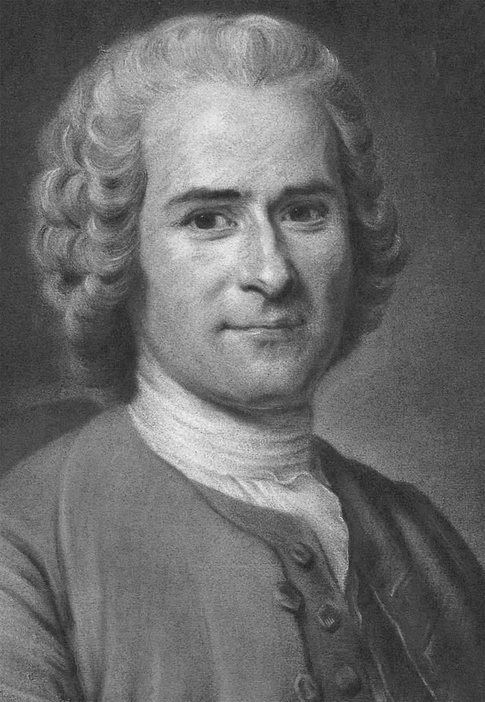
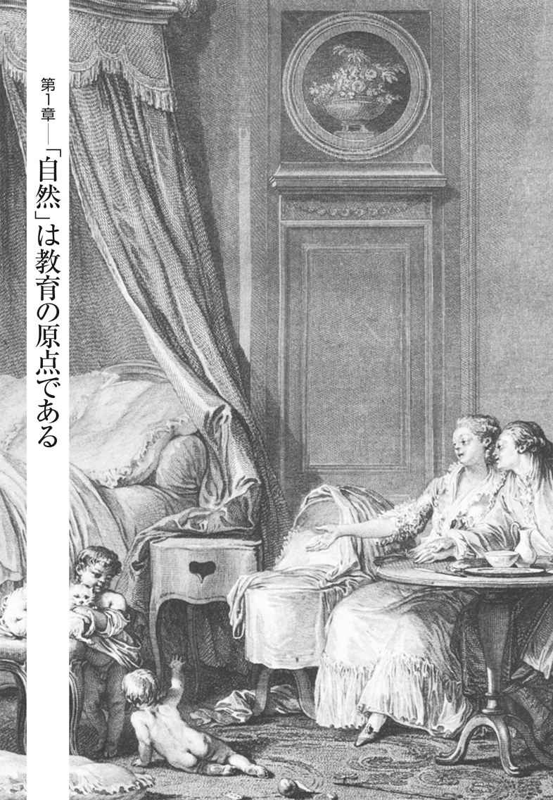
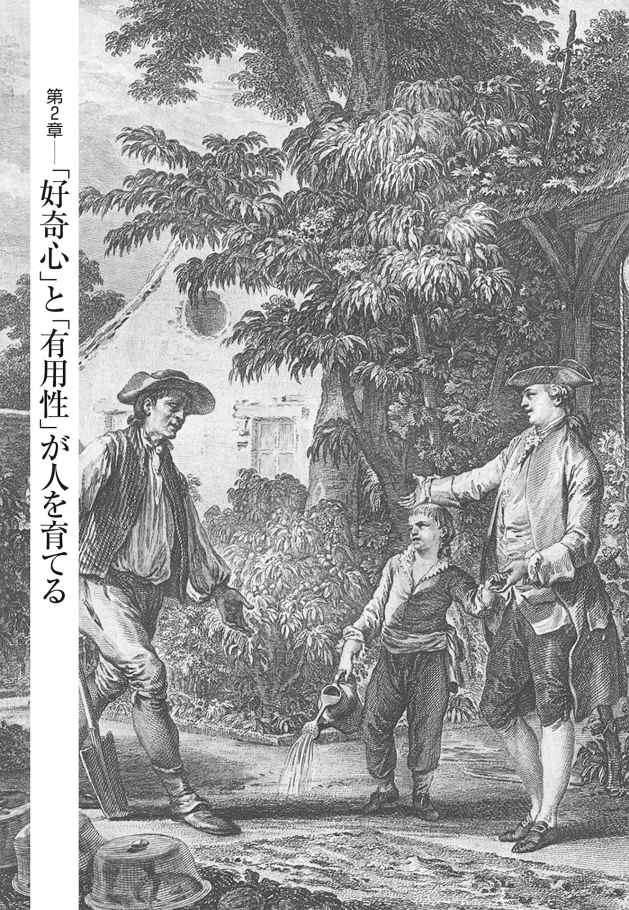
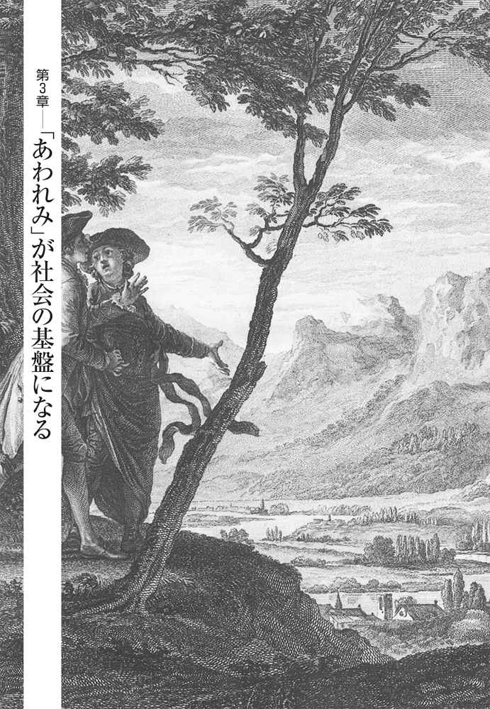
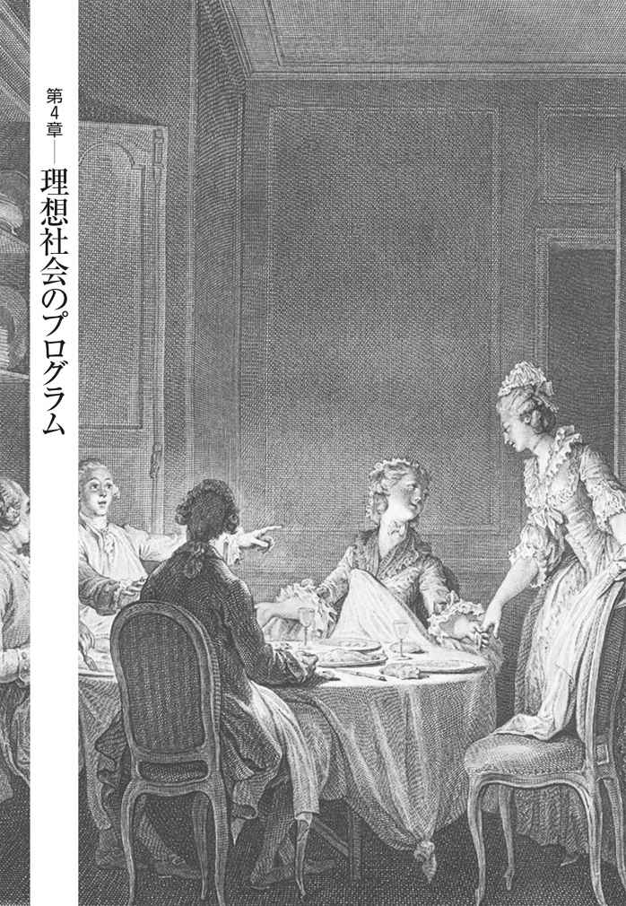

| ＮＨＫ「１００分ｄｅ名著」ブックス ルソー エミール 自分のために生き、みんなのために生きる | |
| 西 研 | |
| ＮＨＫ出版 (2017) | |
ＮＨＫ100分de名著ブックス
エミール
～自分のために生き、みんなのために生きる
ルソー
西 研

はじめに ── 真に自由な人間を育てるために
十八世紀のフランスで活躍したジャン＝ジャック・ルソー（一七一二～七八）は、近代の「自由な社会」の理念を設計した思想家です。フランス革命によって絶対王政が倒れ、封建的な身分制度が廃止されるのはルソーの死の十一年後ですが、ルソーはこの革命を思想的に準備したともいわれています。
今回ご紹介する『エミール、または教育について』は、『社会契約論』と同じ一七六二年に出版されました。『社会契約論』が自由な社会の「制度論」を展開したのに対し、『エミール』は自由な社会を担いうる人間を育てるための「教育論・人間論」を展開しています。この二冊はいわば車の両輪であり、二つで一体の書物だといえるところがあります。
ルソーの考えた「自由な社会」とは、平和共存するために必要なことを、自分たちで話し合ってルール（法律）として取り決める「自治」の社会でした。権力者が勝手な命令を押しつけてきたり、一部の人たちだけが得をする不公平な法律や政策がまかりとおったりすることのない、そんな社会です。
そういう自由な社会をつくるために、『社会契約論』でルソーは「一般意志」（皆が欲すること）という概念を提示しました。〈社会（国家）とは、構成員すべてが対等かつ平和に共存するために創られたものだ。だから、そこでの法律は、どんな人にとっても利益となること、つまり、皆が欲すること（一般意志）でなくてはならない〉。そうルソーはいっています。
人びとが集まって人民集会（議会）を開くときは、提出された法案についてそれが本当に皆の利益になるかどうか（一般意志といえるかどうか）を議論します。最終的には多数決で決めるのですが、その法の正当性は「多数が賛成したから」という点にあるのではなく、それが「一般意志である＝皆にとっての利益である」という点にある、とルソーはいいます。つまり、いくら多数が賛成したとしても、一部の人に損害を与えるような不公平な法律には正当性はないのです。
この考え方に最初出会ったとき、ぼくはびっくりしました。「多数決の民主主義は噓くさい。結局は、力のある者が多数をとって法律をつくるだけになる」。そんなふうに若いときのぼくは思っていたからです。だから、〈法律は一般意志でなくてはならない〉というルソーの考えには強く共感しました。しかし疑問もわいてきました。「人はまずは自分の利益を考えるもの。みんなの利益を考えるようになれるのかな」とも。
自由な自治の社会が成り立つためには、公共の利益を考え実現しようとする姿勢が必要です。自分の利益はもちろん大事ですが、他の人たちの言い分もよく聞いて〝自分も含めたみんなが得になるような〟ルールをつくっていく。そういう姿勢をもつ人間は、どうやったら育つのか。これは、ルソーの大きな思想的な課題でした。
ですから、教育論である『エミール』の目的の一つは、「みんなのため」を考えられる人間をどうやって育てるか、ということになります。もっとも、みんなのため、といっても自分を犠牲にして国家に尽くすということではなく、〝自分も含むみんなの利益〟をきちんと考える、ということです。
『エミール』の目的はもう一つあります。ルソーは、個人としての生き方の面でも、真に自由な人間を育てようとしました。しかしこれにも大きな困難があると考えていました。
〈文明が発達した相互依存的な社会のなかでは、人は自分を、名誉・権力・富・名声のような社会的評価でもって測るようになり、そしてまわりの評価にひきずりまわされる。それでは自由とはいえない。そうではなくて、自分の必要や幸福をみずから判断して「自分のために」生きられる人間こそが真に自由な人間だ〉。こうルソーは考えました。自分のため、といっても単に利己的な人間ということではありません。自分にとって必要なことは何か。また自分はどう生きたいのか。つまり自分の生き方についての価値基準をしっかりと「自分のなかに」もっているということです。
まとめてみましょう。ルソーが『エミール』で課題としたのは、「自分のため」と「みんなのため」という、折り合いにくい二つを両立させた真に自由な人間をどうやって育てるか、ということでした。この難しい課題に対して、この本は彼なりの答えを示しています。
ルソーの提示した、自由な社会と自由な生き方の構想は、隣のドイツの人びとにも大きな影響を与えました。「ドイツ観念論」といういかめしい名の哲学で知られるカントやヘーゲルはルソーの熱烈なファンでしたし、ヘーゲルの弟子筋のマルクスもルソーの愛読者でした。ルソーがいなければこれらの人たちは出てこなかった、といえるほど、ルソーは近代の思想家たちに深い影響を与えたのです。
では、ルソーはもう過去の思想家なのでしょうか。決してそんなことはありません。
現代の私たちは、自分のなかに自分の生き方の基準をもつ、自由で自立した人間になっているでしょうか？ いまの日本の子どもたちや若者たちは、空気を読むということに必死だといわれます。そのため「個性的」という言葉が、いまは悪口に、つまり「空気が読めないヤツ」ということの婉 曲 な言い回しになっているのだそうです（ ＊ ） 。「俺はこれがしたい」「わたしはこれで満足だ」という、自分なりの基準をもって生きることはますます難しくなっているように思えます。
また「みんなのため」を考え実現できる、つまり自治できる人間は育っているでしょうか。ルソーがイメージしていたのは、対等に、お互いの都合や利害を正直に出し合い聞き合いながら、「どうするのがみんなのためにいちばん良いのか」を議論することでした。しかし「空気」を恐れながら生きるとき、人は自分の都合を口に出すことはできないでしょう。私たちの社会は人権と民主主義を柱とする憲法をもっていますが、部活やサークルや地方自治の場面など、いろいろなところでほんとうに民主的・自治的な場面をつくれているかといえば、首を傾げざるをえないと思います。
「自分のため」に生き、また「みんなのため」に生きる、そうした人間はどうやったら育つのか。いまからおよそ二百五十年も前にルソーが提示したこの課題は、現代においてもまったく古びていないどころか、いまますます重要なものになってきていると思います。
＊ 土井隆義『子どもたちの風景～学校の日常をどう生きているか～』（自由の森学園ブックレット⑤、二〇一六年、20 ～21 ページ）による。
目次
真に自由な人間を育てるために
「自然」は教育の原点である
「好奇心」と「有用性」が人を育てる
「あわれみ」が社会の基盤になる
どう生きるかの根本の指針をもつ──「サヴォワの助任司祭の信仰告白」
理想社会のプログラム
自由に生きられるための条件を考える
やりたいこととめがけるべき価値をもつ──自由であるための条件その１
将来のために役立つ技能・知識を身につける──自由であるための条件その２
価値を吟味する力と自治しうる力を育てる──自由であるための条件その３

子どもの発見
『エミール』は、著者ルソー自身である語り手が家庭教師となって、エミールという架空の男の子をいかに育てあげていくかを空想し、それを小説のような形式で語った作品です。といっても、いわゆる小説らしい筋があるわけではありません。正式な書名は『エミール、または教育について』というのですが、エミールが生まれてから大人になり結婚するまで、彼にどのような教育をしていけばよいかが、具体的な実例を挙げながら、きわめて生き生きとした筆致で丹念に論じられていきます。
日本語訳の文庫本で三分冊になるという長大な作品で、エミールの成長に沿って、以下の五つの編に分けられています。
第一編...... エミールが〇歳からほぼ一歳頃までの、乳幼児期
第二編...... 口がきけるようになる一歳頃から十二歳頃までの、児童期・少年前期
第三編...... 十二歳頃から十五歳までの、少年後期
第四編...... 十五歳から二十歳までの、思春期・青年期
第五編...... 二十歳以降の、青年期最後の時期
まず、ルソーは第一編の前に置かれた序文で、子どもという存在を見出します。「子どもの発見」は、実は十八世紀のヨーロッパでは、きわめて画期的なことでした。
人は子どもというものを知らない。子どもについてまちがった観念をもっているので、議論を進めれば進めるほど迷路にはいりこむ。このうえなく賢明な人々でさえ、大人が知らなければならないことに熱中して、子どもにはなにが学べるかを考えない。かれらは子どものうちに大人をもとめ、大人になるまえに子どもがどういうものであるかを考えない。
（『エミール』今野一雄訳、岩波文庫、上巻23 ページ。以下同）
子どもには発達段階というものがあることは現代においては常識ですが、この当時のフランスでは子どもは「小さい大人（ ＊１ ） 」としか見られていませんでした。貴族やブルジョワの富裕層のあいだで「優れた教育」といえば、古典を大人顔負けに暗唱させるといった類のものだったようです。しかし、子どもを小さい大人として見るのではなく、まずちゃんと観察しなさいとルソーはいいます。子どもの発達には段階があり、それぞれに応じたふさわしい教育があるはずだというのです。ルソーはそういう考え方をもっとも早く述べた思想家でした。
続いて第一編では、口がきけるようになる以前の、乳幼児期のことが描かれるのですが、具体的な論に入る前に、子どもの教育はどうあるべきか、についての基本的な考え方を示しています。第一編の冒頭はこのように始まります。
万物をつくる者の手をはなれるときすべてはよいものであるが、人間の手にうつるとすべてが悪くなる。（中略）人間はみにくいもの、怪物を好む。なにひとつ自然がつくったままにしておかない。人間そのものさえそうだ。人間も乗馬のように調教しなければならない。庭木みたいに、好きなようにねじまげなければならない。
しかし、そういうことがなければ、すべてはもっと悪くなるのであって、わたしたち人間は中途半端にされることを望まない。こんにちのような状態にあっては、生まれたときから他の人々のなかにほうりだされている人間は、だれよりもゆがんだ人間になるだろう。偏見、権威、必然、実例、わたしたちをおさえつけているいっさいの社会制度がその人の自然をしめころし、そのかわりに、なんにももたらさないことになるだろう。
（上巻27 ページ）
人間は何でも思い通りにコントロールしようとします。教育にもそういう側面、人間を「好きなようにねじまげ」る性格があります。しかし、教育などせずに放置しておけばいいかといえばそうではなく、「すべてはもっと悪くなる」というのです。
ルソーは、よく誤解されるように、単純に「自然へ帰れ（ ＊２ ） 」といっているわけではありません。原始の自然状態がよかったとしても、私たちはいまさら原始人に戻ることはできないのだから、現在の人為的な社会関係がさまざまな悪い面をもっているにせよ、それをうまくコントロールしていくしかないとルソーは考えていました。
では、教育の根幹をルソーはどう考えるのでしょうか。それを、「三種類の先生」による「三つの教育」── 「自然の教育」「人間の教育」「事物の教育」によって説明しています。
まず「自然の教育」というときの「自然」とは、人間の内なる自然のことを指します。子どもが手足を自由に動かせるようになるのは、人間の内なる自然によるもので、いわば自然そのものが教えてくれる、ということです。次に「人間の教育」とは、親や学校の先生、家庭教師など、大人による一般的な意味での教育のことです。そして「事物の教育」とは、子どもが現実のさまざまなモノやコトに出会って経験から学ぶことを意味します。
「自然の教育」における内的発達には段階があって不変なものなので、これが教育の柱になるべきだとルソーは考えます。つまり、この自然の発達段階に沿うようにして、「事物の教育」「人間の教育」は行われなくてはならないのです。
では、どのような発達段階を人はたどっていくのか。生まれたばかりの子どもは、理性も判断もなく、感覚しかもっていません。触覚・視覚・聴覚・味覚・嗅 覚 などの感覚は未分化で、「快・不快」だけで世界ができています。そこからしだいにそれぞれの感覚が分化・発達していき、運動能力が発達していきます（乳幼児期から児童期）。この時期は、教師はとくに何かを教えこんだりしません。少年期になると教師からの教育がはじまり、「有用なもの」とそうでないものを区別し、色々な事物を積極的に利用することを学びます。思春期・青年期になると、さらに社会や人びとの生き方にも視野を広げ、最終的には理性的な判断をすることを学んでいくことになります。
このような「自然の教育」の歩みに沿うのが教育の基本ですから、幼いときから急いで多くの知識を無理矢理教え込もうとする「促成栽培」は駄目だということになります。身体の感覚や運動能力が十分に発達すると、それを土台にして知性が発達してくるのだから、最初の時期はとくにゆっくりと待たなくてはならない、とルソーは強調しています。
「自然人」と「社会人」の対立を克服する
では、ルソーが『エミール』で描こうとした教育の最終目標はどこにあるのか。それは、「自然人」と「社会人」の対立を克服することです。ルソーのいう「自然人」とは、自分のために 生きている存在のことです。それが人間にとって根本的なありかただとルソーは考えています。一方、人間は社会をつくって生きている「社会人」でもあります。自然人として自分のために生きようとすれば、社会のなかで他者に貢献することはできません。しかし、社会人として他者のために 生きようとすれば、自分の幸福が犠牲になるかもしれません。その矛盾を乗り越えようというのが、本書の大事な論点です。
「もっぱら自分のために教育された人は、ほかの人にとってどういう者になるか。もし、人がめざす二重の目的が一つにむすびつけられるなら、人間の矛盾をとりのぞくことによって、その幸福の大きな障害をとりのぞくことになる」（上巻36 ページ）とルソーはいっています。
具体的には、十五歳くらいまで（第三編まで）は、徹底的に「自分のために」生きる人間に育てます。そのためにルソーは、他者との競争心や、他者からほめられるためにがんばるという動機を完全に取り除くように環境を設定しています。エミールは家庭教師が見守るなか、一人で毎日野原を走り回って遊びます。「自分が」楽しい、気持ちいいとか、さらには自分の好奇心や必要性が満たされるということを大事にして育てるのです。このように、他者にほめられるために右往左往するような人間にしない という方針はじつに強く打ち出されています。しかし、友だちと遊ばないというのはかなり極端な設定だと感じる方も多いことでしょう。この点については後でもう一度考えてみます。
このように、自分自身のために生きるという軸をしっかりつくったうえで、十五歳以降（第四編以降）は、他者に対する思いやりや共感能力を育てていきます。そこから公共心、つまり、自分のためだけでなくみんなのために役立つ人間になる、というテーマが出てきます。
この本は「近代教育学の古典」ともいわれますが、ここで語られるルソーの教育論は、一人の子どもを自立した人間として、さらには自由な社会を担っていくことができる人間として育てることを目的としています。すなわち、名誉や富や権力といった社会的な評価で自分を測るのではなく、自分を測る基準となる軸を自分のなかにもつこと。そして同時に、他者への共感能力にもとづいた公共性をもつこと。それらをもったうえで、民主的な社会の一員として、お互いの意見を出し合いながら、みんなの利益となる「一般意志」を取り出してルールをつくる。つまり自治しうる人間を育てる── 。
これは理想の教育についての、一種の壮大な思考実験ともいえます。そしてこの作品には、ルソーの思想と問題意識がたっぷりと詰まっています。ルソー本人は哲学者と呼ばれることを好みませんでしたが、論理を突き詰めていく彼の思考は、書き方は文学的でも、明らかに哲学だとぼくは思っています。
このような著作は、なぜ、どのような歴史的背景のもとで書かれたのでしょうか。『エミール』の細かい内容に入っていく前に、ここで著者であるルソーの、独特の魅力をもった人となりと、その思想の成り立ちについてご紹介しておきましょう。
独学の天才、ルソー
ジャン＝ジャック・ルソーは、フランスではなく、スイスのフランス語圏にあるジュネーヴで、一七一二年に生まれています。ジュネーヴは、宗教改革の指導者の一人カルヴァン（ ＊３ ） がいたところで、十六世紀にはプロテスタントの改革派（ ＊４ ） の拠点となり、カトリックのサヴォワ公国（ ＊５ ） からジュネーヴ共和国として独立した都市国家でした。
十八世紀当時のジュネーヴは、実質的には一部の人びとが権力を独占してしまっていたようですが、建前としては民主的な、市民の合議による共和制を誇りにしていました。『社会契約論（ ＊６ ） 』や『エミール』の原点は、ルソーの生まれ故郷であるジュネーヴにあるのかもしれません。
ルソーの父親は時計職人で、祖国ジュネーヴを愛する誇り高い市民でした。母親はルソーの生後間もなく亡くなっています。母親のいないルソーは、幼い頃から父親とともにたくさんの本を読みながら育っていきます。幼くして『英雄伝（ ＊７ ） 』などの書物を読みすぎたために、自分は過度にロマンチックな人間になってしまったと、彼は後年、自伝『告白（ ＊８ ） 』で語っています。
十歳のとき、父親が決闘沙汰を起こしてジュネーヴから逃亡してしまい、ルソーは孤児同然の状況に陥ります。親戚によって牧師に預けられ、十三歳で時計彫刻師の職人に弟子入りしますが、そこで親方にさんざん殴られていた彼は、十五歳のときジュネーヴの門の閉まる刻限に遅刻してしまい、また親方に怒られると思って出奔してしまいます。それからは貧しい放浪生活のなかで、カトリックに改宗したりもします。そうすれば、教会から施しの食べ物をもらえたからです（後年再びプロテスタントに改宗します）。
ルソーはサヴォワでヴァラン夫人（ ＊９ ） という貴族の未亡人と出会い、彼女の邸宅に転がり込んで生活の面倒をみてもらうようになります。やがて二十歳になる頃には、ヴァラン夫人と男女の関係にもなります。ルソー本人は、自分の顔立ちがよかったからだ、などといっていますが、どうやら実際に女性に好かれる魅力をもっていたらしく、『告白』を読むと、みずからの女性遍歴が赤 裸 々 に描かれていて、彼にとって女性との恋愛が人生のうえでいかに大きな要素だったかがわかります。
邸宅の図書室にはたくさんの蔵書がありました。そこで彼はギリシア、ローマの古典から、近代の哲学、文学、自然科学に至るさまざまな本をむさぼるように読み、多くの知識を得ます。ヴァラン夫人の庇 護 のもとで、学問とともに音楽にも親しみながら過ごしたこのときのことを、ルソーは二人の親密な幸福な時期だったと述べています。のちにルソーは作曲活動もするようになりますが、皆さんもよくご存じの「むすんでひらいて（ ＊10 ） 」のメロディは、実はルソーが作曲したオペラの一節です。このように、ルソーは独学で知識や教養を身につけた人で、正式な学校教育はほとんど受けていません。一種の天才的な頭脳をもった人だったといえるでしょう。
では、そんな田舎の独学者ルソーが、どのようにしてフランスの華々しい知的な世界に登場することができたのでしょうか。長い間ヴァラン夫人のところを出たり戻ったりしていた彼ですが、三十歳のときにそこを決定的に去ってパリに出て、みずから考案した音楽の数字記譜法を科学アカデミーで発表します。しかしそれは成功しませんでした。パリでの生活は当然貧しいものでしたが、それでも音楽論を発表したり、フランス大使の秘書になってヴェネツィアに行ったり、戻ってきてオペラを創ったりしています。そして下宿で給仕や洗濯などをしていたテレーズという身分の低い女性と恋仲になります。ルソーはそれからもさまざまな女性と恋愛しますが、結局テレーズが生涯の伴侶となり、後年になって正式に結婚もしています。しかし彼女とのあいだにできた五人の子どもは、次々と孤児院に入れてしまいました。
後年ヴォルテール（ ＊11 ） によってその事実が暴かれ、理想の教育論『エミール』の著者の実態として、当然のごとく大きなスキャンダルとなりました。自分勝手といえばまさにそのとおりですが、ぼくはルソーに同情したくなってしまいます。ルソーには財産も定収もなく、なんの後ろ楯もなしにパリに出て、楽譜の書写などで細々と収入を得ていました。ですから、自分にとっていちばん大事な音楽と文筆を続けていくためにやむを得ないところがあったとも思うのです。もしかすると『エミール』を書くとき、ルソーには自分の子どもを自分で育てられなかったことに対する後悔や、贖 罪 の気持ちもあったのかもしれません。
そんななか、ルソーに転機が訪れます。一七五〇年、ディジョンのアカデミー（ ＊12 ） の懸賞論文に応募して、一等に入選したのです。「学問芸術論（ ＊13 ） 」と題されたその論文には、学問や芸術が人間をいかに堕落させたかということが、厳しい調子で書かれています。〈人は学問や芸術によって、社会から評価され上昇しようと努め、自分だけが賢いと自惚 れて他の人びとへの愛を忘れる。むしろ、知識を忘れて「自己自身にたちかえり」、良心の声を聴いて徳のある生き方をすることが重要だ〉というのです。この挑発的な論文によって、三十八歳にして初めて、ルソーは知的な世界で注目されることになり、そこからいよいよ本格的な文筆活動が始まります。
人間の不平等の起原は農業にある
十八世紀フランスの知的な世界で最も先進的とされていたのは、隣国イギリスの文化でした。イギリスでは十七世紀の末に名誉革命（ ＊14 ） が起こり、国王の権力を制限し、国王は「君臨すれども統治せず」という議会政治の基礎がつくられました。そのさいの基本原則となったのが、名誉革命直後に『統治二論』（一六八九）を上 梓 したジョン・ロック（ ＊15 ） の思想です。これは民主主義と人権の思想の源流となりました。
〈人間は身分などに関係なく、みな対等であり、どんな人間でも、他者の「生命、健康、自由および所有物」を奪ってはならない。それは人が生まれながらにして神から与えられた「自然権」である〉。このロックの自然権の思想が、後に「人権」と呼ばれるものへと発展していきます。ロックはさらに、自然権を守るために対等な人びとが契約して政府をつくり議会でもって法をつくる、という民主主義の基本的な考え方を定めました。ちなみにルソーは、権利の根源は神から与えられたものではなく、人間同士の合意にもとづく社会契約にあると考えます。そして人民主権の立場を、ロックよりもさらに明確に打ち出すことになるのです。
当時のフランスはまだ産業の面でもイギリスほどに発展しておらず、ルイ十五世（ ＊16 ） 治下の絶対王政の時代です。まだまだ封建的な身分制の社会なのですが、貴族や知識人たちの知的なサロンでは、ロックの先進的な思想について会話が交わされるような、自由主義的な雰囲気が出始めていました。それは「啓蒙主義」と呼ばれる思想的な動きになっていきます。
自由思想を標 榜 するヴォルテールや、ルソーと同世代でいち早くデビューしたディドロ（ ＊17 ） などが当時の思想界を代表する大物でした。ルソーも彼らと交流して、ディドロとダランベール（ ＊18 ） が編纂する『百科全書（ ＊19 ） 』の項目をいくつか書いたりもします。しかしのちにいろいろともめて、やがて彼らとは仲違いすることになります。そこには、ルソーのコンプレックスや被害妄想も多分に関わっていたようです。
啓蒙主義には、人びとが文字を読み、理性的な文化・文明を身につけていくことが進歩だという考え方があります。ところがルソーは、「学問芸術論」でも書いていたように、文化・文明の進展には、むしろ人間を駄目にした面があると考えていました。そうした近代批判の先駆けのようなところがルソーにはあって、そこは百科全書派の思想家たちとは色合いが異なるところです。
一七五五年、四十二歳のルソーは『人間不平等起原論（ ＊20 ） 』を発表します。富や権力の不平等は昔からあったのではなく、もともと平等だった未開の原始状態から文明社会を形成していく過程で生じてきたのだ、と主張した本です。
まず、原始において人間は、森の中で自由気ままに一人で暮らしていたと述べています。現代の知見からみると怪しい仮説ですが、子どもをつくるときだけ男女が一緒になって、それ以外は基本的に一人でいると想定しています。だから自由で、身分も不平等もないことになります。ここでルソーは、最も根源的な人間の本性には二つあって、一つは自己保存を求める衝動だとし、これを「自己愛」と呼んでいます。要するに、自分が死なないように気づかうことです。もう一つは「あわれみ」（pitié＝ピティエ）で、これは他の人間や動物が苦しんでいるのを見たときに自分も苦しいと感じること、つまり共感能力のことです。この二つはもともと原始人に備わっていたとされます。
だんだんと人が家族や集落をつくり、お祭りをしたり音楽を奏でたりするようになると、異性によく見られたいという競争心や自尊心も芽生えてきますが、狩猟・採集の素朴な社会生活のなかではまだ平和です。ところが、そこに巨大な変化をもたらしたものがある。それは農業であり、そのための鉄器をつくる冶 金 の技術だとルソーはいうのです。
冶金と農業が世界を変え、それによって私的所有というものができた。最初の私的な所有物は、土地です。土地を耕して作物を得るようになると、囲いをつくって「ここは俺の土地だから、他の者は入ってくるな」と宣言し、土地の私的所有が始まります。そうなると、飢 饉 が起これば、他人の作った作物や地味の肥えた他人の土地を奪おうとしますから、「戦争状態」が発生するということになります。
十七世紀イギリスの哲学者で、ロックより前にホッブズ（ ＊21 ） という人がいます。この人はルソーへとつながる社会契約説を早い時期に唱えた人なのですが、代表作『リヴァイアサン（ ＊22 ） 』（一六五一）で、人間というのは自己保存と快を追求する存在なのだから、国家のない「自然状態」は必ず「戦争状態」になると説きました。しかしルソーはそうではなく、自然状態では幸福で平和だったが、農業による土地の私的所有が始まることで、戦争状態が生まれたというのです。富を持つ者と持たざる者ができ、戦争が常態化すると、次に人びとは、自分たちの土地や所有物を守るために国家をつくることになります。しかしいったん国家のような政治体ができてしまうと、権力や富をもっている人びとの身分が固定化していき、その対極に貧困や奴隷制が生じ、不平等な社会ができあがっていく── というのがルソーの説です。そして、こういいます。
未開人は自分自身のなかで生きている。社会に生きる人は、常に自分の外にあり、他人の意見のなかでしか生きられない。そしていわばただ他人の判断だけから、彼は自分の存在の感情を引き出しているのである。
（『人間不平等起原論』本田喜代治・平岡昇訳、岩波文庫、１２９ページ）
ここでいう「他人の判断」とは、名誉、富、権力、名声といったものです。つまり、自由な未開人とは異なり、社会に生きる社会人には自分を測る基準が自分の内側にはなく、他人から評価される基準しかないというのです。この言葉に、自分のことを言われたように感じる人もいるのではないでしょうか。
またこの本には、「国王だろうが貴族だろうが元はみな同じで、単に富や権力を独占した人間が自分は偉いといっているだけの話だ」という考えが含まれています。当時としてはかなり過激で、よく禁書にならなかったものだと思えるくらい革命的なものでした。
『エミール』刊行、そして迫害
そんな過激な思想家であるにもかかわらず、一方でルソーには、読者に親しみやすさを感じさせる魅力があります。一七六一年に発表した書簡体の恋愛小説『新エロイーズ（ ＊23 ） 』は、当時ヨーロッパ中で読まれる大ベストセラーになりました。貴族の娘と家庭教師の恋愛を描いたこの小説によって、彼は小説『カンディード（ ＊24 ） 』を書いたヴォルテールと並んで、いわば十八世紀最大の文筆界のスターとなったのです。
ルソーの書く文章には、あたかもすぐ目の前で本人が語っているような、独特の生々しさがあって、読み手にはルソーの思いがそのまま伝わってくるかのようです。『エミール』もそんな本で、ちゃんと筋は通っているのだけれど、まるで好き勝手に書いたように話が飛んだりする、お世辞にもお行儀がよいとはいえない文章です。しかし、そこが何とも人間的で面白いのです。
哲学者カント（ ＊25 ） は規則正しい生活習慣を守ったことで知られる人物ですが、あるとき『エミール』を夢中になって読み耽 り、毎日恒例の午後の散歩に現れないので、近所の人たちが心配したという逸話が残されています。カントはルソーより十二歳年下で、ヘーゲル（ ＊26 ） はルソーより六十年ほど後の人ですが、二人ともルソーの影響を強く受けています。しかし、彼らのいかめしい文体と比べて、どっちがより現代に近いのだろうと思うくらい、ルソーの文体は生き生きとしています。
そして『新エロイーズ』刊行の翌年、四十九歳のとき、ルソーはついに代表作となる『社会契約論』と『エミール』の二冊を上梓します。しかしながら出版後しばらくすると、今度は両方とも危険な書物として禁書になり、ルソーには逮捕状まで出てしまいます。前者は政治的理由により、後者はそこに含まれた宗教論により断罪されたのです。『社会契約論』については、そのミニチュア版ともいうべきものが『エミール』のなかに出てきますので、またあとでお話ししましょう。
フランスにいられなくなったルソーは故郷ジュネーヴに向かいますが、ここでも市当局によってこれらの書物が焚書にされ、また逮捕命令が出てしまいます。迫害され、帰る場所のない亡命者となったルソーですが、大人気作家となってファンがたくさんいたおかげで、その後は各地の貴族たちの館を転々としながら匿 ってもらうことになります。スイスのプロシア領（の飛地）に滞在したり、哲学者ヒューム（ ＊27 ） を頼ってロンドンに渡ったりした末、偽名でフランスに戻ります。このように匿われながら、自伝『告白』や未完の『孤独な散歩者の夢想（ ＊28 ） 』を書き、一七七八年、パリ郊外で六十六歳で亡くなりました。
職人の子であり正式な高等教育も受けていないルソーが、貴族や金持ちたちの知的なサロンで認められるまでには、自分を〝田舎者〟〝野人〟のように感じたり、時には媚 びを売らなければならなかったりもしたでしょう。そんなコンプレックスやいやな経験も、自由な人間を育てようという『エミール』という作品を彼に書かせる、動機の一つだったのではないでしょうか。
自然の発達に従う── 第一編 乳幼児期
それでは、『エミール』に戻りましょう。
「自然人」と「社会人」の矛盾を克服する理想の人間を育てるために、ルソーはエミールという架空の子どもを設定します。
エミールは孤児です。両親はいないので、語り手の家庭教師（ルソー自身）が親の義務と権利をすべて受け継ぐ、ということになっています。つまり、この家庭教師は事実上、親代わりなのです。そのほかに乳母がいて、エミールにお乳をあげるのは彼女です。また、エミールはフランス人のお金持ちの子で、健康な肉体をもっていることになっています。なぜそんな設定なのかといえば、貧しい家の子だと小さいうちから働かねばならないので、理想の教育をすることはできませんし、病弱だと家庭教師は教育をするどころか、もっぱら看護者になってしまうからです。そして家庭教師は、堕落した都会を離れて、自然豊かな田舎でエミールを育てることにします。
ルソーはこの架空の設定によって、差別的な偏見に満ちた社会から隔離して、家庭教師が完全にコントロールできる状況をつくります。何人かの使用人以外は、家庭教師と子どもの二人だけの生活のなかで理想の教育をしていくことになるのです。
さて第一編は、ここからようやく乳幼児期の育て方に入っていきます。
自然の発達段階に従った教育をするためには、子ども本人の感覚や、運動する力を十分に発揮させなければなりません。当時のフランスのお金持ちの家では、親は乳母に子育てをまかせっきりにして、乳母は楽をするために、赤ん坊が動きまわったりしないよう、産 着 で体を締めつけて、壁に引っ掛けたりしていました。そうして赤ん坊を放っておいて、泣いたらお乳をやるのです。そんな子育ては駄目で、子どもが手足を自由に動かせるようにしなさいとルソーはいいます。
また、親子の情愛の大切さも強調しています。母は社交界で活躍するために乳母に子育てをまかせ、父はただお金を出すだけ、という上流社会の子育てのありかたに対して、ルソーは「子どもは乳房と同じように母親の心づかいを必要としているのではないか。（中略）母親としての心づかいにはかわりになるものがない」（上巻47 ページ）と述べています。母親が自分のお乳をあげて愛情をもって赤ん坊を育てることが大切だし、夫もそれに協力することで、夫婦の結びつきも深くなって家庭も温かい場所になる── これは、いまではごくあたりまえの考え方ですが、当時のお金持ちにとっては革命的な子育て論でした。もっとも、エミールの場合は孤児ですから、乳母がお乳をやることになりますが。
この時期は、感覚と知覚とが発達する時期です。最初の感覚は喜びと苦しみ、つまり快と不快しかない、とルソーはいいます。「歩くことも、物をつかむこともできないかれらは、長い時間をかけて、すこしずつ、かれら自身の外にある物体を示してくれる表象的感覚を形づくる」（上巻91 ページ）。自分の外に物が独立してあるのだということに気づくまでには時間がかかる。そうなるためには、さわったりいじったりすることが大切だから、そういう好奇心を抑えてはいけない、と述べています。
二十世紀の発達心理学の祖の一人であるピアジェ（ ＊29 ） は、自分の外に恒常的に独立した事物があるという観念は、最初から子どものなかにあるのではなく、物に関わる感覚と運動の発達のなかで形成されてくると述べました。ルソーのいっていることは、まさしくピアジェ説の原型です。最初は快と不快だけだった感覚が分化して、手の感覚と舌の感覚と視覚などに分かれます。そして同じ事物を目で見たり手で触れたり舌で舐 めたりする、つまり、こんどは諸感覚を連動させながら事物というものを理解していくとルソーはいいます。
さて、乳母と家庭教師は子どもを気づかい、子どもの欲求を満たしてあげなくてはなりません。しかし、そのさい注意すべきことがあります。「習慣をつけさせないこと」です。いつも決まった時間にお乳をやる、というような習慣をつけてしまうと、ほんとうの欲求ではなく、習慣から欲求が生じるようになってしまうからいけない。そうではなく、あくまでも子どもの自然の欲求に従って世話をするようにする。子どもは自分で欲求を満たせない場合は泣いて求めるのだから、それに応えてあげればいい、とルソーはいいます。しかし、生活習慣的なものをまったくつけない、ということは考えにくいようにぼくは思いますが...... 。
もう一つ注意すべきことは、「子どもを〝暴君〟にしないこと」です。最初は懇願だった泣き声も、やがて養育者への「命令」になってしまいかねません。だから、子どもの気まぐれな欲求に取り合っていると、子どもはすぐわがままになります。暴君的なパーソナリティを身につけてしまうことは避けなくてはなりません。これも実際にどこまで本来の欲求と気まぐれとを区別できるかは難しいところですが、原則としてはそうするということです。
第一編の終わりのほうに、まとめとして、子どもが「自然の道にとどまる」つまり本来の発達の道を歩んでいくための、四つの「格 率 」が出てきます。格率とは聞き慣れない言葉かもしれませんが、一言でいうと「規則」のことです。
第一の格率── 自然に与えられた子どもの力を十分に発揮させること
第二の格率── 肉体的・知性的な必要を、養育者が助けてあげること
第三の格率── 必要なことだけに限って助け、気まぐれや理由のない欲望には何も与えないようにすること
第四の格率── 子どもを注意深く観察し、直接に自然から生じる欲求と臆 見 から生じるものとを見分けること
第四の格率にある「臆見」もわかりにくい言葉ですが、これは要するに、自然でほんとうに内的な欲求と、そうでないものとを養育者の側が見分けなくてはいけませんよ、ということです。
ここまでが第一編の概要ですが、現代の発達論からみて、大事な論点を一つ付け加えておきたいと思います。それは、子どもが感覚や感情や欲求を育てていくためには、「愛情」が、より正確にいえば「承認と応答の関係」が、必須であるということです。
児童精神医学者の滝川一廣（ ＊30 ） さんによれば、不快で泣いていた赤ちゃんは、養育者が「おなかが空いたのね、おっぱいあげる」「おむつが冷たいね、取り替えてあげるね」というふうに適切に対応してあげていると、最初は混沌としていた不快から、「空腹の不快」と「冷たさの不快」とが分化してくる。お腹が空いたときとおむつが冷たいときでは泣き声に違いが生じてくるので、それがわかるのだそうです。しかし逆に、「泣いたら哺乳瓶を口に突っ込まれる」というような対応を受け続けていると、感覚がちゃんと分化していかない。ですから、虐待されて育った人には感覚の異常が見られることが多いといいます。たとえば、とても寒い日なのにＴシャツ一枚で平気、というように...... 。
これはつまり、子どもの感覚は、養育者が愛情をもって適切に対応するなかで育つということを意味しています。感情や欲求にも同様のことが言えます。「どうしたの、悲しいの？」「怒ったの？」、あるいは「お腹空いたの？」「美味しくなかった？」というように、親が子どもの感情や欲求をきちんと承認 し、それにふさわしく応答 することで、初めて子どもの感情や欲求は育ってくる。そうした承認と応答のことを心理学では「モニタリング」といいますが、このモニタリングがちゃんとなされず、親の機嫌が不安定で、突然怒り出したりするようだと、子どもはいつも親の機嫌をうかがっておかなければならず、自分の感情や欲求を訴えることができません。極端な場合には、「自分はいま怒っているのだ」「自分はこれが好きなのだ」ということもわからなくなります。自分という存在の主体的な核 ともいうべき、感情や欲求が自覚できなくなってしまうのです。
自由な人間になるためには、自分の感覚や感情や欲求を、しっかり自分のものとして自覚できることが重要です。ルソーも愛情の大切さに触れてはいますが、現代の視点から見ると、そうした子どもとの承認・応答関係による、感覚・感情・欲求の主体化（＝親の承認と応答によって、子どもは自分の感覚・感情・欲求を自分のものとして自覚することができる）という視点が、やや足りない部分かと思います。
では、次章では引き続き、『エミール』の第二編と第三編を見ていくことにしましょう。
＊１ 小さい大人
ヨーロッパでは近代になるまで、「子ども」という概念がなかった。子どもとは「小さい大人」「若い大人」であり、七歳くらいで両親から引き離されて大人たちのなかに入り、徒弟として仕事や遊びを共にした。家族や学校ではなく、その修業が、子どもが教育を受け社会化を遂げる場だった（アリエス『〈子供〉の誕生』による）。
＊２ 「自然へ帰れ」
ルソーの思想を要約した言葉とされる（ルソーの著作にこの文言はない）。「自然状態」には社会も所有もなく、人間は自己充足的に生きているが、やがて私有の観念とともに支配と隷属、暴力と略奪の「社会状態」が生まれて人間は不幸になった。だから自然状態から出直すべきだ、とルソーはいう。しかし、昔の自然に戻れないことはハッキリ自覚していた（『人間不平等起原論』）。
＊３ カルヴァン
一五〇九～六四。フランス生まれの宗教改革者。一五三六年、最初の体系的なプロテスタント神学書『キリスト教綱要』を著す。ジュネーヴに招かれ、四一年から終生、福音主義に基づく厳格な神政政治を推進した。
＊４ 改革派
宗教改革運動のうち、ドイツに生起したルター派とは別の、スイス・ジュネーヴに興ったプロテスタントの流れ、特にカルヴァン主義の教会を指していう。内面に沈潜する原理的・観照的なルター派に対し、社会的視野に立った実践を重視する。
＊５ サヴォワ公国
十一世紀以来、サヴォワ地方（フランス南東部・イタリア北西部にまたがる一帯）を支配していたサヴォワ家が、十五世紀に神聖ローマ皇帝から公位を与えられて成立。のちサルデーニャ王国（十八世紀）・イタリア王国（十九世紀）の王家となる。
＊６ 『社会契約論』
社会契約による一般意志の形成と国家の成立を論じた書（一七六二）。自然状態にとどまれない人間は、ともに暮らすための国家を創らねばならない。そこで、〈各人がその身体とすべての力を共同のものとして一般意志の指導の下におく〉ことを全員一致で約束（社会契約）し、国家が成立するという。
＊７ 『英雄伝』
古代ローマ帝政期にギリシア人プルタルコス（四六頃～一二〇頃）が著した人物伝。「アレクサンドロスとカエサル」など、ギリシア・ローマで類似の生涯を送った英雄を対比しているところから『対比列伝』とも。
＊８ 『告白』
ヴォルテールからの中傷や官憲の追及を受けたルソーが、自己正当化のために書いた自叙伝（十二巻）で、没後刊行（一七八二、八九）。自己の内面に沈潜し、過去を想起・反芻しては、自らの過去を書き換えていて、自伝というより個人の感情の歴史を描いた「作品」となっている。
＊９ ヴァラン夫人
一六九九～一七六二。スイス生まれ。「ヴァランス夫人」とも。十四歳で貴族のヴァラン氏と結婚したが、二十七歳で夫と別れ、サルデーニャ王の庇護を受けた。ルソーは生涯「ママン」（お母さん）と呼び、美と徳の化身として描くが（『告白』）、実際は、ややふしだらで浪費癖が強く、野心家の女性だったことが今日では知られている。
＊10 「むすんでひらいて」
ルソーが作詞（台本）・作曲した幕間劇（オペラの一種）『村の占い師』（一七五二）の中で演奏される器楽曲の旋律が原曲とされる。それがのち、歌曲・ピアノ曲に編曲される過程で、今日の旋律になったという。
＊11 ヴォルテール
一六九四～一七七八。知識と理性・寛容を説いたフランスの哲学者・文学者。理性よりも〈情念〉の高揚を認めるルソーとは人間観が根底から違ううえ、人間不平等論・神の摂理・演劇の評価をめぐって決裂、憎しみさえ抱くようになり、匿名出版した『市民の意見』（一七六四）で、ルソーの私生活を暴露、攻撃した。
＊12 ディジョンのアカデミー
ディジョンはフランス中東部、ブルゴーニュ地方の中心都市。ディジョン・アカデミーは、十七～十八世紀に四十ほども設立された地方アカデミーの一つで、中央のアカデミー・フランセーズ同様、毎年テーマを決めて懸賞論文を募っていた。
＊13 「学問芸術論」
ルソーがディジョン・アカデミーの「一七五〇年度懸賞論文」（課題「学問および芸術の復興は、習俗の純化に寄与したか」）に応え、「寄与しない」という否定の立場から執筆・応募し、当選した論文。応募十三論文のうち、否定の立場の論文はルソーのものを含め二つだった。
＊14 名誉革命
一六八八～八九年、イギリスで起きた革命。カトリック王ジェームズ二世を追放、プロテスタントのメアリー二世・ウィリアム三世夫妻が共同統治する一方、「権利章典」により議会主権に基づく立憲王政を確立。無血で成就したため「名誉」の名がある。
＊15 ジョン・ロック
一六三二～一七〇四。イギリスの哲学者・政治思想家。王政復古後の専制政治に反対してオランダに亡命。名誉革命直後に帰国し、『人間知性論』『統治二論』を相次いで刊行、哲学（経験論）・政治論（社会契約説）の両分野で大きな業績をあげた。
＊16 ルイ十五世
一七一〇～七四。フランス王（在位一七一五～七四）。対外戦争敗北で植民地を失って財政危機を招く一方、啓蒙思想の高まりになす術なく、王権を著しく弱体化させた。
＊17 ディドロ
一七一三～八四。フランスの啓蒙思想家。経験的合理主義に基づく唯物論の立場から、科学・創作など広範な分野で活躍。『百科全書』の編集責任者。著書『自然解釈論』など。
＊18 ダランベール
一七一七～八三。フランスの数学者・哲学者。動力学の〈ダランベールの定理〉など科学上の業績は多い。『百科全書』の共編者として、「序論」ほか多数の項目を執筆した。
＊19 『百科全書』
正式名『百科全書、または学問、芸術、工芸の合理的辞典』。フランス啓蒙思想を集大成した百科事典で、本文十七巻・図版十一巻（刊行一七五一～八〇）。執筆者総数百八十四名。
＊20 『人間不平等起原論』
ディジョン・アカデミーの「一七五三年度懸賞論文」（課題「人々の間の不平等の起原は何か。それは自然法によって是認されるかどうか」）への応募作。当選はしなかったが、五五年にジュネーヴ共和国への献辞と膨大な注を付して刊行した。
＊21 ホッブズ
一五八八～一六七九。イギリスの哲学者・政治思想家。デカルトやガリレオ・ガリレイに影響を受ける。その哲学は物体の機械的・必然的な運動により自然や社会を説明する唯物論的なもので、無神論との非難を受けた。
＊22 『リヴァイアサン』
国家（コモンウェルス）の成立を論じた書。著者は、社会契約によって誕生する国家を、『旧約聖書』に登場する怪物「レビヤタン（英語読みでリヴァイアサン）」になぞらえる。「平和と防衛とを人間に保障する地上の神」（第十七章）との意。
＊23 『新エロイーズ』
スイス・レマン湖畔ヴヴェイに住む男爵令嬢ジュリと平民の家庭教師サン＝プルーの恋と悲劇的結末に、周囲の人々の人間模様をからめた物語で、さまざまに取り交わされる百六十三通の手紙からなる書簡体小説。書名は、十二世紀に師のアベラールと有名な〈愛の書簡〉を交わした女性エロイーズの名から。
＊24 『カンディード』
一七五九年発表の哲学小説（コント）。「すべては善」と考える「最善説」を信じて育った青年カンディードが、世界中のあらゆる「悪」の見聞を経て、大地を踏みしめて自立する人間に成長するまでを描く。
＊25 カント
一七二四～一八〇四。ドイツの哲学者。理性能力の権限とそれが及ぶ範囲を吟味・検討する批判哲学を確立、大陸の合理論とイギリス経験論を総合したその体系は、啓蒙主義の最も深い正当づけの作業とされる。
＊26 ヘーゲル
一七七〇～一八三一。ドイツの哲学者で、ドイツ観念論の完成者。個々の意識を包含する人類的な意識（精神と呼ぶ）こそが絶対者であり、歴史を通じて自由を自覚していくとした。著書『精神現象学』『法哲学』『歴史哲学』など。
＊27 ヒューム
一七一一～七六。イギリスの哲学者。経験論を徹底し、知覚されたもの以外に客観的な世界は実在せず、〈精神〉も知覚の束にすぎないとした。外交官だった六六年、スイスを追われたルソーを保護してイギリスに伴ったが、ルソーを誹謗する印刷物の筆者と誤解され、絶交された。
＊28 『孤独な散歩者の夢想』
パリ市中のアパルトマンに住み、写譜の仕事をしてつつましく暮らし、文字通り孤独な散歩者となっていた最晩年のルソーが、自然、調和、静寂、希望、慰藉、徳などについてつれづれなるままに書きとめた書。執筆は一七七六～七八年で、中絶した「第十の散歩」を最後に未完となった。
＊29 ピアジェ
一八九六～一九八〇。スイスの心理学者。発達心理学（年齢に関連した経験・行動にみられる変化を対象とする心理学）の創始者の一人。四つの「知的発達段階」を提唱、子どもが、「接触する対象を別個の独立した存在として認識」するのは、最初の「感覚運動期」（〇～二歳）とした。著書に『発生的認識論序説』などがある。
＊30 滝川一廣
一九四七～。名古屋市立大医学部卒。名古屋児童福祉センター医師、愛知教育大学障害児治療センター教授を経て、学習院大学文学部心理学科教授。著書に『新しい思春期像と精神療法』『「こころ」の本質とは何か』『子どものための精神医学』などがある。

事物から学ぶ消極教育── 第二編 児童期・少年前期
第二編では、口がきけるようになってから十二歳くらいまでの長い時期を扱います。この時期は、エミールが経験から自分で学んでいくのを見守りますが、まだ積極的に教え込むことはしないという時期です。
口がきけるようになってしばらくすると、子どもには「自分」の意識というものが出てきます。だからこの時期は、人生の第二期の始まりだとルソーはいいます。
記憶があらゆる瞬間における自分の存在の同一性という感情を拡大する。かれはほんとうに一個の同一の人間となり、したがってすでに幸福あるいは不幸の感情をもつことができる。だから、これからはかれを一個の精神的存在と考える必要がある。
（上巻１２９ページ）
子どもは「いま・ここ」に生きているだけではなく、昨日のことも覚えているし、「私は私だ」という一貫した自分というものも出てきます。すると快・不快の感覚だけではなく、幸・不幸の感情もできるし、ちゃんと魂をもった人間になるのだということです。
そういう時期に家庭教師はどんな教育をするのでしょうか。基本的には第一編の時期と同様に、自分の力を存分に発揮させればよいと述べられています。たとえばエミールを毎日野原へ連れていって、走り回って遊ばせます。何回も転んで、しょっちゅうけがをしたりもするでしょうが、けがをしないようにと注意したりはしません。むしろ多少はけがをして、肉体的な苦痛というものを知っておいたほうがいいと家庭教師は述べます。
この第二編で面白いのは、現在を無視する教育への批判です。「不確実な未来のために現在を犠牲にする残酷な教育」はよくないと述べられているのです。教育というのはどうしても将来のことばかり考えて、能力を早く身につけさせようとしがちですから、子どもは「たえがたい束縛をうけ、徒刑囚のように、たえず苦しい勉強をさせられ」てしまうことになるのです。
当時のフランスでは乳幼児死亡率が現在よりもはるかに高く、ルソーは、生まれた子どもの半分くらいは大人になるまでに亡くなってしまう、と言っています。だからルソーは、二度とない快活な年頃の子ども時代に、精神的苦痛を与えて無理矢理に勉強させたりせず、いまを存分に楽しませ、生きる喜びを味わわせてあげよう、愛をもって子どもの遊びを見守ってあげようといいます。
このような自分の考えに対して、やはり将来が大事だとする異論が多くの人から出てくるだろうが、人間のもつ「先見の明」（未来を予見する能力）がかえって人間を不幸にすることがある、とルソーはいいます。先見の明とは、「わたしたちをたえずわたしたちの外へ追いだし、いつも現在を無とみなして、進むにしたがって遠くへ去って行く未来を休むひまもなく追い求め、わたしたちを今いないところに移すことによって、けっして到達しないところに移す、あのいつわりの知恵」（上巻１３２ページ）だというのです。実は次の第三編では、未来を予見する能力も生かさなければいけないとも述べているのですが、この段階ではそのマイナス面を特に強調します。
未来を予見する「先見の明」と「想像力」とは、私たちの欲望を期待によってどんどんと膨らませていきます。しかしそうなると、欲望は自分の能力をはるかに超えてしまいます。そして、幸福を追い求めても蜃 気 楼 のようにどんどん先へと逃げていくことになる。だから、「わたしたちの欲望と能力とのあいだの不均衡のうちにこそ、わたしたちの不幸がある。その能力が欲望とひとしい状態にある者は完全に幸福といえるだろう」（上巻１３４ページ）とルソーはいいます。
これはもはや教育論というより、ルソーなりの幸福論だといってもいいでしょう。この欲望（したい）と能力（できる）のバランスから幸福をみる見方は、とても優れた考えだと思います。たとえば、病気をするということは、これまでできたことができなくなる、ということです。これは、自分の欲望に対してそれを果たすための能力を失うということですから、しばしば絶望をもたらすことになります。しかしまた、自分の身体能力の範囲（できる範囲）のなかで、自分として有意義なこと（したいこと）をみつけることができるならば、ふたたび欲望と能力のバランスがとれて、また元気に精いっぱい生きることができるようになるでしょう。医療の現場ではそのようにして、病気を抱えながらも前向きに生きている方をみることがよくあります。
しかし、この「欲望と能力のバランス論」は、教育論としてみたときはどうでしょうか。ルソーはこの時期の子どもが過大な欲望をもたないように育てようとするのですが、「不確実な未来」のために懸命に努力したり、時には挫折したりしながら、みずから能力を伸ばしたり、自分にできることを見つけ出していくのも、人の生きる道ではないかと思います。小さな子どもでも「サッカー選手になりたい」「アイドルになりたい」などと夢や憧れを抱くものでしょう。その意味では、この時期の子どもの想像力をまったく刺激しないようにして能力を超えた欲望を一切もたせないようにする、というルソーの設定はやや人工的すぎると思います。
ここではさらに、社会における支配・服従関係も話題になります。
社会は、人間を他者に依存させることで不自由で無力な存在にしてしまっている、とルソーはいいます。他者を支配していると思っている人も、実はその他者の奴隷になってしまっているだけだというのです。人の上に立って支配しているつもりであっても、背かれてしまっては困るので、彼らの機嫌をとり続けなくてはならない。だから支配者は「下僕の下僕」になってしまい、決して自由ではない。では、下にいる弱い者はどうかといえば、こちらも不自由なだけでなく、強い者に媚びを売らなくてはならなくなる── とルソーは続けます。
自然にもとづく「事物への依存」は自由を妨げることはないが、「人間への依存は、無秩序なものとして、あらゆる悪を生みだし、これによって支配者と奴隷はたがいに相手を堕落させる」（上巻１４８ページ）。その悪に対抗するための手段となるのは、「人間のかわりに法をおき、一般意志に現実的な力をあたえ、それをあらゆる個別意志の行為のうえにおくことだ」（同）。すなわち、強者の命令に従うのではなく、自分たちで決めた法に従うことにこそ自由があるのだ、とルソーは考えるのです。たとえば貧困に陥っても、法で決められた生活保護であればそれを権利として堂々ともらうことができる。しかし金持ちにすがるしかないとすれば、たえずその金持ちの機嫌をとり、彼の命ずることを何でもしなくてはならなくなるでしょう。
『社会契約論』の「ジュネーヴ草稿（ ＊１ ） 」のなかに、印象的なくだりがあります。人類愛を説く「賢者」が登場し、自分の利益を求めて行動する「独立的な人間」と対話するのです。「賢者」は「法を守りなさい。一般の福祉（みんなが幸せになること）を考えなさい」というのですが、「独立的な人間」は反論します。「そんなことをしてもむなしいだけだ。みんなが法を守るのなら意味はあるだろうが、強者の悪に身をさらしたままでいることはできない。強者を自分の味方につけて、弱者からの横領品を強者と分かち合うほうが、私の利益にとっても、安全にとっても、正義よりは役立つだろう」と。
強者に媚びを売り、自分よりもさらに弱い者から奪う。── 不自由で格差の大きい社会では、それこそがもっとも合理的に自分たちの生活を守る方法だということになってしまうのです。
だから、だれ一人自由になることができない「人間への依存」の社会を乗り越え、「社会契約」によって対等で自由な社会をつくりたい── というのがルソーの願いです。そこで彼はエミールを、たとえば使用人をあごで使ったり、また親や教師に服従したりするようにはさせず、支配も服従もすることのないように、自由な人間として育てていくのです。
ですから、もし子どもが不可能なことを望んだときにも、それを大人が押さえ込むことはしてはなりません。親や教師が説教や権威で「それは無理だから、我慢しなさい」と抑え込むのではなく、まずは自由にさせてみて、その結果できないことを学ばせる。あくまでも自分の経験によって、不可能な欲望を抑えることを学ばせるのです。
子どもは自由に行動するなかで、たとえば火の着いた炭をつかもうとして火傷 をしたり、重すぎる物はどう頑張っても動かすことができないことを知ったりします。事物と対話するうちに、自由な行動のなかでも自然の法則には従わなければならないということが、子どもにもおのずとわかってくるのです。「子どもの無分別な意志にたいしては物理的な障害だけをあたえるがいい。あるいは行動そのものから生じる罰だけをあたえるがいい。そうすれば、子どもは機会のあるごとにそれを思い出す。（中略）経験、あるいは無力であること、それだけが掟に代わるべきだ」（上巻１４９ページ）とルソーは述べます。ただし、実際に起こってしまうと生命に危険が及ぶようなやむをえない場合には、理由も何もいわず、ただ自然の掟のように黙って制止する必要があります。
ここでルソーは、子どもを不幸にする一番確実な方法は、いつでもなんでも手に入れられるようにしてやることだ、ともいっています。そうすると欲望が膨らむばかりになり、自分を「宇宙の所有者」とみなすようになって何か拒絶されると怒る。しかし、そんな者は家の外に出たときには軽蔑されることになる、というのです。だから実際的な方針としては「子どもがなにかもとめるからといってそれを手に入れさせてはならないこと、必要としているからこそあたえなければならないこと」（上巻１５９ページ）ということになります。
そして、子どもに「いやがることを承知させようとして道理を説いて聞かせ」たり、子どもと議論したりすることは、無効だし愚かなことだ── そうルソーはいいます。この時期の子どもには、まだ理性的な判断能力が育っていないからです。これは、子どもと議論することを推奨する、当時流行していたイギリスのロックの教育論への反論でもあります。「肉体を、器官を、感官を、力を訓練させるがいい。しかし、魂はできるだけ長いあいだなにもさせずにおくがいい。（中略）子どものうちに子どもの時期を成熟させるがいい」（上巻１７２～１７３ページ）。
「教育ぜんたいのもっとも重大な、もっとも有益な規則（中略）は時をかせぐことではなく、時を失うことだ」（上巻１７１ページ）── これは前章の第一編にもあったように、子どもの発達のペースに合わせて、急がずゆっくりと見守っていかなくてはならないということです。「初期の教育はだから純粋に消極的でなければならない」（同前）ともルソーは記しています。
最初の「正義」── 「そら豆のエピソード」
しかしこの時期にも、一つだけ家庭教師が積極的に教育することがあります。エミールが最初の「正義」を知ることになる経験、つまり道徳的世界への最初の入り口となるような経験をするように、家庭教師は巧みに仕組んでいるのです。有名な「そら豆のエピソード」と呼ばれるもので、次のような話です。
田舎で暮らしているので、畑仕事に興味をもったエミールは自分もやってみたくなり、家庭教師と一緒にそら豆を植えて育て始めます。毎日水をやり、そら豆が伸びて育つのを喜ぶエミールに、家庭教師は「これはあなたに所属する」と宣言します。時間や労働や色んなものをつぎ込んで育てたのだから、これは君のものなのだ、ということをわからせるのです。ところがある朝、畑にやってくると、そら豆は全部引き抜かれてしまっていました。エミールの幼い心は憤激します。「不正にたいする最初の感情がそこに悲しみと恨みをそそぎこむ。涙がとめどなく流れてくる」（上巻１８６ページ）。
そら豆を引きぬいた犯人は園丁のロベールでした。エミールが苦情をいうと、ロベールは「なんですって、（中略）あなたがたこそこんなふうにわたしのつくったものを台なしにしてしまったんですよ」と逆に彼らに抗議します。実はそこはすでにロベールが耕したところで、貴重なメロンの種を蒔 いて実がなったら二人にご馳走するつもりだったのに、あなたがたはそれをすっかり駄目にしてしまった、というのです。家庭教師はロベールに謝罪して、畑の隅を少しだけ耕作することを許してくれたら、できた作物の半分はロベールにあげるという提案をします。ロベールはそれに合意しますが、もし自分のメロンに手を触れたら、またそら豆を掘り返すと二人に告げます。
このエピソードで、エミールはまず労働と所有の結びつき（働いたからこそ自分のものになる）を知り、続いて、他人が労働して所有しているものは尊重しなくてはならないということを知りました。ルソーはそれらの観念を、理屈で説教するのではなく、エミールが自分の行動を通して理解するように仕組んでいるのです。自分の楽しみが傷つけられる経験をまずさせて、でも実はロベールも同じことを感じたのだから、自分がされていやだったように、他の人の所有権を侵してはならない。こうしてエミールは「所有」の観念と「正義」の観念を経験によって獲得するのです。
続いて、さまざまな教育上の論点にルソーはふれています。まず、「服従の掟」や「約束」は、この時点では無理だということです。「かれらの限られた視野は、現在を超えて遠くにおよぶことはない」（上巻１９５ページ）からです。次に、早くから学問を学ばせるのも無意味だといいます。ただ用語を覚えるだけで、物事の関連について知識を得ることはまだできないからです。さらに「読み書き」についてもルソーはふれています。普通ならもう本を読ませている年頃ですが、家庭教師はまだエミールに本を読ませません。
当時フランスの子どもがみんな読んでいた、ラ・フォンテーヌの『寓話（ ＊２ ） 』という本があります。家庭教師はこのなかの「烏 と狐（ ＊３ ） 」などの話を細かく分析しながら、ここから道徳的な教訓を得ようとしても、まだこの時期の子どもには理解できない観念ばかりがこの本には入っていると指摘します。それどころか教訓とは逆に、狐のずる賢さが好きになり、卑しいことを覚えてしまうといいます。
このように本を読ませるにはまだ早いのですが、読み書きを身につける必要はあります。そのためには、自分に直接役に立つ「さしせまった目の前の利害」が唯一の動機になります。たとえば、エミールに親戚や友達などから、昼食会や遠足やお祭り見物などへの招待状が届いたとします。でも自分ではまだ読めないので、だれかに読んでもらうしかありません。しかし、そのときにだれも周囲にいなければ、せっかくの楽しい機会を逃してしまうことになります。そこで、エミールは自分でもなんとか読めるようになろうと努力することになり、十歳になるまでには自然に読み書きができるようになるだろう、とルソーは述べています。
感覚と運動の訓練
しかしまだこの時期は、肉体の感覚と運動を育てることが教育の中心です。それが最初の理性── ルソーの言葉でいう「感覚的な理性」を目覚めさせていくことになります。「自然の指導にまかされたたえまない訓練は、体を丈夫にしながら精神をにぶくするようなことはないばかりでなく、はんたいに、子どものころにもつことのできるただ一種の理性、そしてあらゆる年齢の人にとってもっとも必要なものを育てていく」（上巻２６１ページ）。前章でも触れた心理学者のピアジェは、肉体の感覚と運動が結びつくことが知性を準備すると述べていますが、ルソーもそれ以前に、すでに同じことを説いているのです。
さて、歩き始めたばかりの子どもは、猫とよく似ているとルソーはいいます。「はじめて部屋に入ってくる猫をみるがいい。猫はあちこちと動き、見まわし、匂いをかぎ、一刻もじっとしていない。あらゆるものをしらべ、あらゆるものを知ったあとでなければ、なにものにも気をゆるさない」（上巻２６２ページ）。子どもは「一種の実験物理学」として、「かれがみとめる一つ一つのものについて自分に関係のありそうなあらゆる感覚的な性質をためしてみる」（上巻２６３ページ）ことをするのです。
舐めたり、口に入れたり、触ったりして、子どもは色々な物をいじくり回します。それから、泳ぐこと、走ること、飛び跳ねること、コマを回すこと、石を投げることなど、機械的な運動によって体を鍛えます。ルソーはそのさい、同時に「力を指導するすべての感官」、つまり眼や耳などの感覚器官を訓練し、さらにはそれぞれの感覚を比較したり連動させたりすることが大切だと述べています。消極教育といいながらも、家庭教師はエミールにさまざまな事物の経験をさせるのです。
具体的には、感覚を予測する訓練（見た目と手触りの違いを確かめてみる、重さを予測して実際にもってみる）をしたり、それぞれの感覚を比較させたりします。また、触覚（暗闇の遊び、箱の中身を手触りで当てる）、視覚（目測と図画による初等幾何学）、聴覚（稲妻と雷鳴の隔たり、楽器や単純な歌）、味覚（果物、野菜、パンなど植物性の食物や水、素朴で単純な味への好み）といったそれぞれの感覚をどう鍛えていくかが、詳細に述べられます。ちなみに嗅覚は、味覚とは密接に連動するけれども、主に想像力や情念の刺激となる感覚なので、この時期にはまだあまり働かないそうです。
そのようにして快活な子ども時代を十分楽しみながら、エミールは十二歳まで育ちました。ここまでが第二編です。ここでルソーはユーモラスに、家庭教師にとっての大きな不都合は、こうやって育てられた子どもが凡俗な人の目には腕白小僧としか映らないことだろうと記しています。古典を暗唱してみせるような、目立つことはできないからです。しかしエミールはただ放任されている野生児ではなく、きわめて意図的に感覚と運動を訓練し育てられているのです。もちろんエミールがそれを楽しむようにしなくてはなりませんが。
では、この第二編について、ぼくのほうから二つ論点を出しておきたいと思います。まず一つ目が、「自由な活動ができるためには依存が必要だ」ということです。つまり見守ってくれる家庭教師がいるからこそ、エミールは安心して心ゆくまで野原で遊んだりできるわけですね。心理学における「愛着理論（ ＊４ ） 」には、「安全基地」と「探索行動」という概念があります。子どもの自由な活動（探索行動）は、親や教師の見守り（安全基地）があってはじめて可能になる、というのです。この見方が面白いのは、自由と依存とが完全に対立する二項ではないということを、よく理解させてくれるところです。だれにもまったく依存しないというのではなく、必要なときに適切な相手に適切な程度で依存できることが、自立なのではないでしょうか。自立した大人というのは、仕事でも生活でも、うまく他人に頼ることができる人なのではないかと思います。
なんでもできて他人に頼らないのが自立であり自由なのだとルソー自身が述べているわけではありませんが、頼れるところがあってはじめて人は自由に自分の力を発揮することができる、という視点はあまりないように思います。教育や介護のような「支援」の営みにおいても、この視点を自覚することは大切だと思います。
もう一つの論点は、「ほめられる快」をどうみるか、ということです。ルソーは、競争心が人を堕落させると考えているので、「ほめる」とか「評価する」ということを避けようとします。運動と感覚の訓練の箇所でも、エミールがうまくできたときに家庭教師がほめてあげる、という話はまったくでてきません。
しかし人は、他者からの承認 を必要としますし、それはまた大きな悦びでもあります。この他者からの承認には、無条件に愛されるものと、自分の活動を評価しほめてもらうものの二種類があります。前者を「愛情的承認」、後者を「評価的承認」とぼくは名付けていますが、ルソーは愛情は認めても、評価は認めないのです。しかしこれは、教育の考え方としてはどうでしょうか。
無条件な愛情的承認がベースにあったうえで、子どもが力を注いでいることに対して「今回はよくがんばったね」と評価的承認をしてあげることも大切だとぼくは考えます。もちろん評価ばかりを要求されると息苦しくなりますし、無条件な愛情は欠かせないものです。しかし、がんばって何かをなしとげてそれを認めてもらう、ということも人生にとっては重要です。この時期に急がせたり競争させたりしない、という点ではぼくはルソーに賛成ですが、やはり家庭教師はエミールが「できた」ことを、一緒によろこんでほめてあげるべきでしょう。
「好奇心」による研究の時期── 第三編 少年後期
第三編は、十二歳ないし十三歳から、十五歳までを想定しています。わずか三年間ほどで、いまの日本でいうとちょうど中学生ぐらいでしょう。ルソーはこの時期を「研究」の時期と呼んで、エミールにさまざまなことを考えさせようとします。エミールはまだ思春期の直前で、体力や知力はかなり大人並みに育ってきていますが、官能を含む欲望はまだ目覚めていません。欲望に対して能力のほうが大きく、だからその余った能力を振り向けて、将来に役立つさまざまなことを研究しておくことができる、というのです。ここでは、感覚から進んで「観念」の獲得がめざされます。
わたしたちの感覚を観念に転化しよう。しかし、感覚的な対象からいっぺんに知的な対象に跳び移るようなことはしまい。感覚的なものを通ってこそわたしたちは知的なものに到達することになるのだ。（中略）世界のほかにはどんな書物も、事実のほかにはどんな授業もあたえてはならない。読む子どもは考えない。読むだけだ。
（上巻３７５ページ）
ルソーによると「観念」というのは、感覚に比較や関係の意識が入って得られるものです。数学の「比」のような、抽象的・知的な理解も観念に含まれます。しかし、これを一足飛びに書物から与えるのではなく、経験から学ばせるようにしなくてはいけないといいます。前章で見たように、ルソー本人は幼い頃から本ばかり読んでいたような人ですが、彼の理想の教育では、書物ではなく先に経験から学ばせたいということで一貫しています。
ここでは「好奇心」を刺激することが強調されます。「あなたがたの生徒の注意を自然現象にむけさせるがいい。やがてかれは好奇心をもつようになるだろう。しかし、好奇心をはぐくむには、けっしていそいでそれをみたしてやってはいけない。かれの能力にふさわしいいろいろな問題を出して、それを自分で解かせるがいい」（同前）── つまり、好奇心をそそる問いに、すぐに答えを与えてやっては駄目だといっています。
具体例として挙げられるのが、初等天文学への好奇心を刺激する「地球と太陽」のエピソードです。
ある日、家庭教師とエミールは、沈んでいく太陽の見える開けた場所を散歩します。翌朝、今度はそこに日の出を見に行きます。家庭教師は、美しい日の出の光景を見たときの感動は、経験が不足していて感情が未成熟な子どもにはまだわからないとして、その感動について語る代わりに、エミールにこういいます。「わたしは、きのうの夕方、太陽があすこに沈んだこと、そしてけさはあすこに昇ったことを考えている。どうしてそういうことが起こるのだろう」（上巻３７９ページ）。そう問いかけて答えを示さずに、エミールに自分で疑問を抱かせ、問題意識をもつようにさせるのです。太陽の軌道と地球についての知識を得るまでには、長い時間をかけます。やがて季節によって太陽の昇る場所や方向が異なることにも気づかせて、星や太陽といった天体の運動に興味をもたせるのです。
「真理」の連鎖ではなく、「好奇心」からなる連鎖によって学ばせるべきだ、とルソーはいいます。体系的な学問というのは論理的なつながりによって、つまり「真理の連鎖」でできています。大人はそれによって体系的な知識を得ますが、子どもの場合は知識をあらかじめ体系的に教えるよりも、生活のなかでの観察から好奇心によって問いが生まれ、そこに答えが発見され、またその過程で新たな問いが生まれていく。このように好奇心による問いの連鎖が大切だということです。
これは現代でいうところの、「問題発見・解決型学習」の始まりでしょう。十九世紀末から二十世紀半ばにかけて、アメリカの教育学者デューイ（ ＊５ ） は、子ども自身の自発的な疑問や興味関心を重視して、主体的に学びながら知識を得させるという「子ども中心主義」の教育方法を提唱しました。知識の詰め込み教育ではなく、社会のなかでアイデアや疑問を提示し解決していくための学びが必要だ、ということがいまさかんにいわれていますが、「子どもに学問を教えることが問題なのではなく、学問を愛する趣味をあたえ、この趣味がもっと発達したときに学問をまなぶための方法を教えることが問題なのだ」（上巻３８６ページ）というルソーは、まさにそうした考え方の先駆者といえるでしょう。
次に、「アヒルの芸人」というエピソードを見てみましょう。ここでは、科学とともに、道徳的な教育の手法もテーマとなります。
家庭教師とエミールは、琥 珀 やガラス、蠟 などの物体は、摩擦すると静電気を帯び、藁 を引きつけることを知っています。さらに、摩擦しなくても鉄 屑 を引きつける磁石を発見し、それに引きつけられた鉄も、磁化されて磁気を帯びることを知ります。
ある日、二人は市に出かけ、たらいの水に浮かべた蠟細工のアヒルを一片のパンで引き寄せて動かすという手品を見せる芸人に出会います。二人は家に帰るとさっそく、磁化された針を蠟で包み、針の頭がくちばしのところにくるようにして、同じようなアヒルをつくってみます。パンのなかに鉄屑を仕込むと、芸人と同じことができました。翌日、またその芸人のところへ行き、「ぼくにだってそんなことはできる」といって、エミールが自分のパンでやってみせると大成功し、見物人は拍手喝采を送ります。エミールはいい気持ちになり、明日もいらっしゃいという芸人の誘いに応じて、翌日もいそいそと出かけていきました。ところが、今度はうまくいきません。アヒルはエミールのパンから逃げていきますが、芸人のほうはアヒルを自由自在に動かせます。エミールはがっかりして、逃げるようにして帰ります。
あくる朝、エミールたちの家に芸人がやってきました。彼は謙虚な態度で、どうして私の生活手段を奪うようなことをしたのか、自分はこの手品だけでどうにか暮らしているのだ、と苦情を述べます。そして、実はたらいの下に子どもが一人隠れていて、強力な磁石でアヒルを動かしていたのだと種明かしをします。エミールは自分の虚栄心に恥じ入り、それと同時に他人の職業を尊敬し、それを邪魔してはいけないことも学びます（実はこのエピソードは、家庭教師が芸人に頼んで仕込んだものでした）。
さらに磁石の実験を続け、針が必ず南と北を指すことを発見したエミールは、そこからさまざまな物理的な実験へと進んでいくのです。
「有用なもの」の学習
つづいて、「好奇心」に加えて「有用なもの」という観念が導入されます。ここでは、前の第二編ではその害が説かれた「先見の明」の働きをうまく使うことで、「これを知ると将来役立つこと」、つまり有用なものを学習することになります。やや抽象度が上がりますが、決して空虚な思弁に陥らせるのではなく、やはり実際の経験を通して、よりよい生活に具体的に役立つ知識を、積極的に学ばせていくのです。
「『それはなんの役にたつのですか』。これが今後、神聖なことばとなる」（上巻４０６ページ）。これからは、あらゆる知識と行動が「有用性」の点から検討されることになります。
しかし、これから学ぼうとすることについて、それが有用なのか子どもが疑問を発したとき、大人がいろいろ理屈を並べて説明してもなかなか通じないことも多い。有用性を理解するには、子どもにはまだ経験が不足しているからです。そういうときには、子どもが有用性に気づけるように、家庭教師はたくらみます。それが「モンモランシーと森」というエピソードです。モンモランシーというのは、家庭教師とエミールが住んでいる場所の名前です。パリ北方に実在する地名で、『エミール』執筆中のルソーは、庇護者だった貴族モンモランシー家の領地であるこの地で暮らしていました。
近くに森があって、家庭教師とエミールはその森がモンモランシーの北にあることを観測します。そのときエミールが「それがなんの役にたつのですか」とさえぎると、家庭教師は、「ゆっくり考えてみて、もし必要がないとわかったら地理の勉強はやめましょう」といっていったん打ち切ります。翌朝、家庭教師が散歩を提案して、二人は森のなかに入っていきますが、やがて道に迷ってしまいます。不安になって泣きだしたエミールに、家庭教師はいろいろ質問することで、森がモンモランシーの北にあること、したがって逆にモンモランシーは森の南にあること、そして正午の太陽の位置から、影が北を指すことをエミールに思いつかせます。こうして帰るにはその逆の方向に進めばよいと気づかせて、モンモランシーが見えてきたとき、エミールはよろこんで「天文学ってなにかの役に立つもんですね」というのです。
この有用性の教育の段階にきて、ようやくエミールに人生で初めての本が与えられます。それは『ロビンソン・クルーソー（ ＊６ ） 』でした。無人島に流れ着いたロビンソンが、たったひとりで生き延び、快適な生活までも手に入れることができたように、さまざまな物を利用し、自分が快適に生きるために物事を判断する力を育てるためです。エミールはこの物語に夢中になり、ロビンソンになったつもりで、いわば思考実験による想像上の島を自分でつくります。それはエミールにとって大切な、「幸福な時期の空中楼閣」となるのです。
ここでルソーは「偏見にうちかち、事物のほんとうの関連にもとづいて判断を整理するもっとも確実な方法は、孤立した人間の地位に自分をおいて考えてみること、そして、なにごとにおいても、そういう人間が自己の利害を考えて自分で判断をくだすように判断することだ」（上巻４２３ページ）といっています。有用性の観点から物事を学ぶならば、身分が高い人や宝石など、世間で価値があるとされるものをありがたがるのではなく、ほんとうに役に立つものがわかる人間になる、ともいっています。有用性からする教育は、世間から評価される人間を育てるのではなく、「自分のために」育てられた人間としてエミールを育てようとするルソーの意図とも結びついているのです。
ルソーはこの第三編で、まず好奇心を挙げ、つぎに有用性を挙げています。この二つは矛盾するようにも思えます。全然役には立たないけれど、不思議で面白いこともあるでしょうし、知的な好奇心は死後の世界や世界の根本原因のような思弁的な世界への興味につながるかもしれない。しかしルソーはこの二つが矛盾するとは考えていないようです。家庭教師はそれらをバランスよく両立させながら、エミールを自立した、自活できる人間に育てようとしているのです。
社会関係を知る
さて、第三編の後半は、労働と社会関係についての学習に進みます。ここでは道徳的なことではなく、社会というものが分業によって、つまり「相互依存」の関係で成り立っていることをエミールに学ばせようとします。
家庭教師はまず工場へエミールを連れて行き、労働の現場を見学させます。工業と機械的な技術に注意させ、ただ見学するだけではなく一時間でも実際に働いてみることで、より多くのことが教えられるといいます。「自分の利益、安全、維持、快適な生活、そういうものとのはっきりした関連によってこそ、かれは自然のあらゆる物体と人間のあらゆる労働を評価しなければならない」（上巻４３０ページ）── 高価なものをつくる宝石細工師よりも、有用なものをつくる靴屋や石屋にはるかに大きな尊敬をはらうようにさせ、偏見をもたせないようにすることが目的です。
そして、「あらゆる技術のなかで第一位におかれるもの、もっとも尊敬されるべきものは、農業だ。わたしは鍛冶屋を第二位に、大工を第三位に、といったふうにしたい」（上巻４３１ページ）とルソーはいいます。世間の偏見と関係なく、孤島のロビンソンからも有用性の大切さを学んだエミールには、それらが何の役に立つのかがわかるはずだからです。
そこから、分業と交換の話へと進みます。
交換がなければ社会は存在しえないし、共通の尺度がなければ交換は存在しえないし、平等ということがなければ共通の尺度は存在しえない。だから、あらゆる社会には、第一の法則として、あるいは人間における、あるいは事物における、契約によるなんらかの平等がある。
（上巻４３５ページ）
これは、事物を交換するための共通の尺度として貨幣が発明され、人間の対等な契約のために政府や法律というものができた、という基本的な原則の話です。実際の世の中には身分制による不平等が存在しているのですが、そのことにはまだ触れません。そして家庭教師は、エミールに分業と交換について教えるために、「十人社会」というイメージを提示します。
十人の人がいて、それぞれの人に十種類の必要なものがあるとします。それぞれの人がそれらを手に入れるためには、一人で十種類の仕事をしなければなりません。しかし分業を導入して、それぞれが違った仕事、つまり自分の天分や才能に適した一つの仕事だけをし、他の人の仕事の成果をもらうことによって、全員が必要なものを満たすことができます。
つまり、自分ですべての仕事をするよりも、農業なら農業、冶金なら冶金、大工なら大工と、十人で仕事を分け合って、その成果を交換し合うほうがはるかに効率的だし、生産力も上がり、豊かなものが手に入る。そうしてお互いが協力し合いながら生きているのがこの世の中なのだということを、わかりやすい思考実験にして教えているのです。
この「十人社会」における分業のイメージは、古くはプラトンの『国家（ ＊７ ） 』にもありますし、ルソーより十歳ほど年下のイギリスの経済学者アダム・スミス（ ＊８ ） にもつながっていきます。スミスは『エミール』の少しあとの『国富論（ ＊９ ） 』で、ピンの製造に例をとって、分業のもたらす利益を理論化しました。
次に家庭教師は、エミールに実地の職業体験をさせることにします。農業はもっとも基本的で、有用で、立派な職業ですが、自分の土地に縛り付けられて自由でなくなる面もあります。色々と選択を考えた末に、手先の器用なエミールに向いていると思われる、指 物 師 を選びます。木工品の机や椅子をつくる手仕事は、清潔で、有益で、職人の器用さと工夫を発揮でき、デザインの優美さや趣味も生かすことができる。毎週一、二回、二人は親方のもとへ行って丸一日、一緒に徒弟のように過ごすことにします。エミールはその体験から、手を動かす労働の習慣を覚え、はじめは気づかなかった身分の相違というものも感じとり、経済的な貧富の差も少しだけ意識し始めます。
そのようにして、エミールはついに十五歳になりました。「健康な体と軽快な手足をもち、偏見のない正しい精神、自由で情念に煩わされない心をもっている」（上巻４８８～４８９ページ）。彼は自分のことは自分ひとりで考えることのできる、かなり自立した少年に育ちました。わずかな知識しかもたないけれども、それは彼自身との関係においてしっかりと彼のものになっているので、まだ知らないことがたくさんあっても、それでよいのです。自分がするあらゆることについて「なんの役にたつか」を、また自分が信じるあらゆることについて「なぜ」を見出すことができれば十分だ、と家庭教師はいいます。
ただし、歴史や形而上学や倫理学のように、観念を一般化したり抽象化したりすることは、まだエミールにはほとんどできません。観念を抽象化して、宇宙とは、神とは、善とは何か、と理性的に考えることは、次章に見る第四編以降で学んでいくことになります。
＊１ ジュネーヴ草稿
一七五五年前後に書かれた『社会契約論』（一七六二）の草稿。本文での議論は、草稿第一篇第二章「人類の一般社会について」にある。
＊２ 『寓話』
フランス古典主義の詩人ラ・フォンテーヌ（一六二一～九五）が、三十年（六八～九四）にわたって書き続けた「詩で書かれた寓話選」（全二百三十七篇）。多くはイソップ物語が原話だが、詩的魅力が加味されて、独自の作品に仕上げられている。
＊３ 「烏と狐」
イソップでもおなじみの話── チーズをくわえて枝にとまっている烏に、狐が声をかける。「もしもあなたの声があなたの羽の美しさにこたえるものなら、あなたはこの森の賓客（まろうど）のなかの鳳凰（フェニックス）でしょう」。喜んだ烏が声を聞かせようとあんぐり口をあけると、チーズが落ちる。これをつかんだ狐が、「よく覚えていることですな、おせじのうまい者はみんなおせじに耳をかたむける奴の費用で暮らしているのですよ」（上巻二三〇～二三二ページ）
＊４ 愛着理論
イギリスの精神医学者ジョン・ボウルビィ（一九〇七～九〇）が提唱した、乳児と母親の愛着的絆についての理論。このような個と個の間の情動的で安全な絆は、短期的には個の生存を、長期的には種の保存をもたらすとボウルビィは考えた。
＊５ デューイ
一八五九～一九五二。アメリカの哲学者・心理学者・社会思想家で、プラグマティズムの代表的な存在。教育では、「児童中心」を掲げる「新教育」運動の指導者。小学校での教育実践から生まれた著『学校と社会』（一八九九）では、学校においては「子どもが中心であり、この中心のまわりに諸〻のいとなみが組織される」（宮原誠一訳）と述べている。
＊６ 『ロビンソン・クルーソー』
イギリスの作家のダニエル・デフォー（一六六〇～一七三一）の小説（一七一九）。船乗りで農園主のロビンソンが南米沖の無人島に漂着、二十八年余を過ごしたのち帰国するまでの話だが、島での几帳面な労働や暮らしぶりに新興の資本主義的経済や勤勉なプロテスタンティズムを見る読み方が、広く行われている。
＊７ 『国家』
プラトンの対話篇の一つ。国制や正義について、ソクラテスらが長大な対話を重ねる（全十巻）。第四巻では、〈知恵〉ある「守護者」、〈勇気〉をもつ「補助者」、〈節制〉できる「金儲けを仕事とする者」が、それぞれ自己本来の仕事に専心すること（社会的分業）が〈正義〉であり、国家を正しい国家たらしめる、と語られる。
＊８ アダム・スミス
一七二三～九〇。イギリス古典派経済学の祖。各人が利己心に従って利益を追求する自由な経済競争に任せておけば、「見えざる手」（市場原理）で調整され、社会全体の利益を生むという「自由放任」を唱えて、自由主義経済を基礎づけた。
＊９ 『国富論』
一七七六年刊。『諸国民の富』とも。重商主義を批判して「自由放任」を唱え、また産業活動に従事する労働者が、自らの労働によって富を生み出すという「労働価値説」を説いた。ピン作りの仕事を例に、一人なら日に二十本も作れないが、分業なら一人あたり四千八百本作れる計算になる、と分業の効果を説いているのは、第一篇第一章。

自己愛と自尊心── 第四編 思春期・青年期
本章で見ていく第四編は、十五歳から二十歳までの時期で、もう大人になる直前です。すでに第二編で最初の「正義」の観念を知り、第三編では社会関係の初歩を学んだエミールは、ここからいよいよ本格的に道徳と社会について学んでいくことになります。しかし、この第四編の冒頭でとりあげられる最初のテーマは、官能などの「情念」です。
わたしたちは、いわば、二回この世に生まれる。一回目は存在するために、二回目は生きるために。はじめは人間に生まれ、つぎには男性か女性に生まれる。
（中巻５ページ）
いわゆる思春期になると、官能の情念、つまり性の欲求が目覚めてきます。そうすると、異性に気に入られたいという思いが出てきて、競争心が不可避になるとルソーはいいます。ここまでは自分の欲望や必要に従って生きるという方針でやってきましたが、今後はどうしても他人を意識せざるを得なくなります。他人に勝ちたい、目立ちたい、というような情念も目覚めてきます。ですからこの時点で、ルソーは、人間の情念の本性について考察しようとするのです。
ところで「情念」というと、日本語ではおどろおどろしい響きがありますが、フランス語ではpassionですから、広くさまざまな「感情」を指す言葉ととらえてよいでしょう。同じ語源をもつpassifという言葉は「受動的な」という意味ですから、ここでいう情念には、自分の意志から生まれるものではなく自分にやってきてしまうもの という語感が伴っています。
さて、ルソーはまず、すべての情念の源でありその根本となるものは、自分に対する愛、すなわち「自己愛（amour de soi＝アムール・ド・ソワ）」なのだといいます。人はみな自己を保存しなければならないのだから、そのために自分を配慮し自分を愛さなければならない。その意味で、自己愛とは常によいものであるとルソーはとらえます。ところが、この自己愛という根本的な情念が悪い方向に変形していくと、「自尊心（amour propre＝アムール・プロプル）」になります。
「自分にたいする愛［自己愛］は、自分のことだけを問題にするから、自分のほんとうの必要がみたされれば満足する。けれども自尊心は、自分をほかのものにくらべてみるから、満足することはけっしてないし、満足するはずもない」（中巻12 ～13 ページ、［ ］内は引用者による補足）── 自尊心は、自己愛と違って、自分が他者と比べてより優れた存在でありたいという欲望のことです。そこには競争心が含まれますが、競争心には際限がありません。一度他人よりも自分のほうが優れていると思えたとしても、より優れた人が出てくれば、さらにその人に打ち勝ちたいという気持ちが生じます。また自尊心は、他者に対して「自分をほかのだれよりも愛すること」を、さらに他者自身よりも自分のほうを愛してくれることを要求しますが、これは不可能なことですから、いつまでたっても満足することはできません。ですから、「なごやかな、愛情にみちた情念は自分にたいする愛［自己愛］から生まれ、憎しみにみちた、いらだちやすい情念は自尊心から生まれる」（中巻13 ページ）とルソーは述べます。
このように自己愛と自尊心をはっきり区別しているところが、ルソーの大きな特徴です。そして、自尊心というものはどうしても生じてきてしまうものではあるが、できるだけそちらに軸足を置かない人間にエミールを育てたいというのが、基本的な教育方針です。
「人間を本質的に善良にするのは、多くの欲望をもたないこと、そして自分をあまり他人にくらべてみないことだ」（同前）── この言葉には同意できる人も多いのではないでしょうか。
さらに興味深いのは、この自己愛こそが、他者への愛につながっていくと述べている点です。「利己的な気持ちを捨てて、人のために尽くしなさい」（利他的になりなさい）というような言い方がよくなされます。しかしルソーによれば、そもそも自分に対する愛があるからこそ他人を愛することができる。利他的な気持ちの根っこには自分を愛する気持ちがあるというのです。なぜそういえるのでしょうか。
人間は赤ん坊のときから、快を求めて不快を避けようとします。心地よくなることを求めているわけですから、これは原初的な自己愛だと言えるでしょう。すると、自分に快を与えてくれる人、自分に優しくしてくれる人に愛着をもつようになるのは、当然のなりゆきです。だから親や、ルソーの時代なら乳母など、自分を世話してくれる人のことを好きになります。そして、成長するにしたがって、そうやって世話をしてくれる人がどのような意図をもっているのかを理解するようになります。「わたしたちに害をくわえたり、わたしたちの役にたったりしようとする明らかな意図」（中巻11 ページ）を知るようになると、素朴な好 悪 から大人のもつ愛憎へと近づき始めます。快を求めて不快を避けるという人間の根本にある自己愛から他人への愛が広がっていくというのは、ルソー独特の、そして正しい考え方だと思います。
「あわれみ」を人類にまで伸ばす
さて、エミールは、都会でのように不自然な刺激を受けることなく育っていますから、性の衝動の発動は遅く、恋愛に先だって、自分と同じような「人間」に対して友情を感じるようになるとルソーはいいます。またこの時期には、想像力や感受性がどんどん発達してきます。家庭教師はそれらを上手く用いることで、エミールが競争的な意識をもつようになる前に、「年若い青年の心に人間愛の最初の種子をうえつけること」（中巻31 ページ）、つまり、人間一般に対する「あわれみ」の情を育てることをしようとします。あわれみとは、第１章でお話しした『人間不平等起原論』にも出てきましたが、他者への共感能力のことです。これに関連して、ルソーは面白いことをいっています。
「人間を社会的にするのはかれの弱さだ。わたしたちの心に人間愛を感じさせるのはわたしたちに共通のみじめさなのだ」（中巻32 ページ）。つまり、弱さや苦しみに対する共感が、人と人を結びつけて、お互いに助け合う気持ちを生むというのです。また、神ならぬ身である人間はひとりで自足することはできません。だからこそ友人や伴侶を求めたりもするので、そういう意味でも弱い存在なのですが、「こうしてわたしたちの弱さそのものからわたしたちのはかない幸福が生まれてくる」（中巻32 ～33 ページ）というのです。
「はかない幸福（frêle bonheur＝フレール・ボヌール）」というのは、ルソーがときどき用いる表現です。永遠に続くことはなく、壊れやすく、ごく短い人生の幸福── 人の弱さからこそ、このようなかけがえのない幸せが生まれてくるというルソーの考え方に共感を覚えます。
では、あわれみ、つまり共感能力は、どのようにすれば広がっていくのでしょうか。いったいどんなときに、人は他者に共感することができる、あるいはできないのでしょうか。ルソーは、以下のような三つの格率（原則）を提示します。
第一の格率：「人間の心は自分よりも幸福な人の地位に自分をおいて考えることはできない。自分よりもあわれな人の地位に自分をおいて考えることができるだけである」（中巻39 ページ）
── 「気の毒に」「かわいそうに」と思える人に対しては、その人の立場に身を置くことができても、幸福な人を見ると「うらやましいな」と思うばかりで、その人の身になって考えることは難しいものです。しかし、一見幸福そうに見えるお金持ちや貴族であっても、実は気苦労が多かったり、ほんとうの友情が築けなかったりと、不幸で寂しい側面をもっているかもしれません。青年（エミール）に人間愛を感じさせるためには、表面的なことだけを見てうらやましがらせるのではなく、その人の裏側のみじめな面をも示してやらなくてはならない、と述べられています。
第二の格率：「人はただ自分もまぬがれられないと考えている他人の不幸だけをあわれむ」（中巻40 ページ）
── 地震や津波などの災害は、たまたまそれが起こった地域に住んでいれば、誰の身にもふりかかりうるものです。ですから、被災した人たちに対して共感するのは自然なことでしょう。しかし、たとえばホームレスの人を見て、「彼らは怠け者だから今の境遇にある」と考える人がいます。その心には共感はありません。でも、不意にリストラの対象になって、あるいは大病をして、というように、何かのきっかけで歯車が狂ってそうなってしまった人も多い。そのようなことは自分にも起こりうると知れば、共感することができます。「無数の思いがけない不可避の出来事が一瞬ののちにかれをそこへ落としこむかもしれないこと、そういうことを十分に理解させるがいい」（中巻42 ページ）。家庭教師はエミールに対して、そのような不幸は自分にも起こりうるのだから、不幸な人びとを高みから見下ろしたりしてはならない、と気づかせようとするのです。
第三の格率：「他人の不幸にたいして感じる同情は、その不幸の大小ではなく、その不幸に悩んでいる人が感じていると思われる感情に左右される」（中巻43 ページ）
── ちょっとわかりにくいですが、こちらが相手の苦しみの大きさをどの程度とみなすかによって、同情する気持ちの強さは決まるのだ、ということを述べています。また、自分が敬意をあまり払っていない、軽蔑している相手に対しては、その人がどんなに苦しんでいても、その苦しみが軽く見えるともいっています。これを逆からいえば、どんな人も軽蔑したりせず、自分と対等の存在として見ていれば、その苦しみの大きさをしっかりと受け止められるはずです。そんな人間にエミールを育てたいとルソーは考えているのです。
以上の三つが「あわれみ」における三つの格率ですが、そのほかにルソーはこんなこともいっています。
同情は快い。悩んでいる人の地位に自分をおいて、しかもその人のように自分は苦しんでいないという喜びを感じさせるからだ。羨望の念はにがい。（中略）自分はそういう地位にはおかれていないという恨めしい気持ちを起こさせるからだ。
（中巻34 ページ）
羨望は嫉 妬 の苦しみにつながる。けれども同情には、自分がそういう目に遭わなくてよかった、という安堵や快さが含まれる。このことを「だからよくない」とはいわないのがルソーです。
その少し後でこうも述べています。「かれは人々の不幸にたいして同情をおぼえると同時に、そういう不幸をまぬがれている自分の幸福を感じる。わたしたちをわたしたちの外にまでひろげさせ、快い生活を送ってなおあまりあるわたしたちの活動力をほかのもののうえにそそがせる、そういう力の状態にある自分をかれは感じる」（中巻56 ページ）と。いま苦しんでいる人は他人をあわれむ余裕がありません。ですから、あわれむ、ということのなかには、他人の不幸を悲しみながらも、「自分に力がある」と感ずることが含まれているというのです。
はじめて『エミール』を読んだとき、非常に印象的だったのがこの部分でした。これは「自分のことばかり考えていないで、お国のために死になさい」「社会のために身を捨てて貢献しなさい」というような、滅私奉公や利他主義の思想とは正反対の考え方です。自分の利益を捨てて善行をなせ、と命ずるのではなく、自分の余った力を他人にふりむけよ、とルソーはいいます。ですから、善行をなしたときに、「よいことをしてあげてよかった。自分は悪い人間ではないのだな」と思うことも偽善ではない。そうではなく、善行は「自分はよいことをしている」と思えるときの「喜び」に支えられて成立する、というのが、ルソーの発想なのです。喜びや快を大事にするルソーらしい発想ともいえます。
三つの格率も、「あわれみの情をもちなさい」という命令や説教ではありませんでした。それは、あわれみを広げていくことを可能にするための心理的な条件 とでもいうべきものです。これを考慮しながら、青年を「道徳的な秩序」へと導いていくというのは、現代の世の中でも無理なく通用する考え方だと思います。
社会と人間～歴史の教育
では、以上のことを具体的にはどうやって行うのでしょうか。家庭教師は、社会と人間についての教育を始めることにします。
「人間を通して社会を、社会を通して人間を研究しなければならない」（中巻74 ページ）とルソーは述べます。これはいささか抽象的でイメージがつかみづらい言葉ですが、人間の情というものを手がかりに、ぼくなりに説明してみましょう。人に馬鹿にされると頭にきたり、人に大事に思ってもらえるとうれしく感じたり、というような、人間の情の基本的なあり方は、洋の東西や古今を問わず、あまり変わらないでしょう。しかしまた、どういう環境・条件に置かれるかによって、どんな情が働くかは変わってきます。ですから、そのような条件の総体としての社会を知ることは、そこにおかれる人間の情や想いを知ることにつながるのです。また人間の情をよく知るようになると、ある社会がそこを生きる人間にとってどのようなものかを知ることもできるでしょう。── このようにして、人間を知ることと社会を知ることはつながっていると考えられます。
そして、ルソーは社会の秩序について知るためには、社会のなかに存在するさまざまな不平等についても知らなければならないといいます。以下、不平等に関する言及をいくつか引用してみます。
「いつでも大衆は少数者のために犠牲にされ、公共の利益は個人の利益のために犠牲にされるだろう。いつでも正義とか従属とかもっともらしいことばが暴力の手段、不正の武器としてもちいられるだろう」（中巻75 ページ）── 「正義」などのもっともらしい言葉を振りかざして暴力を正当化する、というのはよくわかりますね。さらにルソーはいいます。「世の中というものを十分によく知ることを学ばせ、そこで行なわれているあらゆることに嫌悪を感じさせたい」（中巻77 ページ）と。しかしまた、「人間は生まれつき善良であることを知らせ、それを感じさせ、自分自身によって隣人を判断させたい」（同前）ともいうのです。不平等な社会のなかでひどいことがしばしば行われているけれど、どんな人の中にもきれいな心はちゃんと残っているんだよ、とルソーはいいたい。人間に対して絶望はさせたくないのです。
しかし、青年に不正が行われる生々しい現実を早くから観察させると、すぐに人の悪口をいったりするようなヒネた気持ちにさせてしまうかもしれませんし、また、みんながこうならオレだって少々ずるいことをしたっていいや、というような弁解の口実を与えてしまうかもしれません。そこで「かれの心をそこなうようなことはしないで、人間の心を理解させるために、わたしは遠いところにいる人間を見せてやることにしたい」（中巻78 ページ）。こうして、別の時代や他の場所にいる人間を、つまり歴史上の人物を通して人の心を見せようということになります。こうして、エミールに歴史の教育が必要となります。
ただし歴史は歴史家の偏見によって脚色されていることが多く、また平和より戦争ばかりを描いて「富み栄えていく国民の歴史」は語らない。さらに、歴史に描かれている人間は「身じまいした公的な人間」にすぎない。「歴史が描いているのはその人自身ではなく、むしろその人が着ている服なのだ」（中巻86 ページ）とルソーはいいます。そこで、人間の心を深く知るために、家庭教師は個人の伝記を中心に読ませることにします。
ですが、まだ危険はあります。── 「かれはつぶやくだろう、わたしは賢くて、みんなはばかなんだ、と。かれは人々をあわれみながら軽蔑するだろう」（中巻99 ページ）。青年の自尊心は、傲 慢 から錯覚を生みやすいのです。だから、「青年にかれもほかの人間と同じような人間であり、同じような弱さにしばられていること」を、説教するのではなく、みずから感じさせなければなりません。そうして、もしかすると自分も状況が変われば、悪人になってしまう可能性があるということをエミールに理解させます。悪人に対しても、自分に直接の利害が及ばないならば、憎しみよりもあわれみを感じるはずだ、とルソーはいっています。
どう生きるかの根本の指針をもつ── 「サヴォワの助任司祭の信仰告白」
こうして歴史を学んだところで、今度は、何を生きるうえでの「柱」としていくか、ということが課題になってきます。生きるうえでの根本の指針が見えないと、自由な生き方というのは実にふらふらした、覚 束 ないものになってしまうでしょう。つまりこの段階ではもう、自己保存のための「有用なこと」だけではすまなくなっているのです。
そこでルソーは、生きるうえでの根本的な指針を確かめるために宗教論へと入っていきます。これは「サヴォワの助任司祭の信仰告白」という題の、独立した読み物になっていて、『エミール』のなかでもよく知られている部分です。「宗教なんて自分には関係ないや」と思う人もいるかもしれませんが、人生の根本指針をどうやって獲得するか、という課題に対するルソーなりの解決の仕方と考えてみてください。ルソーも、ここに書かれている考えを自分は規則 として── 決して疑うことのできない真理として、ということでしょう── 提示するのではない、そうではなくてこの内容をあなたがた自身に検討 していただきたい、と読者に語りかけています。
三十年前のこと、ある青年が、イタリアの町で窮乏のどん底にありました（青年は初め三人称で呼ばれますが、途中から一人称に変わり、ルソー本人だと明かされます）。「かれはカルヴァン教徒として生まれていたが、ばかげたことをした結果、逃亡者になり、外国にあって、生活の手段もなかったので、パンにありつくために宗教を変えた」（中巻１４２ページ）。第１章で触れたルソーの実体験と同じく、青年はジュネーヴから出 奔 し、サヴォワからイタリアのトリノへ行ってカトリックに改宗し、救護院に入れてもらいました。しかしそこではカトリックの教理や風習が押しつけられます。青年は逃げようとしては罰せられ、不平を言っては罰せられ、ついには罪人扱いを受けるようになります。そのとき、たまたま救護院にやってきたある聖職者が助けてくれて、彼は救護院からの逃亡に成功しました。
自由になった青年は生きるためにさまざまなことを試しますが、何をやってもうまくいかず、再び困窮します。恩人である聖職者のことを思い出した青年は、その人のもとを訪ねます。すると彼は青年のことを快く迎えてくれて、自分も貧しいのに色々と青年の世話をしてくれました。この聖職者が物語の題にある「サヴォワの助任司祭」で、この人も若い頃の過ちのために故郷を離れていました。この聖職者のモデルとなった人物は二人いて、自伝の『告白』でも二人の聖職者からさまざまな援助を受けたことを記しています。
聖職者はこのとき、「恵まれない境遇のために青年の心はすでに傷ついていること、侮辱され軽蔑されてかれは勇気を失っていること、かれの誇らしい気持ちは、にがい恨みに変わっていて、人々の不正と冷酷のうちにひたすら人間の本性の悪を示し、美徳は幻影にすぎないと教えていること」（中巻１４５ページ）を見てとります。ニーチェ（ ＊１ ） ならばルサンチマン（ ＊２ ） というところでしょうが、青年は、世間と人びとを恨み、人間不信と自己不信に陥っていました。そこで聖職者は、青年が誇りを取り戻し立ち直るための手伝いをしようと、彼に書物を与えて読ませ、「自分はよいことはなにもできない無用な人間だとは考えさせないために、そして、自分の目に軽蔑すべき者と映るようなことはもうさせないために、自分自身にたいする評価を回復させた」（中巻１４９ページ）のです。
青年は、聖職者の行為に心を打たれます。また、この貧しい聖職者が、ふだんの生活のなかでも言葉とふるまいの一致した、まさに「いつわりのない美徳」の持ち主であると知り、青年は聖職者をほんとうに立派な人だと尊敬するようになります。またカトリックの儀式をいちいち守ることにはあまり関心がなさそうなのに、人がみていないところでも彼は僧侶としての勤めをきちんと果たしていました。青年は、なぜこの人はこのようにしていられるのかと思い、「どういう原則のうえに」生きているのかを知りたくてたまらなくなり、ついにそのことを聖職者に尋ねます。そうすると聖職者は「喜んであなたに話すつもりだ」といい、その翌朝、眺めのよい丘の上で、ゆっくりと自分の思いを語り始めます。こうして「サヴォワの助任司祭の信仰告白」がはじまります。
すると、聖職者自身も若い頃、人間や美徳に対する不信でいっぱいになるという「懐疑の経験」をしていたことがわかります。ある「過ち」が明るみに出て、その醜 聞 のために捕らえられた聖職者は、そのとき起こった自分への非難をきっかけにカトリックの教義への不信が起こり、信仰を失いかけた、といいます。
『エミール』には「過ち」としか書かれていませんが、『告白』によると、モデルの一人であるガティエ師（ ＊３ ） という聖職者が、ある若い娘に子どもを産ませたことを指しているようです。愛情深い心をもつ彼が、生涯に恋したただ一人の女性だったろう、とルソーは書いています。未婚の若い娘に子を産ませるというのは、カトリックの聖職者にとって最大級の罪でしたから、彼は糾 弾 され追放されます。しかし彼自身はその娘を愛していたので、悪いことをしたとは思えなかったことでしょう。
「司祭の信仰告白」に戻れば、聖職者はこうして、正しいことや義務についての観念、自分が則 るべき教義や原則がわからなくなってしまったのです。そんな、ありとあらゆるものを疑うという、デカルト（ ＊４ ） のいうような懐疑にとどまることは、自分にはとても耐えられず、この懐疑の状態ほど不安で苦しいことはなかったと聖職者は述べます。
この苦しみから抜け出すために、聖職者はさまざまな哲学書も読みますが、それらはどれも傲慢で独断的だと思われました。そこで彼は、自分の「内面の光りに教えを乞うことにしよう」（中巻１６４ページ）と考えます。そして「自分に関係のある知識の検討」だけを取り上げて、その他のものは深い無知のままに留めておこうと決心します。この「内面の光り」を、理性と言い換えてもいいでしょう。自分の理性に従って、明確にする必要のあることだけを一つずつ確かめていくのです。
神の存在と人間の自由
ここからあとの部分は、聖職者の告白という形を借りた、ルソー自身の哲学といってよいものです。ここでは、神の存在や、自由意志や、魂の不滅などについての、いくつかの「信仰箇条」が示されます。
最初のスタートは、「わたし」の存在を確認することです。「わたし」はたえず感覚する受動的な存在であるとともに、また思考する能動的存在でもあります。だから「わたし」が存在することは確かだ、とします。次に、わたしの感覚の対象である「物体」はどうか。物体の感覚をわたしは自分の意志で自在に変えることができないのだから、それはわたしとは異なったものであってわたしの外に存在する、と確認します。こうして自分と宇宙は存在する、ということになります。
次に言及されるのが、「神」の存在です。人間や動物は自発的に運動するけれども、この宇宙には意志をもたない無数の物体があって法則的に運動している。このような物体の運動は自分の意志によるものではなく、他から動かされたと考える以外にないが、そうだとすれば、最初の運動をもたらす何者かの意志がなければおかしい。「生命のない物体は運動によってのみ動かされるのであって、意志のないところにはほんとうに行動といえるものは存在しない。これがわたしの第一の原理だ。だからわたしは、なんらかの意志が宇宙を動かし、自然に生命をあたえているものと信じる。これがわたしの第一の教理、つまり、わたしの第一の信条だ」（中巻１７６ページ）。このように、第一の信仰箇条は、宇宙を動かすものとしての根本的な意志である、神の存在です。
続く第二の信仰箇条は、「神が知性と善性をもつこと」です。「一定の法則に従って動く物質はある英知［知性］をわたしに示してくれる、これがわたしの第二の信条だ」（中巻１８０ページ）。そして神は知性と善性によって宇宙に秩序をつくり出しているのだといいます。では、そんな「能動的な、ものを考える」神の存在は、いったいどこに見えるのか。「回転する天空のなかにだけでなく、わたしたちを照らしている太陽のなかにも存在するのだ。わたしたち自身のうちにだけでなく、草をはむ羊、空を飛ぶ小鳥、落ちてくる石、風に吹かれていく木の葉のうちにも存在するのだ」（同前）。神の存在と知性とを、自分のなかにも、さまざまな自然の動きにも感じ取る── そういう汎神論的といっていいような感覚がルソーのなかにはあったのでしょう。
ルソーの父親は時計職人でしたが、宇宙はきわめて精巧につくられた時計のようなもので、「わたしはこの全体がなんの役にたつのかは知らない」。つまり宇宙の究極の「目的」は自分にはわからない。しかし「それぞれの部分が他の部分のためにつくられていることはわかる」（中巻１８１ページ）。「だからわたしは、世界は力づよい賢明なある意志によって支配されていると信じる。わたしにはそれが見える。というより、それが感じられる」（中巻１８５ページ）というのです。
続く第三の信仰箇条は、「自由意志の存在」です。ルソーは人間のほうをふりかえっていいます。「自然の光景は調和と均衡を示すばかりだったが、人類の光景は混乱と無秩序を示すだけだ」（中巻１９１ページ）。これはなぜなのでしょう。人間の本性について深く考えてみると、二つの根源的なものが見出せます。一つは「人間を高め、正義と道徳的な美を愛させるもの」、これは良心と理性です。もう一つ、「人間を低いところへ連れ戻し、官能と情念に屈服させるもの」もあります。つまり、人間のなかでは、良心に従って生きようとする姿勢と、良心に背いて情念に従おうとする姿勢の、二つが抗争しています。そして人はそのつど、どちらかを選ぶことができます。ということは、人間は決定された存在ではなく、自分で自分の行為を選ぶ自由があることになります。「自由がなければほんとうの意志はないのだ。人間はだからその行動において自由なのであって、自由な者として、非物質的な実体によって生命をあたえられている。これがわたしの第三の信条だ」（中巻１９６ページ）とルソーは述べています。
ここでいう、「非物質的な実体」とは精神のことです。デカルトは『省察（ ＊５ ） 』で、人間は二種類の実体でできていると説きました。思 惟 する実体としての「精神」と、延長（空間的広がり）をもつ実体としての「肉体」です。実体というのは他から創り出されることのない、究極的な存在という意味の言葉です。つまり、精神は物質から生まれてくるものではないし、また物質のほうも精神とは異なった実体であって、精神から生みだされるものではない、というのがデカルトの「物心二元論」でした。
ルソーはそれを承 けて、精神は自由意志を与えられているので、肉体からくる情念の命令を自分で判断して受け入れることもできれば、拒絶することもでき、そこに理性が働くと考えます。「神は、人間が自分で選択して、悪いことではなくよいことをするように、人間を自由な者にしたのだ」（中巻１９６～１９７ページ）。さらに「最高の楽しみは自分自身に満足することにある。わたしたちが地上におかれて自由をあたえられているのは、情念に誘惑されながらも良心にひきとめられるのは、そういう満足感を楽しむことができる者になるためなのだ」（中巻１９７ページ）ともいっています。
続いてもう一つ、「魂の不滅」ということが最後に挙げられます。「第四の信仰箇条」とは書かれていませんが、これも信仰箇条の一つといっていいものです。「自分の心にきいてみればみるほど、わたしには、わたしの魂のうちにしるされている、『正しくあれ、そうすればおまえは幸福になれる』ということばがいっそうはっきりと読みとられる」（中巻２０１ページ）。しかし現実の状態を見れば、悪人は栄えているし、正しい人はいつも迫害されている、という事実があります。だから「すべては現世とともに終わるのではない」、つまり魂は不滅であるはずだという考えをルソーは述べます。現世で報われなくても、肉体が滅びたあと、よいことをした人には幸福が与えられるが、悪人は必ず後悔することになるだろう。悪人がどんな責め苦に遭うかはわからないけれども、悪人もまた死後にいつかは神の救いを受けて、苦しい境遇から解放され邪悪な心を失ってほしい、ともいっています。
このようにして、〈知性と善性をもった神が存在していること、神は人間に自由意志を与え、自分の意志でよいことを行うことを望んでいること、そして、よいことをした人には死後に幸せが与えられること〉が「内面の光り」によって推論されました。これは単なる理屈ではなく、ルソーにとっては、人間が宇宙に存在している理由を明らかにするものであり、そして人間が生きるうえでの根本指針を提供するものでした。これを深く信ずることができるならば、どんな不遇な状況にあっても、まっすぐ「よいこと」に向かって生きていこう、いつも自分の良心に「これはよいことか」と尋ねながら生きていこう、という姿勢をもつことができる。そのようにルソーは考えていたのでしょう。
ところで、この「サヴォワの助任司祭の告白」の信仰箇条は、カントの『実践理性批判（ ＊６ ） 』に大きな影響を与えています。カントはルソーを踏まえて、〈神の存在、自由意志の存在、魂の不滅は、ルソーが試みたように理性によって合理的に証明できるものではない。しかしそれらは、人間がよく生きようと欲する限り、信じずにはいられない、そういう種類の事柄なのだ〉と考えました。これが「実践理性の要請」と呼ばれる論理です。つまりカントの道徳論は、ここに述べられたルソーの考えを、カント風につくり直したものなのです。ただし禁欲的な匂いの強いカントの哲学と比べると、ルソーはよいことをする喜びや、日々味わう快楽（もちろんそれは「やってよいこと」に限られますが）を大事にするという印象があります。
また、ルソーは、人間の良心は理屈抜きに、内から自分に直接働きかけてくるものだということを強調しています。正義の戦争と思って従軍している兵士も、やはり敵を殺せばいやな気持ちがする── そんなことも良心の働きかもしれません。哲学はさまざまな理屈をつくりあげて体系にしますが、そのなかに入り込んでしまうと何が正しいかわからなくなってしまいがちです。これをルソーは「哲学の恐ろしい罠」と呼んでいますが、そこから抜け出して心に直接語りかけてくるものを大事にすべきだ、と彼は考えました。
ちなみに、この直接に働きかけてくる良心という思想を、カントなりに受けついだものが有名な「道徳法則」です。〈おまえのルールは自分勝手なものではないか、ほんとうにだれでも採用するような、普遍性のあるルールといえるか〉と道徳法則はいつも自分に訊ねてくる、とカントはいっています。
人生の指針をつくり、「不寛容」に反対する
では、本章のまとめに移りましょう。そもそもなぜ、このような宗教論が必要だったのでしょうか。大きく二つの理由を挙げることができると思います。一つは生きる意味 の問いに答えを与えること、もう一つは不寛容に反対する ということです。
最初のほうから行きましょう。エミールは十五歳までは、自分が快適に生きるための有用性で物事を理解するという、実用的でわかりやすい考え方でやってきました。しかし成長するにつれて、宇宙を理解し、そこでの人間の地位を理解したいという欲求も出てくるでしょう。そしてこの地位を理解したいという欲求は、自分の生は何のためにあるのか、という「生きる意味の問い」に答えを求める、ということでもあるのです。
ルソーはこれに対して、〈人間はよいことをするために、神によってつくられた〉という答えを出しました。「よいこと」の意味について、ルソーは詳しく語っていませんが、一言でいえば、他人の幸福に寄与すること、といっていいでしょう。「わたしたちは幸福になりたいと思っているばかりではない。ほかの人の幸福も願っている。そして、ほかの人の幸福がけっしてわたしたちの幸福のさまたげにならなければ、それはわたしたちの幸福をいっそう大きくする」（中巻２１６ページ）。他人の幸せにつながることをすることで、自分も幸せになる。そういう生き方をルソーは思い描いています。「仕事」を考えてみても、お金を稼ぐことはもちろん大事ですが、やはりそれが誰かの役に立つとか、どこかで人びとの幸せにつながっていると思えることが、仕事を続けていくうえでの大事な支えになるのではないでしょうか。
「生きる意味の問い」にはもう一つの面があります。〈人生のなかで不遇な状況にあっても、やはり人としてなすべきことをして生きればよい。神様は必ずみていてくれる〉。そういうメッセージも、ルソーの宗教論には含まれています。
人は、愛する人たちがいることによって、また、自分が力を発揮した仕事を人びとが評価してくれることによって、元気に生きていくことができます。そういうときには、あえて「生きる意味」を問う必要もないほどです。しかし人生のなかで、不遇な状況に直面することもあるかもしれない。そんな苦しいときにでも、まっすぐな気持ちをもって生きるためには神の信仰が必要だ、とルソーは考えていたのでしょう。
では、「不遇なときに、どうやってまっすぐに生きられるか」という問いを、「神なし」でどう考えるか。この課題に立ち向かったのが、ルソーよりも百数十年後のドイツの哲学者ニーチェでした。彼が示したのは、〈恨みや妬みは自分自身を貧しくする、ということを深く自覚したうえで、わずかであっても喜びのほうに自分を向けていく〉という生き方です。この考え方が結晶したものが有名な「永遠回帰」の思想になるのですが、ここでは十分に解説する余裕がありません（拙著『ＮＨＫ「１００分de 名著」ブックス ニーチェ ツァラトゥストラ』〔ＮＨＫ出版、二〇一二〕をご覧ください）。
ちなみにぼく自身は、神様を信じることはできなくても、「人間の努力」を信じることはできると思っています。もちろん人類の歴史は悲惨で愚かなことばかりです。二十世紀の戦争の歴史をＮＨＫの「映像の世紀」でみると、ぼくはほとんど絶句してしまいます。しかしそれでも、戦争を乗り越える努力もやはり人間は行ってきた。またさまざまな場所で、よりよい関係や場面をつくろうと努力している人もいるはずです。そういう「人間の努力への信」がもてるなら、それもまた、生きることの支えになるだろうと思うのです。
ぼくが哲学を続けているのも、ルソーをはじめ、人びとの生きる力を支えようとする、まっとうな仕事をした哲学者たちの作品に動かされてきたからだと思います。言葉にするのは恥ずかしいですが、自分も微力ながら、そういう哲学者たちのバトンを継ぎたいと願っているのです。
さて、ルソーの宗教論が書かれた理由の二つめのものに、「不寛容への反対」があります。ヨーロッパの歴史では、カトリックとプロテスタントの激しい争いがありました。またイスラム教とキリスト教も長く争ってきました。このように異なった宗教を認めない「不寛容」に反対して、どんな人でも理性によって認めることのできる、宗教の根本さえはっきりさせればいい、という考え方が出てきます。これは「理神論」「理性宗教」「自然宗教（ ＊７ ） 」などと呼ばれるものですが、ルソーの登場以前に、すでにイギリスにはいろいろな理神論の論者が出てきています。
「サヴォワの助任司祭の信仰告白」もこの理神論の一つですが、『エミール』が当時禁書にされ、ルソーが迫害されたのは、この点が問題とされたからでした。ルソーは、宗教的不寛容を憎み、その点にも『エミール』の頁を割いています。
二十一世紀に入って、世界では格差や貧困という不平等や、宗教的な不寛容の問題があらためて露呈し、凄惨なテロや紛争が多発しています。ルソーの「不寛容反対」の論から二百五十年ほど経過した現在ですが、残念ながら、いまだにこの問題は生き続けています。
さて、エミールはついに二十歳になろうとしています。家庭教師はエミールの理性を十分に育て、官能の支配から免れさせ、自然の研究からその創造者の探求へ高めました。宗教論が終わって、家庭教師はエミールと対等な人間関係を結ぶという、契約のやり直しをします。エミールは、もう生徒ではなく、二人は友人にならなくてはならない。彼は一個の人間であって、子ども扱いしてはいけない年齢になったのです。
このとき家庭教師は、これまで自分はどうやってあなたに教えてきたか、どういう思いで教えたのか、いま人生のどんな段階にいるのか、ということもエミールに伝えます。エミールは家庭教師に感謝して、これからも自分を導いてほしいと懇願します。そこで家庭教師は、放 蕩 に身をもちくずすことの危険を説きながら、官能の欲望と向き合うための性教育や、激しい肉体の運動によって官能を紛らわすための狩猟の趣味（いまならスポーツでしょうか）などについて語ります。
そして、次章の第五編へのつながりとして、「生殖の行為」に、二人だけの世界という排他的な愛着の観念、貞操の義務の観念を結びつけて教えていきます。そして「あなたの未来の愛人をソフィーと呼ぶことにしよう」とエミールに言い、恋人にふさわしい女性をイメージさせます。
また、社会の舞台裏ではなく今度は表舞台を見せてやるために、そして個々の人物を見せてやるために、エミールを社交界にデビューさせます。もともと思いやりのあるエミールは、礼儀正しさと、「自由だが、尊大ではない」態度、気どりのない落ち着いた態度を身につけます。語学を学び、演劇、料理、服装などの趣味を養います。「いまや真剣にソフィーをさがすときだ」と述べて、長い第四編は結ばれます。
＊１ ニーチェ
一八四四～一九〇〇。ドイツの哲学者。「神は死んだ」という言い方で、キリスト教信仰の上に築かれたヨーロッパ的価値観の崩壊とニヒリズムの到来を告げ、常に過去の人間及び自分自身を超え、より強いものへと成長する「超人」に、人間の理想像を求めた。著書に『ツァラトゥストラ』『善悪の彼岸』などがある。
＊２ ルサンチマン
「恨み、怨恨」を意味するフランス語 ressentiment を、ニーチェが『道徳の系譜』（一八八七）において、弱者が自らの無力さゆえに強者を憎悪し、復讐しようとする心理を表す用語としたもの。「反感」と訳された時期もあった。
＊３ ガティエ師
助任司祭のモデルになった一人のジャン＝クロード・ゲーム（一六九二～一七六一）は、のちトリノの貴族の学校のフランス語教師になった。ガティエ師はジャン＝バチスト・ガティエ（一七〇三～六〇）という人物だが、彼には書かれているようなスキャンダルはなく、ルソーが他の人と混同したともいわれる。
＊４ デカルト
一五九六～一六五〇。フランスの哲学者、数学者。主著『方法序説』の一節「我思う、ゆえに我あり」は方法的懐疑によって到達した命題として広く知られ、「近代哲学の父」とも呼ばれる。
＊５ 『省察』
デカルトが第一哲学（存在論＝形而上学）について考究した書（一六四一）。正確な表題は、『神の存在、および人間の精神と身体との区別を証明するところの、第一哲学の省察』で、神の存在証明、精神（＝意識）の問題、心身二元論などが扱われている。
＊６ 『実践理性批判』
道徳哲学についての主著（一七八八）。実践理性は、人間に先天的に備わっている、善を実践しようとする意思能力（良心、善意志）。神・永遠・自由など超経験的な対象について理論理性は判断を下せず、実践理性が善を実現するための条件として、道徳的に要請するとされる。
＊７ 理神論、理性宗教、自然宗教
世界と天地の創造主としての神を認めるが、人格的な意志発動者としての神は認めず、摂理・恩寵・啓示なども認めない、合理主義的な宗教観が「理神論」。ほぼ同義で、人間の自然的理性・洞察にのみ基づく宗教が「自然宗教」。また例えばカントが道徳の延長線上で考えようとした宗教は、道徳自体が理性に基づいている点で「理性宗教」といえる。

ソフィーという女性像── 第五編 青年期最後の時期
ついに最後の第五編まで来ました。二十歳以降の、「青春時代の最後の場面」。大人になったエミール青年は、妻をもたなくてはなりません。しかし、大都会パリの華やかな社交界には、自分が思い描く女性はいませんでした。田舎へ旅したとき、ある村でエミールはソフィーを見つけることになります。
この第五編の冒頭から、ルソーの女性観と女性教育論がかなり長々と語られます。〈男女は人間としてはもちろん対等なのだけれど、性としてもっている役割が違う〉〈男性は能動的で強く、女性は受動的に弱くできているから、女性は男性に服従し、サポートする役割である〉〈しかし実は、女性はその魅力と優しさで男性を支配する〉── などと説いているので、この部分はいまでは評判のよくないところです。現代の私たちから見ると、かなり保守的な女性像が描かれるので、読者のなかには腹を立てる人もいるかもしれません。
ルソーのためにちょっと弁護しておくと、当時は家父長制の時代ですから、男性の家長が社会性を担い、女性はもっぱら家庭を取り仕切っていました。もちろん当時も、社交界で注目されるような、知的で自分でも書き物をするような女性はいましたが、そうした女性は妻になったときに自分で子どもを育てず、そこをルソーが批判的に見ていたのは第１章で説明したとおりです。現代のように政治の世界で女性が首相や大統領になるなど、女性が男性と社会的に対等な活動をすることは、イメージしづらかったのだろうと思います。
さて、ルソーの語る女性教育論は、エミールの例を通して語られた男性教育論とはかなり違います。まず、エミールが十五歳まではほとんど自由に育てられたのに対して、女の子には幼いときから服従することを学ばせなさいといっています。女の子は人形に着せ替える着物を自分で縫ったり、お母さんの料理や家事を手伝ったりしながら大きくなっていく。だから、けっして窮屈に服従させるべきというわけではないが、母親とのお喋りを楽しみながら家の仕事を覚えるようにさせなさいと述べます。また、女の子は男の子よりも早く知恵がつくので、有益さが理解できる範囲での勉強、たとえば算数を学ばせるのがよいともいいます。
宗教についても、エミールはずいぶん遅く十五歳以降に学びますが、女の子には早くから信仰心を教えるのがよいとします。狂信的な信仰はルソーの嫌うところなので、まずは素朴に宗教を好きにさせることが大事だと説きます。そして、清潔でよい感じを人に与えることや、人びとに向ける気遣いや配慮が大事で、そのようなことは女性のほうが男性よりはるかに優れているとして、そういう意味での女性の賢さを強調します。また、歌やダンスを禁じる厳しい教師もいるけれど、幼い女の子にはそれを楽しませなければいけないといいます。なぜなら将来結婚したときに、妻が陽気に歌をうたうような生活のほうが、男性にとっても楽しく、妻を愛すべきものとするから...... というわけで、ルソーの教育論は実に保守的で家庭的な女性像を描いています。さらに詳しく述べられているのですが、このくらいでやめておきましょう。では、エミールの伴侶となるソフィーとは、どんな女性なのでしょうか。
彼女は一見質素に見えますが、着る物をとても上品に着こなしていて、服装のセンスがよい。美人ではないけれども、表情は魅力的で、人を惹きつけるものをもっている。そして、とても感じやすく、少々気分にむらがあるが、性格は優しい。針仕事も料理も洗濯もできて、家計簿もつけられる。ただ、潔癖といっていいほどに清潔好きなところもあって、料理はできるのだけれど、色々汚れるので実はあまり好きではない。食べ物は肉より乳製品や甘いものが好き。宗教は信じているが、それは単純素朴な信仰で、教理などは知らないし、信心ぶったところはない。学問はないが感受性豊かで、美徳を愛する娘に育てられている...... などなど、非常に細かく記されています。
彼女の唯一の愛読書は古代ギリシアを舞台にした『テレマークの冒険（ ＊１ ） 』という小説で、オデュッセウスの息子テレマーク（テレマコス）が主人公です。彼女は美徳を備えたテレマークに、心の中でひそかに恋をしています。叔母の世話で都会へ行ってみても、知り合うのは見かけがいいだけの軽薄な青年ばかりで、テレマークのような男性は現実にはいない。家に帰ってきてふさぎこむ娘を心配する母親に対して、「自分は一生結婚できない不幸な女です」とその心を打ち明けてさめざめと泣くのです。
社交界のしきたりなどはほとんど知らないソフィーですが、母親はもともと身分の高い家の生まれで、父親はお金持ちでした。ところが没落して、家名も財産もいまでは失ってしまい、質素な田舎暮らしをしています。そんな両親は、裕福ではないけれど教育のある人たちで、愛情に満ちた温かい家庭を築いています。ソフィーが十五歳になったとき、父親はソフィーに対して、自分がほんとうに気に入った人を自由に結婚相手に選んでいいと伝えます。ただし、巧妙な誘惑の罠にはくれぐれも気をつけなさい、あなたは健全な判断力をもってはいるが経験に欠けているから── とも付け加えます。当時は親が娘の結婚相手を決めるのが普通でしたが、それとは逆に、娘に相手を選ばせて親は相談を受けるだけにしようというのです。
結婚はお互い好きになった男女同士でするのがよい、というのはルソー自身の考えでもあります。だから身分は原則的には関係ないのですが、身分の低い男性が身分の高い女性と結婚すると、妻の身分を家長である夫の側に揃えて下げることになるので、夫にも負い目が残るし、妻のほうも威丈高になりやすいから、逆のほうがいいなどと現実的なこともいいます。また、「教養ある精神だけが交際を快いものにする」のだから、「考える人々の階級」に属する男性は、「考えない人々の階級」に属する女性とは結婚すべきではないと述べます。そのさい、この二つの階級はもっぱら教育をうけたかどうかで決まる、ともルソーは述べています。
道徳の最後のレッスン
ところで、エミールと家庭教師はパリを去って、地方を徒歩で旅していました。目的地に馬車で直行するのではなく、ゆっくり歩きながら旅行のプロセスを楽しんでいます。実は、これは花嫁探しの旅でした。
ある日のこと、道に迷った二人は一人の農夫に出会い、親切な人たちが質素に暮らしているという家を教えてもらいます。途中で大雨に降られながらやっとのことでその家にたどり着くと、心を尽くした歓待を受けます。通された部屋は狭いけれど清潔で気持ちがよく、着替えも用意してありました。夕食の席で、エミールはその家の娘ソフィーとついに出会います。これいらい、二人は慎みと恥じらいをもちながら徐々に接近していき、恋仲になります。エミールはソフィーへの恋に我を忘れて夢中です。
家庭教師は、そんなエミールに道徳の最後のレッスンを与えます。欲望に自分を支配させるのではなく、良心によって欲望を支配すべきだということを教えるレッスンです。ある朝、家庭教師は一通の手紙をもってエミールの部屋に入り、ソフィーが死んだという知らせを聞いたらどうするかと尋ねます。鋭い叫び声をあげたエミールが、血走った目で呆然と家庭教師を見ると、家庭教師は「安心するがいい」と笑いかけ、ソフィーは元気に生きているし、あなたのことを考えている、と伝えます。
混乱しているエミールを散歩に連れ出した家庭教師は語りかけます。「エミール、幸福にならなければならない」。自分たちはずっと幸福を追求してきた。「きみの幼い時代はそれにつづくことになる時代のために犠牲にされはしなかった。きみは自然がきみにあたえていたすべてのよいことを楽しんだ」（下巻２５０ページ）。つまり、いまを大事にして、その喜びを享受してきた。「きみが理性の時期に達してからは、わたしはきみを人々の臆見からまもってやった。きみの心が感じやすくなってからは、わたしはきみを情念の支配からまぬがれさせてやった」（下巻２５１ページ）。しかしいま、「きみがまだ克服することを学んでいない新たな敵が（中略）立ちあがってきたのだ。その敵とは、きみ自身だ」（同前）。「いまでは、きみは自分で自分にあたえているあらゆる結びつきにしばられている。欲望を感じることによって、きみはきみの欲望の奴隷になってしまった」（下巻２５１～２５２ページ）。そう前置きしてから、家庭教師は彼を諭します。
「どんなことがあっても彼女と一緒にならなければならないとしたら、ソフィーが結婚していようといまいと、（中略）そんなことはどうでもいい、きみは彼女をほしがっている、どんな犠牲をはらっても彼女を自分のものにしなければならない、ということになる」（下巻２５４～２５５ページ）。これはつまり、自分の欲望こそが自分を導く最高の掟だ 、という姿勢です。しかしそれに対して家庭教師はいいます。「自分が欲していることにはどんなことにでも抵抗できない者は、結局、どんな恐ろしい罪におちいることか」（下巻２５５ページ）と。欲望を最高の掟にするのではなくて、自分の良心が最高の掟にならなくてはならない 、というのです。
そしてエミールにこう語ります。「わが子よ、勇気がなければ幸福は得られないし、戦いなしには美徳はありえない。『徳』ということばは『力』からきている。力はあらゆる美徳のもとになるものだ」（同前）
「徳」（vertu＝ヴェルテュ、英語のvirtue）という語は、ラテン語のvirtus（ウィルトゥス）に由来し、「力」や「勇気」という意味ももつ言葉です。つまり、美徳を貫くためには勇気と力が必要だというのがルソーのいいたいことです。
善良な心をもつ人でも、その心はしばしば情念の衝撃によってうちくだかれ、失われてしまう。そういう弱い生き方では幸福にはなれない。「有徳な人とはどういう人か。それは自分の愛情を克服できる人だ。そうすればその人は自分の理性に、良心に従うことになるからだ」（下巻２５６ページ）。きみはまだほんとうに自由になってはいない。「いまこそじっさいに自由になるがいい。きみ自身の支配者になることを学ぶがいい」（同前）。
「きみ自身の支配者（ton propre maître＝トン・プロプル・メートル）」という言葉は「自分自身の主人」とも訳されますが、ルソー特有の表現で「自由」を意味します。自分で自分をコントロールするときにこそ自由がある、という思想がそこには含まれています。〈欲望に支配されず、義務・美徳をめがけて生きることにこそ自由と幸福がある〉とルソーはくり返し述べています。
これは、戦後の経済成長によって「欲望の解放」を経験した私たち現代の日本人にとっては、むしろ新鮮に感じられるのではないでしょうか。ぼくも若い頃、自由というのは「欲望の解放」だと思っていました。田舎の窮屈さから解放されることは、戦後の日本人にとって必要なプロセスでもあったと思います。
たしかに欲望の解放は、自由の一つの側面です。近代ヨーロッパの自由思想家の代表格であるルソーも、喜びの享受は否定しません。しかし彼は同時に、「それは許されることなのか」また「それはほんとうによいことなのか」と自分に問いかけながら、自分の欲望をコントロールしつつ生きることが必要であって、それができなければ人は自由にも幸福にもなれないと主張していたのです。これは私たち日本人がイメージする「自由」とはずいぶん異なったものかもしれません。
ぼくはいまでは、ルソーのいうことを正しいと思います。自分の欲望を実現することがそのまま「よい」ことではない場合があるからです。自分がしようとすることに対して、〈これは許されるか（他人を傷つけることにならないか）〉。また〈これは自分を幸福にし、また他人をも幸せにするような、積極的な意義のあることだろうか〉とそのつど問いかけてみること。これは生き方として必要な作法であると思えています。
「けっして罪を犯さないようにきみの義務を固くまもることを学ぶがいい。そうすればきみは、運命がどうあろうと幸福になれるし、情念を感じていても賢明になれる。そうすればきみは、はかない幸福を楽しんでいるときにさえ、なにものにもみだされない快楽をみいだすことになる」（下巻２６０～２６１ページ）。
「はかない幸福」という言葉は前章でも出てきました。欲望ではなく自分の良心に聞くという原則を確立すれば、人は幸せに生きられる、ということです。
政治の原理を学ぶ── 『社会契約論』
道徳についての最後のレッスンが終わると、家庭教師はエミールに、「ソフィーと別れなければならない」と告げます。度を失って嘆くエミールに、家庭教師は「あのひとを捨てろ、と言っているのではない」といいます。ソフィーはまだ十八歳にもなっていないし、エミールはやっと二十二歳になったばかりで、まだ結婚の時期には早すぎるから、「国家を構成する者であるとはどういうことか」「市民の義務」を知るためにソフィーといったん別れて旅を続け、二年後に帰ってきてから結婚しなさいというのです。
一家の主人となるためには、これから職業をもたなくてはいけないし、フランスではないにしても、どこかの国民にはならなければいけない。だから、色々な国の実情を観察して、社会の実情と政治の原理をしっかり学ぶ必要がある。そこで、この二年間を「あなたが家族とともに幸福に暮らせる安住の地をヨーロッパのどこかにさがすことに捧げようではないか」とエミールに提案します。
こうして家庭教師はエミールに、結婚までの二年間、ヨーロッパ各国の実情を見聞するという試練の旅を課すのです。ここで政治の原理を考察していくのですが、そのなかに、『社会契約論』のコンパクトな要約が入ってきます。しかしこの論理はかなり難しく、理解しがたいものですから、そのまま紹介するのではなく、その骨子となる考え方を、ぼくなりに大胆に解説することにします。
さて、「社会契約論」は、〈「権利」や「正義」といわれるもの、あるいは「法」といわれるものの正当性はいったいどこからくるのか〉という問いからスタートします。そしてまずルソーが主張するのは、「力」は権利や正義の正当性を生み出さない、ということです。たとえばある国が他の国を力で征服し、支配する権利を主張したとします。征服された国は抵抗する力がないために否応なしに従っていますが、抵抗する力が育てば戦ってその支配を打ち破ろうとするでしょう。支配－被支配の関係はあくまでも力によって保たれているのであり、「支配する権利」に正当性はありません。力ではなく、お互いが約束をし、合意をつくるということのみが、権利や正義、また法の正当性を生むのです。
では、〈あらゆる権利や法の正当性の根源となる、いちばんの土台となる約束とは何か〉。それが「社会契約」で、国家と市民それ自体を創設する、社会の根本の約束です。
しかし、そもそもなぜ人は社会契約を結ぶのでしょうか。『人間不平等起原論』にもあったように、農業とともに土地や財産の所有が始まり、それを巡る戦争状態が起きます。そうすると、一人ではとても自分を守る（自己保存する）ことができなくなる。そのとき人びとは、社会契約を結んで共同体ないし国家を創設し、その庇護を受けることになります。つまり、社会契約を結ぶ根本の動機は、互いに平和共存するために仲間をつくって助け合おうとすることにあります。
そのさい、社会契約の根本条項は次のようなものになるはずだ、とルソーはいいます。すなわち、「わたしたちはみんな共同に、自分の財産、人格、生命、そして自分の力のいっさいを、一般意志の最高指揮にゆだねる、そして、みんなで一緒に、全体の分割できない一部としての各自の部分をうけとる」（下巻３０１ページ）と。
この条項は、じつにわかりにくいですね。まず財産や力や一切のものを一般意志にゆだねる、といいますが、なぜ一切をゆだねなくてはならないのか。また「全体の分割できない一部としての各自の部分をうけとる」とはどういうことか。また、そもそも一般意志とはなにか。難問だらけです。
まず、所有物の例として「土地」を考えてみましょう。社会契約を結んで自分の土地を共同体（国家）に守ってもらうということになるのですから、自分の土地はいったん共同体（国家）の所有になる。しかしそのうえで、その土地を使う権利、つまり「管理権」は元の持ち主である自分に戻される、ということになります。こうして、自分の土地は根源的には共同体のものとなり、自分のもつ管理権は共同体全体の力によって守られることになりますから、自分の土地を、社会契約を結んだ後は「全体の一部」として受けとる、という言い方になるのです。
ですから、ルソーの論では、所有権というものは絶対の権利ではありません。土地は共同体の（みんなの）ものだが、それを使う権利は個々人に認められる、という構成になります。さらに、共同体を運営するための負担として、自分の所有権（正確には管理権）が認められている財産の一部を税として共同体に差し出すことも、必要になります。
これは、ロックの「自然権」の考え方と対照をなしています。第１章でも触れましたが、ロックの考えでは、自然権とは国家の成立以前に、神から与えられたものでした。人は、他人の生命、健康、自由、所有物を侵してはならないが、そのかわりに自分の生命、健康、自由および所有物はだれからも侵されないという権利をもっている── これが自然権です。人びとがそのような自然権を主張しつつもうまく折り合いをつけていられる間はよいのですが、ひとたび主張がぶつかり合って揉め事となった際に、それを調停する機関がないと、場合によっては殺し合いにまで到り、復讐の連鎖につながりかねない。このような事態を防ぎ、個々の自然権を守るために国家がつくられるというのです。
ロックのこの考え方は、アメリカの独立宣言（ ＊２ ） に強い影響を与えています。これは現代のアメリカでも根強く、リバタリアン（ ＊３ ） （自由至上主義者）と呼ばれる人たちの考えはこの自然権思想が基本になっています。リバタリアンは〈あらゆる正義のなかのもっとも根本のものは、個々人の活動の自由と、自分で稼いで得た所有物に対する権利である〉と考えます。ですから、自分が稼いだものの一部を国家が税金という形で取り上げて、貧しい者たちに再分配するのは盗みと同じだといいます。だから「小さい国家（ ＊４ ） 」にして、所有と自由を守るということに国家の役割を限定すべきだと考えます。これはしかし、現在は事実上、白人の富裕層が、黒人やヒスパニックの貧困層に自分たちの富を再分配する必要はないと主張するための「排除の論理」になってしまっているようです。
それに対して、ルソーの考え方だと、あらゆる権利は社会契約によって生じるので、みんなが対等に心地よく平和共存するために必要な限りにおいて、個々人の権利が認められるということになります。つまり、人びとが平和に共存する公共性のほうを、個々人の権利に優先させているのです。
ただしこれは、国家の暴走を許す論理に悪用される可能性もなくはないので、その点では、ロックの自然権のほうがよいと考える人もいるかもしれません。しかし、公共性を重んじて、権利というのはあくまでもそのなかで承認されるものだというルソーの考え方のほうが、合理性が高いとぼく自身は考えています。
たとえば現代の日本では、過疎化が進む地域で、放置された田畑や空き家をどうするかという問題が生じています。土地や家が管理されなくなり荒れ果てた状態になると、地域としては非常に困ります。しかし、所有権はあくまでも所有者にあるため、地域のほかの住人としてはどうすることもできません。公共の空間や地域の風景をどうつくっていくかというとき、排他的な私的所有地は障害になりうるのです。これは過疎地に限らず都会でも同じで、私有地が多く、それがまったくコントロールを受けいれないものだとすると、生活環境としては悪化します。この点、フランスやドイツでは、私有地に対するコントロールをかなり厳しくかけています。そこには、土地所有権は絶対のものではなく一定の公共性をもたねばならない、という考え方があるようです。もちろんこれはバランスの問題ではありますが、もし国家や地域を人びとの意志によってきちんとコントロールできるのであれば、ルソーの考え方のほうがよいとぼくは思うのです。
「一般意志」とは何か── 民主主義の根本問題
では、「一般意志の最高指揮にゆだねる」とはいったいどういうことなのでしょうか。この言葉は、ときにはファシズムを肯定するものと読まれることもありました。では、そもそも「一般意志」とは何なのでしょうか。
社会契約で成立している国家においては、「人格による支配」ではなく「法による支配」が行われます。たとえば絶対王政のように、王という人間（人格）がいて、その命令にみんなが従うというのではなく、法というルールのもとでみんなが平等に扱われるべきだ、ということです。
では、法はいかにつくられるべきかという問題が出てきます。ルソーは直接民主制をイメージしているのですが、みんなが参加する人民集会（議会）のなかで、何か対処すべきことが出てきたとします。それを議論するさいには、個々人は自分の都合や利害を率直に表明する必要があります。互いの事情がわかったうえで、ではどうすることが一部の人だけではなくどんな人にとっても利益になるのかということを、みんなで考え合って議論し法として決定します。こうして、何かの法案がたしかに共同の利益となり、「みんなが欲すること」、すなわち「一般意志」だということに合意が得られれば、それが法になる。そうして決められた法以外のことは、もちろん個々人の自由にゆだねられます。「一般意志」の原語はvolonté générale（ヴォロンテ・ジェネラール）、「みんなが欲すること」という意味なのです。
そして、議会で話し合って取り出される一般意志は法として具体化されますが、これは国家の最上位の規範となって、行政の長である国王も法に従わなくてはなりません。ですから、「一般意志の最高指揮」という契約条項の言葉は、じつは「人民の主権」を表す言葉だったのです。
この考え方のポイントは、法の正当性の根源は「一般意志」であって、多数の賛成がそのまま正当であることを意味しない、というところです。もちろんいろいろと話し合った結果、一つに結論がまとまらないことも当然あるわけで、そのときは最終的に多数決で決めるしかありません。ただし多数決というのは、あくまでも「決めるための方法」でしかないのです。ぼくなりにこの考え方を敷 衍 してみると、こんなこともいえそうです。── ある法について、それは一部の人たちを苦しめるものであって「一般意志」に反する悪法であると考える人がいるかもしれません。その場合には、「とりあえず多数決で決まったその法には従うけれど、それは一般意志ではないと私は考える」と主張を続けて、それに同意する人が増えていけば法が変わることもありうる、ということにもなるでしょう。
これはまた、「一般意志」と「全体意志」とは違うということも意味します。すべての「個別意志」を集計した結果である「全体意志」（これもルソーの言葉です）は、しばしば少数派を犠牲にした多数派の意志になりがちです。多数派工作をしたり党派的利害を押し出したりして、一部の人たちの利益をみんなの利益であり「一般意志」であると称して法にしてしまうことが起こりうる。これは、まさしく民主主義の根本問題です。
ルソーはこのことを危 惧 していました。もし「一般意志」の原則が建前だけになり、少数の人びとの声がまったく反映されなくなれば、社会契約自体が解体し、破棄されかねない。つまり国家の分裂、内乱状態になりかねない、と述べています。さらにぼくなりに想像してみると、何をしてもどうせ無駄だという政治的無関心に陥ったり、あるいは、強い者が弱い者から奪うという弱肉強食の状態に舞い戻ってしまったりするかもしれません。ですから、このような党派的な利害を押し出すことがないように、ルソーは、議会のなかに階級や党派がないことが最も望ましく、もしあるのなら、四つか五つ以上の複数が並存していて、それぞれの力が分散していたほうがよいだろうと述べています。
しかし何よりも大切なことは、法案が自分を含めての「一般意志」たり得るかをちゃんと考えて判断し、それを志向するような道徳性をもった市民がいなくてはならない。そうでなければ真の意味での自治は成り立たない。だから、エミールのような人間が必要となるのです。エミールは、いまやいろいろな立場の人間がいることを知り、それぞれの人への共感能力＝あわれみの力をもっています。『エミール』のなかでは、エミールが市民としてじっさいに議会に出るシーンは書かれていませんが、もしそういう場面があれば、彼はさまざまな立場の人たちに耳を傾け、「自分も含むみんなにとって利益になること」を実現しようとするでしょう。
さらに一つ大事なことがあります。一般意志の具体化である法はあくまでも「一般的なこと」だけを規定するものとされていて、個別の事項について定めることはできないとされます。ですから、議会でつくられた法を個別の事例に適用することが必要になりますが、これは「行政」（執行機関）にゆだねられます。そして、国王というのは行政の長であって、役人の一人にすぎないとルソーはいいます。あらゆる権利と法の源泉は人民の社会契約にあり、その正当性は「一般意志」にあるのだから、国王もそれに従って行政を行わなくてはなりません。また、議会は定期的に開かれなければならず、そこで行政が正しく法に則っているかがチェックされて、もし不適切であれば行政の長を罷 免 したり、また選んだりできる。そのようにして議会は行政をコントロールしていくことになります。
ルソーは国王の存在を否定してはいませんが、この「国王役人説」の考えが一般化すると、王権神授説（ ＊５ ） は滅びるしかないし、王の神聖性も失われるしかありません。まさに革命的な内容を『社会契約論』はもっていたのです。これが禁書になったのも当然といえるでしょう。
では、『社会契約論』で描かれているような、そんな国が実際にあるのでしょうか。エミールと家庭教師は各国を見て回り、それぞれよい面も悪い面もあるけれど、ほんとうに「一般意志」に従って法がつくられ、それに従って運営されているような、社会契約の原理に従った国家はない、という結論に達します。二年の時が過ぎて、エミールはいいます。
── 人間たちや土地は自分を縛るから、「自分が完全に自分のものになっていられるところ」はどこにもない。両親の残してくれた財産にも執着せずに、「あの国、あるいはこの国」ではなく「地上のあらゆるところ」で自由でいたい。「人間がいるところでは、いつでもわたしは兄弟たちの家にいるのだ」（下巻３３１ページ）。だから自分はどこに住んでもかまわない。自分を束縛するものはただ一つ、ソフィーしかないのだ。「だから、さあ、わたしにソフィーをください」とエミールはいいます。
これに対して家庭教師は答えます。たしかに、社会契約が守られている国はどこにもないのだから、「自由はどんな統治形態のうちにもない。それは自由な人間の心のなかにある」（下巻３３３ページ）。しかし理想の祖国をもたない者も、とにかくどこかに住まなくてはいけない。それはどこでもよいというのではいけない。「きみはきみのあらゆる義務を果たせるようなところにいる必要があるし、その義務の一つは、きみの生まれた土地にたいする愛着なのだ」（下巻３３４～３３５ページ）。これからは、きみはいままで自分を保護してくれた同郷の人たちの役に立つ義務がある、と。
その帰結として、エミールはフランスに住むことになります。都会よりも人間的な田園で、家族中心の平和で素朴な生活をつくっていくことを、家庭教師はエミールに勧めます。エミールとソフィーがその簡素な隠れ家から、どれほどの恩恵を周囲の人びとに施し、田園に活気を与え、それによって農村がいかに豊かで祝祭的な場所となるか── その光景が目に見えるようだ、と家庭教師はいいます。
その後、エミールがその村で、一般意志の形成をめざすような立派な指導者になっていく、とまではルソーは書いていませんが、村人たちの生活をよりよくすることに貢献していく生き方を選ぶことは、間違いないでしょう。
「幸福な恋人たち」は、美徳に満ちた「尊敬すべき夫婦」となります。二人に子どもができ、かつて子どもだったエミールがついに父親になるところで、この作品は幕を閉じます。
現代日本に『エミール』を生かすために
『エミール』という作品に盛り込まれたルソーの思想には、現代日本の私たちにも生かすことのできるメッセージがたくさん含まれているとぼくは思います。
日本人は一九八〇年代に、自分自身の楽しみを大事にして生きるということを初めて覚えました。しかし、それだけでは心が空洞になってくる。だれかのために何かをしてあげて他人が喜んでくれるということが、自分にとっても大きな喜びなのだ、ということを、この間、私たちはあらためて確かめてきたのだと思います。
〈ただ欲望を解放したり、他人からの評価や承認を求めて右往左往したりするのが自由なのではない。欲望をコントロールする良心をもち、集団や社会にほんとうの意味で役立つには、と問いながら、しっかりと「自分の軸」をもって生きるとき、人は初めて自由だといえる〉── そんなルソーの考え方には、いまの私たちへの強い問いかけがあります。
一方、「公共性」をつくりあげる自治の原理を提示していることも重要です。お互いの思いや都合を出し合って、みんなが欲すること＝「一般意志」を確かめ合う。そうやって、地域や場を自分たちでつくっていけるなら、私たちの未来にも希望が出てきます。
いま、十八歳以上の人が選挙権をもつことになり、「主権者教育」が模索されています。そのさいに模擬選挙なども意味はあるでしょうが、おそらくもっとも大事なことは、自分たちの場所は自分たちで主体的に運営していくという、自治の経験をつんでもらうことだとぼくは思うのです。
そのためにはまず、部活やクラスなどのさまざまな場面のなかで、互いのいろんな思いや都合を声に出せるような、安全・安心な雰囲気がつくられる必要があります。そういう安全・安心な雰囲気をつくるには、出てきた声を── 賛成・反対をいうまえに── ちゃんと聞いて受けとめようとする姿勢が大切です。わからないことがあったら尋ねてみる（「そこのところ、もう少し説明してくれる？」）。また、自分の理解が正しいかどうかを確かめてみる（「ねえ、君の意見は◯◯◯ということだと理解したんだけど、それであってる？」）というような技術が有効です。発言しやすい雰囲気をつくるためには、教師が意図的に配慮すること（ファシリテーション）も必要になってくるでしょう。
こうして互いの意見と思いを受けとめあえる場ができると、発見 が起こります。「えー、君はそんなこと思ってたんだ！」「ぼくはこうすればいちばんいいと思ってたけど、それだと困る人もいるんだね」というように。哲学風の言い方をすると、他者理解の進展によって自己理解が刷新される 、ということが起こります。そして、そういうプロセスを経過することによってはじめて、「一般意志」を形成してルールをつくることができるのです。学校のなかでそういう自治の経験をすることができれば、地域や国家をほんとうの意味での自治的・民主的なものにしていくこともできるかもしれません。
このように見てくると、『エミール』には、互いの意見を受けとめあうような「対話的関係」を育てる、という論点は入っていないことに気づきます。家庭教師とエミールはずっと対話を続けてきたのですが、対話的関係をさまざまな人たちと結ぶことの重要性については、とくに語られてはいません。
いま学校の教室で大変なのは、子どもたちがお互いの肚 の内を探りながら、空気を読むゲームをしていることだといわれます。それがストレスになって引きこもりになる子もいます。他の子たちと思いを出し合い、互いの思いを確かめ合うことで「安心」をつくれれば、彼らはずっと自由になれると思います。
また、『エミール』では、歴史教育によって、さまざまな状況を生きる人間の思いを理解することで、自分の物の見方を広げていくことが目指されました。なかなかよい方法ですが、これもまた、対話的関係のなかで、目の前の他者から刺激され触発されることで、他者理解と自己理解を進展させることができるはずです。このような対話的な学びは、社会や歴史、自然科学などあらゆる学科で可能でしょう。
さらに『エミール』では、人生の指針を得るために宗教論が示されました。現在の私たちに、これに直接に代わるものはないかもしれません。しかしたとえば、文学作品や哲学や社会問題などから興味あるテーマをとりあげ、それについての各人の考え方や価値観を交換できる対話の場がもてるならば、そのことは、一人ひとりが自分なりの生き方の「軸」をつくっていくことに寄与するだろうと思います。
このように、対話的関係をどう育てるか、ということは、教育においても、これからの生き方においても、カナメになってくるとぼくは考えています。
もう一つ、別の論点ですが、ルソーやカント、ヘーゲルのような、「自由」を求めたヨーロッパの思想家の人間観は、いささか自立と自由に偏っていると感じるところがぼくにはあります。人間観としてはむしろ、「自由と依存のバランス」というイメージのほうが一般性があると思うのです。小さい頃に最大だった依存の比率が、成長するにつれてしだいに減り、自由な活動の領域が大きくなっていく。でも大人になって何をするにしても、依存を完全になくすことはできません。何かのさいにだれかに相談したり適切に頼ったりできるほうがいいのです。第２章でも論点として挙げましたが、頼らない自立ではなく、適切に頼れる自立が大事だと考えます。
あえてこういうことをいうのは、人に頼れない孤独な生き方を私たちがつくってきてしまった、という現実があるからです。田舎や親族から自由になって生きてきたのだから、いまさらだれの世話にもなりたくないし、人に迷惑をかけたくないと、都会の団地やマンションなどで一人で暮らす高齢者が増えています。しかしその結果、残念ながら孤独死を迎えることになる人もいます。だれにも頼らないという〝完全自立型〟のイメージではなく、他人に適切に依存することによって（安全基地があることで）、むしろ人間は自由になりさまざまな創造性を発揮することができる（探索行動ができる）。そのさいにも対話は必須である── これからの社会と生き方は、そうした方向で考えていったほうがいいと思うのです。
そこであらためてルソーにもどってみると、彼のいう、共感能力（あわれみ）にもとづく助け合いというテーマの重要性をあらためて感じます。自分を愛することも大切だし、個人的な楽しみも大切です。でも、自分を大切にしながら、他人を幸せにするように生きることの喜びをルソーは語ります。これは、私たちの多くが共感できることではないでしょうか。
＊１ 『テレマークの冒険』
フランスの作家フェヌロン（一六五一～一七一五）がルイ十四世の王太孫の帝王教育のために書いた小説（一六九九）。ホメロス『オデュッセイア』に題材をとり、オデュッセウスの息子テレマーク（テレマコス）がトロイア戦争後行方不明の父を探して諸国を巡歴する冒険譚。
＊２ アメリカの独立宣言
「われわれは、自明の真理として、すべての人は平等に造られ、造物主によって、一定の奪い難い天賦の権利を付与され、そのなかに生命、自由および幸福の追求の含まれることを信ずる。また、これらの権利を確保するために人類のあいだに政府が組織されたこと、そしてその正当な権力は被治者の同意に由来するものであることを信ずる」（部分）── 一七七六年七月四日、十三のアメリカ連合諸邦の名において公表。
＊３ リバタリアン
他者の自由（身体的・経済的）を侵害しないかぎり、各人のあらゆる自由を絶対的に尊重・擁護しようとする思想的立場がリバタリアニズム（libertarianism）、これを主張する人がリバタリアン（libertarian）。自由至上主義者、完全自由主義者などと訳される場合もある。
＊４ 小さい国家
国家の権力と機能を制限した「最小国家」のこと。経済政策における「小さな政府」をさらに拡張した考えで、個人的自由権を絶対擁護するリバタリアニズムの立場から創設が求められている。
＊５ 王権神授説
王権は神の恩寵により特別に授けられたもので絶対不可侵であり、臣民の王に対する反抗・抵抗は認めないとする思想。近世ヨーロッパにおいて、王権支持・絶対王政擁護の立場から主張されたが、市民革命の成功とともに影響力を失った。
ブックス特別章
自由に生きられるための条件を考える
この最終章では、あらためて、この『エミール』という本がいまなぜ大切なのか、また、どこが大切なのかを確認してみることにしたいと思います。
『エミール』は確かに、ピアジェの発達心理学やデューイの問題解決学習の先駆といえます。しかしそれだけでしたら、ピアジェやデューイを読めばよいことになります。むしろ『エミール』のもっとも大切な点は、「社会はどうあるべきか、そして、人はどのように育っていけばよいのか」という問いに対して根本的な提案をしているところにあります。そして、その提案は、私たち日本の社会を生きる人びとが、正面から受けとめる価値のあるものだとぼくは考えます。
日本の社会には、言うまでもなく、人権と民主主義を土台とした憲法がありますが、私たちは正直なところ、これからどんな社会を形づくって生きていけばよいか、また、そういう社会を担うメンバーにはどのようなことが求められるのかについて、よくわからなくなってしまっているのではないでしょうか。
なぜよくわからなくなっているのか、について、大まかに二つの理由が指摘できると思います。まずそこから話を始めてみます。
「公共」にどう対してよいか、わからない
私たちの社会は、急速に個別化した社会です。現在よりも半世紀少し前になりますが、一九六〇年の統計では、第一次産業の自営業者が労働人口の約三割（ ＊１ ） いました。かなりの数の人たちが、昔ながらの村の生活、つまり父祖伝来の土地を代々耕す生活をしていたことになります。この状況が激変するのが、六〇年代の高度経済成長期でした。国は「新産業都市」のような工業化の拠点を各地につくって経済発展を推し進め、多くの若者たちが都会に出て行きました。
そのとき若者たちが求めたものを、「自由」という言葉で呼ぶことも可能だと思います。田舎では皆が知り合いです。安心感もあったでしょうが、昔ながらのしきたりをうるさく感じる人もいたでしょうし、昔からの有力者が幅をきかせるのを嫌に思う人もいたかもしれません。
そんな田舎から抜け出て、都会で自分で稼いで豊かになる。だれかと恋愛して結婚し、だれからも干渉されない自分たちだけの生活をつくる。文学や演劇や音楽のような、田舎にない都市の文化にふれる。これらは当時の若者たちにとって大きな魅力だったことでしょう。そして、世界史に類がないようなスピードで、日本人は農村の生活を捨てて都会化し「個人」となっていったのです。いま、韓国、台湾、中国でも、同じようなことが起こっているわけですが。
こうして多くの人びとが都会で暮らすようになり、農村もまた、かつてのような濃密な人間関係を失っていきました。さらに消費社会化と情報社会化の進展（ ＊２ ） によって、一人ひとりの関心はますます多様になっていきました。こうして「他人には迷惑をかけずに、自分の生活を自分で望むような仕方でつくっていく」という自由を私たち日本人は求めてきたのですが、では、地方自治体や国家のような「公共的なもの」に自分はどう関わればよいのか、について、ハッキリとした考えがつくられ共有されてきたとは、いえません。
「税金を出すのだから、その対価として一定のサービスを受けとるのだ」と考えている人もいるでしょう。しかしいま、役所がサービスを提供してくれるのを享受するだけではダメで、協力しあって地域をつくっていく必要がある、という感覚も広まりつつあります。二〇一一年には東北で大震災・津波・原発事故が起こりました。過疎化の進展する地域では、かつて役所が行っていたサービスの一部を住民自身が行わねばならなくなったりしています。介護の体制を住民自身が動いてつくろうとしているところもあります。地域は自分たちがともに生きていく場所であり、自分たちでつくっていかねばならないのだ、という感覚はしだいに広まってきているように感じます。しかし他方で、どうやって地域の人たちと関わっていけばよいのか、とまどっている人も多くいるでしょう。
学校に対しても、「学費（税金）を払うのだから、それなりの教育サービスをしてほしい」という感度の親たちが多くいます。そこでは自分の子どもしか視野に入っていません。しかしまた、「学校は次世代の子どもたちが育っていく場所なのだから、親たちは協力しあって子どもたちを見守っていく必要がある」という感度の親たちもいます。
このように、「公共的なものに各自はどう関わるべきか」というとても重要な点について、共通の了解が形成されないままになってしまっているのです。これはかなり〝異常な〟事態ですが、これが日常化してあたりまえになってしまっているのが、私たちの住む日本社会なのだと思います。
そのことと関係していますが、私たちが「公共的な場面をつくりだす作法」を失ってしまっているということも指摘できます。学校に子どもを通わせている親たちが、どうやって語り合い、いっしょに子どもたちを見守り、先生をサポートしていくか。関わりあいながら、その関わりを皆にとって風通しよく、かつ意義あるものにどうやってつくりあげていくか。そのような「場の営み方の作法」とでもいうべきものを、私たちはいま、あらためてつくりあげていかねばならなくなっています。そして、これからの社会を生きる子どもたちには、ぜひとも、そのような作法を体得してもらう必要があると思います。
そのような現在、皆で社会をつくりあげる「自治」の理念をつくったルソーに立ち戻ることには、大きな意味があるはずです。先ほどの学校の例でいえば、「何のために学校に子どもは集まるのか、そして親はどんな義務を負うのか」について、あらためて確認しあうことも必要かもしれません。つまり、自分たちの集まりの意義を言葉でもって確認しあう「ミニ社会契約」を行うのです。これは親たちだけでなく、多様なバラバラな興味をもち共通項の少ない子どもたちにとっても必要なことでしょう。
そして、あらためて地域の一員、国家の一員、ということについても、その意義をどのように考えればよいのか、ということを、私たちは問いなおすべき時期にきていると思います。
マルクス主義、ポスト・モダン思想の後に
もう一つ指摘しておきたいのは、市民のなかだけでなく、学問や思想の世界のなかでも「社会をどのようなものとしてつくりあげていけばよいか」ということ、つまり「社会の理念」が失われてしまっている、ということです。
戦後日本の大学のなかでは、マルクス主義の考え方はかなり有力でした。そして、八〇年代から九〇年代にかけて、マルクス主義に代わって、ポスト・モダンの社会理念が大きく広がりました。ここでは簡単にしかお話しできませんが、どちらも「反国家」「反資本主義」という共通の特徴を持っています。つまり、国家は悪であり、大企業も悪であるということです。向こうには悪い連中がいて、こちらにはそれに抗 う正しい民衆がいる、という対抗的な見方になります。
ぼく自身も若い頃、マルクス主義とポスト・モダンの社会理念に影響を受けました。しかし、このような対抗的な見方では、一緒に社会を形づくっていくことが不可能になる、と考えるようになりました。国家が悪であって、官僚も地方政府の役人もみんな敵ということになったら、何も実現できない。そして、企業が悪だと決めつけてしまって本当にいいのか、ということも考えました。
八○年代初頭、まだポスト・モダンの感覚が自分のなかでも強かった頃、「企業の社会的責任」という言葉を初めて耳にしたとき、「そんなものは噓っぱちに決まってる」と思ったのを覚えています。企業は汚いことをしても利益を追求するものだ、と思っていたからです。しかし後に、大企業でこれから管理職になっていく人たちの研修に行く機会が出てきてだんだんわかってきたのですが、彼らも、自分たちのやる仕事が社会にちゃんと貢献していると思えないとモチベーションがわいてこない。もちろん、利益を上げるということは会社として必要ですが、「会社の利益のためだけに仕事をしている」というのでは、自分のモチベーションが続かないのです。「企業は社会のなかでの存在意義がなくてはならず、当然、社会のなかで一定の責任を果たさなくてはいけない」という思想は、企業のなかでも単なるタテマエを超えたものになってきていると感じます。
いま「企業市民」という言葉を聞くこともありますが、企業もまた、市民たちからなる社会の構成員として、当然一定の責任を果たさなくてはならない、ということになってきたのです。この点は、資本主義のある種の成熟といえるかもしれません。一方でブラック企業などの憂慮すべき現実もありますが、「企業はそもそも悪である」という考え方に戻るのではなく、企業の行動をコントロールするための現実的な方策をどうするかを考えるべきでしょう。
国家についても、「国家はそもそも悪である」という見方をすべきではなく、国家の果たすべき役割、つまり、国家の存在理由が市民たちのあいだでハッキリと理解されていて、それを果たしていないからこそ批判される、というふうになるべきでしょう。「反国家的な気分」をもつだけでは、地域や社会をともにつくっていくための思想にはなりません。
ポスト・モダン思想は現在でも、大学のなかでまだ一定の影響力をもっていますが、それが市民のものとして一般化していかなかったのは、それが多くの重要な問題提起をしたにもかかわらず、資本主義や国家をどう考えればよいか、より根本的には、「社会正義」をどう考えればよいか、という点について、独断的な思想にとどまってしまったからだとぼくは考えています。
「自由な社会」の理念から再スタートする
こうして、日本社会では「社会理念の不在」が続いてきたのですが、では私たちは、どこを社会理念の土台にすればよいのでしょうか。そうあらためて問うてみたとき、それぞれの人の生き方の「自由」が尊重されていることが、まず必要だと考えます。つまり「一人ひとりが生きていて、それぞれが自分なりの仕方で生きていきたいと思っている。そうした一人ひとりの思いと行動とを、互いに認め合って尊重する」という意味で、各人の自由の相互承認（ ＊３ ） が、社会の土台となるべきでしょう。
さらに、そのような人びとが一緒に生きていくためには、人としての「対等性」の感覚を大切にしつつ、必要なことについて一緒にさまざまな都合や事情を語り合いながら、どうやって一緒に生きていくのがよいかを考えあう。そして「一般意志＝みんなの欲すること」をルールとして取り出しながら、さまざまな場面や地域での自治をつくっていく。さらには国家としての自治をつくっていく。こうして、一般意志こそが社会正義の基準となる 。そういうことになるのではないか。
「人権と民主主義」と呼ばれてきたことの内実は、以上のようなことに他なりません。あたりまえのことかもしれませんが、そのことをいま、あらためて確認することは必要なことだと思えます。
私たちの社会はいま、少子高齢化の急速な進展のなかで、高齢者の介護の体制をどう整えるか、人口減少のなかでどうやって地域を存続させていくか、などの難しい問題に直面しています。そのような問題に対する具体的なプランがルソーのなかにあるわけではありませんが、私たちが個々人の思いを大切にしながら、一緒に地域やもっと広い社会をつくりあげていく、そういうやり方の原点がルソーにはあります。
ぼくは一言で「自由な社会」の理念と呼んでいますが、これをルソーは明確な仕方で描き出し、そしてさらに、この自由な社会を生きる自由な人間をどう育てたらよいか、という「教育理念」をもあわせて提示しました。
私たちの社会では、社会理念が不在のまま、教育理念も長く不在のままでした。私たちが「自由な社会」の理念から再スタートしようと考えるならば、自由な社会を担う自由な個人を育てるという『エミール』の思想にあらためて向き合って、それがはたして私たちの教育理念の土台となりうるものかどうかを検証してみる必要があるでしょう。この章では、続いてそのことをやってみたいと思います。
自由な生き方ができるために必要なこと
ルソーは、一人の個人として自由な生き方ができることと、みんなと力を合わせて自治をつくりだせることの二つを、教育の目標として考えました。そして、子どもがそのように成長していくために必要な条件は何か、と考えるところから彼の教育論を展開しています。
そこで、いったんルソーから離れて、ぼくなりに、自由な生き方ができるために必要な条件を考えてみたいと思います。そのうえで、ぼくの考えた条件が、『エミール』のなかではどのように考えられているのか（あるいは考えられていないのか）を確かめる、という順番で、進んでいくことにしましょう。まず、ぼくの考えは以下のようなことになります。
①自分の欲求 （やりたいこと）が自覚でき、それを実現しようとすることができる。
②自分の欲求は、成長するにつれて、自分がめがけるべき価値 のかたちをとるようになる。自分のめがける価値がハッキリしていて、自分はそこに向かっていると思える。
③自分が将来生計を立てるために、また、自らのやりたいことや信じる価値を実現するために必要な、技能・知識・知性を身につけること。
④他者とともに語り合い、一般意志（みんなにとってよいこと）を形成しながら「自治」を実現できる。
では、以下、それぞれの項目を検討してみましょう。
やりたいこととめがけるべき価値をもつ── 自由であるための条件その１
まず、自由な生き方ができるための、もっとも基本的な条件としてぼくが挙げたいのは、①の「自分のやりたいことを自覚している」ということです。自分のやりたいこと、好きなことをハッキリと持っていて、それを目指すとき、その人は自由を感じます。そのときには、多少の困難があっても乗り越えていこうとします。逆に、何がやりたいかわからず、従ってどこを目指していいかわからないときには、とくに障害や困難がなくても、自由とはいえません。
この「やりたいこと」は、小さいときだったら、こんな遊びをしたいとか、こんなおいしいものを食べたいというような、わかりやすいものかもしれません。しかしだんだん成長していくにつれて、②の「何が価値があるのか」という問題が必ず出てきます。「価値」というのはルソー自身の言葉づかいではないのですが、「自分のやることは、みんなにとって本当によいことなのか、みんなが本当に喜んでくれるようなものか」と問いかけ、考えざるを得なくなってくる、ということです。
たとえば、音楽や芝居をする人は、最初は「好きだからやる」で始めるのですが、しだいに、「自分たちのつくりだすもので、みんなも喜んでくれるはずだ」と確信できないならば、ずっと続けていくことはできないでしょう。みんなが認めるだろう「一般的なよさ」── これをここでは「価値」と呼んでいるのですが── を、自分たちがやっていること・やろうとしていることに感じられなければ、それは「大人のやりたいこと」にはならないわけです。
職業の場合にも、同じような事情があります。教師は、どういうことが生徒との関わりのなかで大切なことなのか、を問わざるを得ないでしょうし、また、そのことが親や生徒との関わりや、同僚との語り合いのなかでハッキリ見えてきたときには、勇気が出てくるでしょう。そして、その大切なことを実現しようと努力するときに、自由の感覚をもつことができるはずです。
このように、幼いときにはさまざまな「やりたいこと（欲求）」を、長じては「実現すべき価値」を自覚するということが、自由に生きているという実感をもつためには不可欠であることがわかります。
第４章で、エミールの家庭教師は、自分の欲望のままに生きるのではなく、「これは許されることなのか」「これは他人の幸せにつながるよいことといえるのか」と問いかけること、つまり良心と理性に従う生き方を、エミールに示しました。そして、このように自分の生き方の軸をもつことを、「自分自身の主人になる」という言い方で表現していました。このような生き方を、ぼくは「自己了解しつつ生きる」と呼んでいます。
他の人と語り合い、自分自身でも考えながら、「なぜ自分にはこれが大切なのか」「これはみんなにとってよいことといえるのか」と問いかけて、それを自分のなかで確かめる。このように、自分のめざすことを吟味しながら、それが価値あるのかどうか、なぜ価値あるといえるのかを、ハッキリと了解する。こういう自己了解の力 が、自由に生きるためには必要なのです。
こうして見てくると、自己了解の力を備えた人間へと育つのはかなり大変なことだとわかります。しかし『エミール』はまさしく、この点に焦点を当てた教育論になっていて、そこがとても大事なところです。
まず、『エミール』第一編の乳幼児期から第二編の少年前期（一歳頃～十二歳頃）までは、「欲求を育て実現する」時期です。家庭教師はエミールの感覚や運動能力を育てるよう工夫し、さらに、家庭教師がエミールのしたいことを認めて見守るなか、エミールは野原で存分に遊んで、自分の欲求を実現し育てていくのです。
ここで家庭教師は、子ども（エミール）の欲求を尊重して見守っています。子どもの欲求は、養育者の見守りがなければ、より正確には「承認と応答」がなければ、育っていきません。養育者の機嫌が不安定でいつ怒り出すかわからない、そんな状況のもとで育つ子どもは、自分がどうしたいかよりも、まずは親の機嫌を先に考えなくてはなりません。そうやって育つと、自分の欲求が自覚できず、自由な人間へと育つための土台をつくれないことにもなりかねません。
自分の欲求を親に対して表出でき、そしてそれを親から認めてもらう。こうすることによって、子どものなかで自分の欲求がハッキリと自覚される。そして、欲求の自覚が自由な主体性の土台になる。こういう事情をルソーはよくわかっていたと思います。
しかし、ルソーの考え方のなかには、極端なところもあります。一つには、友だちと遊ぶ、ということがまったく考えられていないこと。二つめは、養育者は決して罰を与えてはならない、つまりはルールを一切与えてはならないとされていること、三つめは、他者との競争関係を完全に廃していること、です。
二つめから話しますと、家庭教師は絶対に叱らず、罰しません。ただし「自然罰」というものはあって── これはルソー本人の言い方ではなく『エミール』を読んだ人たちがつけた言葉ですが── これは要するに、無理なことをすると痛い目に遭う、ということです。高いところから飛び降りると痛い、というようなことを想像してもいいでしょう。家庭教師は本当に危険なことは黙って制止するのですが、多少の危険なことは経験させる。自然が与える罰は「事物からの教育」であって経験値を高めるので有益なのですが、大人が罰すると、結局「支配と服従」の関係を身につけてしまうからよくない、というのがルソーの考えです。
しかし、子どもが育っていくなかで、ルールを与えないということは不可能です。危険なことの禁止だけでなく、トイレットトレーニングなどもあります。トイレットトレーニングは、子どもの育ちのなかでは象徴的な事例といえます。「そのつどの欲求を我慢する」というルールの本質が見えやすいからです。おしっこをしたいけれど、我慢しておまるのところまで行ってからする。そうすると「えらいねー、よくできたねえ」とほめてもらえる。そのつどの欲求を我慢する代わりに、ほめられる快を得るのです。こうして子どもは次第に、行為によって評価されたり怒られたりする「賞罰の世界」に参入していくのです。
ルールを守れるようになることは、とても大事なことです。ルールを守ることで互いに気持ちよくやっていくことができるからです。また、それだけではなく、子どもどうしでルールを守りつつ楽しく遊ぶことができたり、もっと楽しく遊ぶために、自分たちでルールをつくり変えたりできることも学んでいきます。
また、子どもは親から与えられたルールにずっとそのまま従っているわけではありません。皆さんも経験があると思いますが、友だちの家に遊びに行って「他の家ではそんなことをやっていないなあ」ということに気づく。こうして、いったん与えられたルールを自分なりに妥当なものに変えていく。こうやって、生きていくうえで合理的なルールにつくり変えていけばいいのです。ルールを与えることじたいが間違いという考え方は誤っています。
また、「我慢すること」にも大切な意味があります。そのつどの欲求のままに従うのではなく、目指す目標のために努力することで、私たちは「やりたいこと」を実現することができます。かけっこが速くなりたいのなら、努力しなくてはいけない。このように我慢する力は、自由な人間になるためには必須のものといえます。十二、三歳ぐらいまでルールを一切与えないという『エミール』のやり方は、まったく現実的ではないだけでなく、人間性にも即していないと考えます。
しかしまた、過度に評価的な態度で親が子どもに臨んだ結果、子どもが「これができなければ親は自分のことを愛してくれない」と感じてしまうとよくありません。自分の存在を親が無条件に受け入れてくれているという安心感は、子どもにとって必須なものだからです。ルソーが競争関係を可能な限り廃しようとするのも、評価にさらされることで、親や周囲から褒められようとして右往左往することになれば、子どもが自発的な欲求を育てることにならず、結局、自由な主体性を損なうと考えているからです。
ぼくもこの点には共感します。私たちの社会では、自分の楽しみや自分の生活リズムを大事にすることがあたりまえになっていますから、親になったときも、自分の生活リズムを変えずに子どもを自分のほうに合わせようとすることが多いように感じます。幼いときには、子どもの欲求をまずは大事にしてそちらに寄り添う、というのが大切です。そして、評価的・競争的な関係に早くから入れないほうがよいでしょう。
しかしまた、子どもの気質にもよりますが、小学校のある年齢になってくると、「◯◯◯ができた」ことのうれしさ、それをほめてもらううれしさ、がんばって成し遂げた達成感と誇らしさ、のような「評価的承認」の世界を無理のない仕方で経験させていくことも、必要であると考えます。
さて、「価値」のことについては後でふれることにして、次に、学力についてとりあげましょう。
将来のために役立つ技能・知識を身につける── 自由であるための条件その２
自由に生きるためには、一定の技能や知識が、さらには考える力である知性が必要になります。それがあってはじめて、職業に就いて生計を立てることも、自分のやりたいことや信ずる価値を実現することもできるようになるからです。もちろん、どんな種類の技能や知識や知性が必要になるかは、社会の状況によって変わってくるでしょう。
これはいわゆる「学力」に相当するところです。『エミール』では、第三編の少年後期、つまり十二歳から十五歳ぐらいまでの時期になります（本書では第２章で扱いました）。ここでは、家庭教師が知識を一方的に教え込んでいくというやり方ではなく、エミールの「好奇心」を刺激して考えさせ、さらには、「これは将来役に立つか」つまり「有用性」を意識させながら、問うて考える主体的な学びをつくっていきます。
まず、「真理の連鎖」ではなく「好奇心からなる連鎖」が大切だ、というルソーの言葉を思い出してみましょう（本書第２章）。大人が学問を体系的に学ぶのだったら、まず最初にはこれ、次の段階ではこれ、というふうに論理的な順番に従って学ぶかもしれません。しかし、子どもも論理的な順番で学ぶのがよいとは、ルソーは考えませんでした。そうではなくて、子どもの興味と好奇心を大事にするのです。
観察から好奇心が生まれると、そこから疑問も生まれます。家庭教師が状況のなかから問いを与えることもあります。「地球と太陽」のエピソードは印象的でしたね。「昨日の夕方、太陽はあそこに沈んだ。でも、朝はあそこから登っている。どうして、そうなるのだろう？」と教師が問いを与える。そして、答えを与えずいろいろ考えさせるのでした。こうして好奇心から問いが生まれ、思考が働き、そして出てきたものから、さらにいろいろな方面へと問いと知識とが広がってつながっていく。文部科学省のいう「総合的な学習」は、まさしくルソーのいう「好奇心からなる連鎖」を狙ったものでしょう。
「古典を暗記して暗唱させる」という当時のスタンダードな教育法に対して、疑問からスタートして考えさせる主体的な学びを十八世紀にルソーは提案しているのですが、なぜ、そんな提案をしたのでしょうか。この箇所でルソーは、「学問を愛する趣味」を子どもに教えたい、さらにこの趣味が発達してきたら、「学問をまなぶための方法」を教えたい、といっています（上巻３８６ぺージ）。
学問はもともと、観察して見つけたことを面白がったり、不思議に思ったりするところから生まれてきたものでしょう。そのような生き生きした興味を伸ばしていくようにしたいとルソーはまず、考えたのでしょう。これが「学問を愛する趣味」だとすれば、さらに、この興味の延長上には、さまざまな物事に対して自分で発問して考えたり調べたりしながら、妥当と思われる答えを導くことのできる知性が育ってくるでしょう。彼のいう「学問をまなぶための方法」とは、何かの固定的な方法論ではなく、みずから発した問いに答えるためには何が必要になるか、を考えつめることができる、そのような能力のことを指しているのではないかと思います。
現在では「アクティヴ・ラーニング」（主体的な学びのこと、「対話的で深い学び」という言い方もあります）ということがいわれています。現代の多様かつ複雑な状況のなかで、新たな想定外の状況に対応しうる力が求められているのだと思います。さすがにルソーにはそういう問題意識はなかったと思いますが、みずから問いを発して考えることを楽しむことができ、かつ、さまざまな方面に好奇心を働かせる柔軟な知性が育つならば、複雑な現代の状況を生きていくためにも大きな力となるはずです。
もう一つ、学びの動機として挙げられるのが「有用性」でした。家庭教師は「それは何の役に立つのか」と常に問えと、エミールに教えるのです。森のなかで迷子になったときに太陽の位置を考えさせて帰宅する、という「モンモランシーと森」のエピソードがありましたね。これは天文学の有用性に気づかせるためのものでしたが、でもなぜ、ルソーは有用性をこんなに強調するのでしょうか。
一つには、神様をめぐる「思弁的な理論」よりも、まず「生活に役立つこと」を学ぶことが重要だ、という考えがあります。ルソーには、子どもが神学について学んであれこれと議論することが大切だとは思えなかったのでしょう。そしてもう一つ、世間の評価にまどわされずに何が重要なのかを自分で考えることが必要だ、という思想があります。たとえば、宝石を素晴らしいと思ったら、鍛冶屋より宝石商のほうがえらいと思ってしまいがちでしょう。しかし、そうやって世間で評価されるものをありがたがるのではなくて、物事を生きるうえでの利害から判断する。これは「自分が」生きるうえでどう役立つのか。さらには「みんなが」生きるうえでどう役立つのか。このように、生活の必要という地点から、世間の常識を見なおさせようとしているのです。ですから、有用性の問いは、「自分で納得したことをやりたい、そうでないことはしたくない」という自由と自律の感覚と結びついています。
しかし、「これは何の役に立つの？」といちいち問う子どもがいるとすると、教員や大人たちは生意気で可愛くないと感じるかもしれません。でも、それが単なる反抗のための言葉ではなく、「本当にぼくが学ぶ必要があるの？」という問いかけであるなら、それはその子の主体性の発露です。ですから、もし教員がそう問われたら、何らかの仕方で答える必要があります。教員が授業の計画を立てるとき、そのテーマが子どもにとってどう必要なのか（＝どういう点で生きる力となるか）をそのつど確かめなくてはならない。そのことが、授業の狙いを明確にして説得力を与えることにつながるはずです。ただしそれは、直接に実用的な答えである必要はないでしょう。
価値を吟味する力と自治しうる力を育てる── 自由であるための条件その３
続く『エミール』の第四編は、思春期から青年期（十五歳から二十歳まで）の時期となります（本書では第３章）。ここでは、他者への「共感能力」を育てることがテーマとなります。なぜなら、共感能力は他者とともに自治をつくりあげる力の土台となりますし、さらに、人生上の「価値」を吟味し確立することへもつながっていくからです。
さて、第四編の前半は社会や歴史の学びがテーマですが、それは単に知識を得るためのものではありません。「人間を通して社会を、社会を通して人間を研究しなければならない」（中巻74 ページ）という印象ぶかい言葉がありました。
エミールは、何かの社会についての平板な知識ではなく、人間たちが生きるうえでの環境ないし条件として、社会を理解しようとするのです。土地が肥えているとか、水が多いといった地理的・風土的な条件もあるでしょうし、地主がいて小作人は土地に縛り付けられている、というような社会的な条件もあるでしょう。商人と農民とでは、生活の仕方も違い、価値観もずいぶん違うでしょう。社会や歴史の学習に踏み出していくとき、さまざまな時代や社会構造や階層は、それぞれ人が生きるうえではどんな条件なのか。そして、そこを生きる人はどういう思いを持っているのか。そういうことをルソーは想像させたいのです。これは、現代の歴史教育や地理の教育に対しても、有益な提案だと思います。
他者たちの生存の条件とそこを生きる他者たちの思いとを理解していくことは、他者たちに対する共感能力を伸ばしていくのはもちろんですが、それだけではなく、「どんなふうに自分は生きていきたいか」「どんな社会を自分たちはつくっていけばいいのか」という問いにも、当然つながっていくことになります。
ルソーはここでは、書物（とくに伝記）を読むことと、その内容をめぐっての家庭教師との対話をもっぱらイメージしています。しかしぼくは、さまざまな生の条件と思いとを知るためには、クラスの人たちと互いの思いをしっかり受けとめあう対話ができるともっとよいだろうと思います。
たとえば、クラスの仲間がある発言をした。それが意外でびっくりしたとき、「なんでそんなふうに考えるの？」と尋ねてみる。すると、その人は「だって、こうじゃない...... 」と返してくる。そのような対話を通じて、他者にはその人なりの固有の「体験の世界」があって、そこから先ほどの言葉が出てきたことがわかってくる。そうすると、そこからふりかえって、自分自身の体験世界のあり方を自覚することもできてくる。
他者の理解が自分の理解につながり、さらには、人間一般の理解（人とはこういうものだ）につながってくる。そのようなプロセスをクラスのなかで推し進めることができれば、直接に共感能力を伸ばし、かつ、生存の条件の同じところや違うところにも気づいていくことができるでしょう。そのような対話の空間を土台にしながら歴史や地理を学んでいければ、理想的だと思います。
ここで強調しておきたいのは、さまざまな人の思いと生の条件とを理解することによってはじめて、自分の物の見方を公平なものにしようとする動機 が生まれてくる、ということです。
他者たちの思いと生きる条件について実感できると、自分の物の見方をなんとなく正しいと思い込んでいるところから出て、さまざまな立場や状況を想像しながら物事を考えることができるようになっていきます。このようにさまざまな視点からの考察ができるようになってはじめて、自分がめざす「価値」を吟味することもできるようになります。自分の抱く価値とそれをめざす行為は、ほんとうに「みんなにとって」よいことなのか、「人びとの幸せ」に通じていくものなのかを吟味し選択すること、これが自由の大切な条件であることは先ほど述べたとおりです。
このような、さまざまな他者たちの視点を考慮しつつ、物事や価値観を吟味する力のことを「理性」と呼ぶことができます。ルソーは、理性がさまざまな他者たちの視点を繰り込むことによって生まれることを、よく理解しています。理性をもつことは自由に生きるための大切な条件なのです。
他者たちへの共感能力は、自治する力にも直接につながってきます。互いが都合や思いを出しあいながら、どうすることが皆にとってよいか（一般意志といえるか）を考えることが、自治のためには必要でした。そのような、自治しうる力の基礎となるのが、共感の力です。わからなかったら、ともかく尋ねてみる。相手の体験世界に関心をもち、それを理解しようと努力する。そのような姿勢があってはじめて、一般意志を形成することができるのです。
自由な生き方と自由な社会をめざして
「自由」という言葉の語感について大学生に尋ねてみると、「わがまま」とか「孤独」という答えを返してくる人がかなりいます。自分なりの生き方を貫けば孤独になってしまう、わがままになってしまう、という感覚なのでしょう。
しかしまた、そういう学生たちと「どんなときに勇気を感じるか」というワークショップをやってみると、「だれかをいじめている人に対して文句をいう」という例を挙げる人が多い。孤独になるのは嫌だ、なるべく皆と違ったことはしたくない、と一方で思いながら、おかしいことをおかしいといえるのはスゴイと思う。それがいまの学生の平均的な感覚なのかなあと思ったりもします。
先に述べましたが、私たちの生きている社会は、急速に多様な価値観をもつ人びとの集まりへと変貌しました。学校の教室に集まっている子どもたちも、それぞれの家庭にいる親たちの価値観はさまざまです。そういう多様性のなかで、子どもたちは「空気を読む」という生き方を学び、そしてそれに疲れるとひきこもってしまう。そんなことがあたりまえに起こっているようです。
多様になりバラバラになってしまったからこそ、何かのテーマをめぐって、互いの思い（想い）を聴き合い尋ね合うことが不可欠になっているとぼくは感じています。まずは相手の言葉と、その背後にある体験世界とを理解しようとつとめる。自分の言葉もまた、教室の仲間が理解しようとしてくれる。ときには教師が「通訳」となって、相互の理解を助けることも必要になるでしょう。そして、このような対話の空間を育てるためには、児童生徒が安心・安全に発話できることが何より大切な条件となりますから、そのような約束を教師と生徒のあいだでつくっておくことも有効でしょう。そのようなことが、現在の教育において必須になっていると思います。
それができるならば、他者理解の進展が自己理解の進展につながり、そこから、一般的な視点をもつ理性が生まれ、さらには、価値を吟味し価値を形成していくことができます。そして、ともに生きるための一般意志を形成し、必要なルールをつくったり改変したりすることもできるようになるでしょう。そのカナメとなるのは、安全安心のなかで互いの想いを尊重し理解し合おうとすること、でした。── ぼくのこのような考え方の「原型」も、やはり共感能力を伸ばそうとしたルソーの姿勢のなかにあります。
さて、ルソーの『エミール』の内容を、自由な人間へと育つための条件という面からふり返ってきました。それは、①欲求の自覚と発現、②知識技能と柔軟な知性の獲得、③他者の生の条件と思いを理解し共感能力を広げる（自治の能力を身につける）、④自分のめざす価値を吟味しうる理性的視点の獲得、という内容を柱としていることが確認できました。
ルソーの思想が、じつに首尾一貫していることに驚きます。修正すべきと思われる点も指摘しましたが、原理としてはまったく古くなっていないことがわかります。ここからヒントを得て、現代社会においても、個人として自由であり、かつ、他の人びととともに社会をつくりあげることのできる人を育てていくことができるはずです。そして、読者の方々に、哲学・思想というものが平明でありながら深く指針を示しうる、ということを感じ取っていただければ、こんなにうれしいことはありません。
＊１ 第一次産業の自営業者が...... 約三割
見田宗介『社会学入門』岩波新書、二〇一七年改訂、79 ページを参照。このページを含む「夢の時代と虚構の時代」の章には、高度経済成長によって日本の社会がどのように激変したか、についての簡潔かつ鋭い記述がある。
＊２ 消費社会化と情報社会化の進展
消費社会とは、多様な新たな魅力ある商品を絶えず創り出すことによって、人びとの欲求を刺激し需要を呼び起こすようになった社会。情報社会は、インターネットに象徴されるように、情報技術の進展によって多量な情報が広く瞬時に行き来するようになった社会。どちらも現代社会を特徴づける言葉だが、詳細は、見田宗介『現代社会の理論── 情報化・消費化社会の現在と未来』（岩波新書、一九九六年）を参照。
＊３ 自由の相互承認
「自由な意志の相互承認」という思想は、ルソーに影響を受けたヘーゲルのものだが、これを独自に発展させたものとして、竹田青嗣『哲学は資本主義を変えられるか── ヘーゲル哲学再考』（角川ソフィア文庫、二〇一六年）がある。同書では、社会正義の基準についても「一般意志」の思想を発展させた「一般福祉」などの考え方が提案されている。
読書案内
◉ルソーの著作
『エミール』は岩波文庫が入手しやすいです。二〇〇七年に改版になり、字が大きくなって読みやすくなりましたが、以前の版とはページ付けが変わっています。白水社の全集版もあり、この訳文は読みやすいです。
『エミール』上・中・下、今野一雄訳、岩波文庫、二〇〇七年改版
『エミール（上）』ルソー全集・第六巻、樋口謹一訳、白水社、一九八〇年
『エミール（下）』ルソー全集・第七巻、樋口謹一訳、白水社、一九八二年
ルソーの書物としては、『人間不平等起原論』もあわせて読みたいところ。ルソーの人間観・社会観がよく伝わってきます。
『人間不平等起原論』、本田喜代治・平岡昇訳、岩波文庫、一九七二年改訳
『社会契約論』にも岩波文庫を初めとしていくつかの訳書がありますが、白水社の作田啓一訳はルソー全集を新書化したもので、訳文は正確かつ平明でお薦めです。
『社会契約論』桑原武夫・前川貞次郎訳、岩波文庫、一九五四年
『社会契約論』作田啓一訳、白水Ｕブックス、二〇一〇年
『告白』は幼いときからの自伝ですが、じつに生き生きとそのときどきの感情が伝わってきます。残念ながら、いまは中古でしか手に入らないようです。
『告白』上・中・下、桑原武夫訳、岩波文庫、一九六五～六六年
ヨーロッパ中で大人気となった小説『新エロイーズ』は、市民層の若き家庭教師と貴族の娘との恋愛物語。互いへの手紙が交互に出てくる書簡体小説、悲恋ですが読ませます。興味のある人は、岩波文庫の中古か、白水社の全集の中古を探してみてください。
◉現代の発達論的な人間論
ぼくが『エミール』を解説するさいに、発達の立場からする現代の人間論を援用しながら話しました。児童精神医学者の人間論として優れた、次の二冊を紹介しておきます。
小林隆児『甘えたくても甘えられない── 母子関係のゆくえ、発達障碍のいま』河出書房新社、二〇一四年
滝川一廣『子どものための精神医学』医学書院、二〇一七年
◉そのほか、参考になるもの
西研『「自分のために」生き、「みんなのために」生きる── ルソーの教育論「エミール」から考える』、自由の森学園ブックレット⑦、二〇一七年
二〇一六年、Ｅテレで『エミール』を話した年の年末に行った講演会をまとめたものです。現代社会での教育の実情をどうみるか、また、互いの想いを受け止めあう対話的関係の重要性についても詳しく語っています。
見田宗介『社会学入門── 人間と社会の未来』、岩波新書、二〇一七年改訂
現代日本を代表する社会学者の手になるもので、その三章「夢の時代と虚構の時代」は、戦後から現代に至る時代とそれぞれの感覚の変容を鮮やかに描いています。新たに全面改訂された第六章「現代社会はどこに向かうか」は、脱高度成長期を生きる私たちがどこに向かえばよいかを示しています。
竹田青嗣『哲学は資本主義を変えられるか── ヘーゲル哲学再考』、角川ソフィア文庫、二〇一六年
ヘーゲルとルソーの思想を発展させながら、私たちが拠るべき社会の理念と正義の基準とを、「自由の相互承認」「一般福祉」などの概念によって示しています。原理的だが読みやすい。
苫野一徳『どのような教育が「よい」教育か』講談社選書メチエ、二〇一一年
竹田青嗣のお弟子さんの苫野さんは、この本で、現代における教育の原理を「自由な社会」の理念から導こうとしています。ヘーゲルからスタートして考えていますが、当然、『エミール』の思想とも深くつながってきます。
ルソー 略年譜
●一七一二年
六月二十八日、ジュネーヴ（共和国）に生まれる。父は時計職人、母はルソーの誕生後すぐに死去。
●一七二二年（10 歳）
父が事件を起こしてジュネーヴを去る。ルソーは牧師ランベルシエの寄宿生となり十二歳までとどまる。
●一七二五年（13 歳）
時計彫刻師の弟子となる。
●一七二八年（16 歳）
ジュネーヴを去り、放浪生活を送る。サヴォワでヴァラン夫人と出会う。プロテスタントを棄ててカトリックに改宗。
●一七三〇年（18 歳）
ヴァラン夫人と一時別れてスイスを放浪。
●一七三一年（19 歳）
パリに行き、そのあとサヴォワに帰る。
●一七三五年頃（23 歳頃）
ヴァラン夫人と郊外の農村シャルメットに住む。
●一七四二年（30 歳）
パリに出て、科学アカデミーに数字記譜法についての論文を提出。
●一七四五年（33 歳）
テレーズ・ルヴァスールと恋仲になる。ディドロなどの文学者たちと交友を深める。
●一七四六年（34 歳）
第一子を授かるが孤児院に送る（その後に生まれた四人も同様に）。
●一七五〇年（38 歳）
前年に書き上げた「学問芸術論」がディジョンのアカデミー懸賞論文で一等を獲得し文名を挙げる。
●一七五一年（39 歳）
写譜で生計を立てながら創作活動を開始。ディドロやダランベールらの『百科全書』に協力。
●一七五二年（40 歳）
台本・作曲の音楽劇『村の占い師』を上演（「むすんでひらいて」の原曲を含む）。
●一七五四年（42 歳）
プロテスタントに再び改宗し、ジュネーヴの市民権を回復。
●一七五五年（43 歳）
『人間不平等起原論』を出版。
●一七五六年（44 歳）
ヴォルテールの長篇詩「リスボンの災禍」に反駁の手紙を書く。
●一七五七年（45 歳）
庇護者だったデピネー夫人らと絶交。モンモランシーの田舎家に住む。
●一七五八年（46 歳）
「ダランベール氏への手紙」を書き、ディドロやダランベールと絶交。
●一七六一年（49 歳）
『新エロイーズ』を出版。
●一七六二年（50 歳）
『社会契約論』と『エミール』を相次いで出版するものの、ともに発売禁止。逮捕を逃れてスイスに赴く。ヴァラン夫人死去。
●一七六四年（52 歳）
「山からの手紙」を書き、『エミール』を禁書扱いにしたジュネーヴ国会派を攻撃。ヴォルテールの匿名出版『市民の意見』によって私生活を暴露される。『告白』執筆の意志を固める。
●一七六六年（54 歳）
スイスを追われ、ヒュームと共にイギリスに渡る。ウットンに滞在し、『告白』第一部を執筆。まもなくヒュームとも絶交。
●一七六七年（55 歳）
偽名でフランスに帰る。『音楽辞典』を出版。
●一七六八年（56 歳）
テレーズと正式に結婚。
●一七七〇年（58 歳）
パリに戻る。『告白』ほぼ完成。
●一七七二年（60 歳）
『ルソー、ジャン＝ジャックを裁く── 対話』を執筆。
●一七七五年（63 歳）
ルソー作の『ピグマリオン』がコメディー・フランセーズで上演。
●一七七六年（64 歳）
『ルソー、ジャン＝ジャックを裁く── 対話』を完成。ついで『孤独な散歩者の夢想』を執筆。
●一七七八年（66 歳）
七月二日、パリ郊外のエルムノンヴィルにて死去。
●一七八二年
『告白』第一部と『孤独な散歩者の夢想』が出版。
●一七八九年
『告白』第二部と『ルソー、ジャン＝ジャックを裁く── 対話』が出版。
●一七九四年
十月、ルソーの遺骸がパリのパンテオン（偉人廟）に移される。
あとがき
ぼくの哲学の研究は、もともとヘーゲルを読むところからスタートしたのですが、若きヘーゲルが大きな影響をうけたルソーを集中的に読んだのは、二〇〇二年から数年かけてのことだったと思います。
当時、京都精華大学で教えていたぼくは、関西の友人たちと読書会をしながら、ルソーの主な書物をどんどん読んでいったのですが、すっかりルソーに夢中になっていたのを思い出します。それくらい、ルソーは魅力的でした。生き生きした語りかけるような文体も、また考えるときには徹底的につきつめていく姿勢も好ましかった。そして、カントやヘーゲルが難しい言葉で表現している思想の「原型」が、彼らよりも率直に表現されていると感じました。
それ以来、ルソーのことを書きたいなあとずっと思いながら、なかなかその時間を見つけることができずにいたのですが、ＮＨＫエデュケーショナルのプロデューサーの秋満吉彦さんから「『エミール』はどうですか」と声をかけていただいたとき、この機会を逃すまいと即座に引き受けることにしました。
私たちがいま、あるべき社会の理念と教育の理念を想い描くとき、やはりその土台は「自由」に置く以外にはないのではないか。そしてルソーは、教育論としても、自由な人間を育てるための条件をとことん考えているのではないか。── このことを伝えたくて、「１００分de 名著」のテキストをつくり、そして今回それを書籍化するにあたって、新たに最終章を書いて、そのことをハッキリと打ち出してみました。
読者の皆さんがここから、生き方と教育についてヒントを得てくださるならば、幸いです。また足りない点のご批判をいただければと思います。
最後に、テキストと書籍をつくるさいには、ＮＨＫ出版の加藤剛さん、黒川博之さんにはほんとうにお世話になりました。ありがとうございました。最後に、二〇一四年度の新宿朝日カルチャーセンターでの山竹伸二さんと西で行った「ルソー講座」に出席してくださった方々にも、御礼をいいたいと思います。
二〇一七年七月
西 研
本書は、「ＮＨＫ１００分de 名著」において、２０１６年６月に放送された「ルソー エミール」のテキストを底本として一部加筆・修正し、新たにブックス特別章「自由に生きられるための条件を考える」、読書案内、略年譜などを収載したものです。なおルソー『エミール』の引用は、岩波文庫版（今野一雄訳、上巻は二〇一五年第八三刷、中巻は二〇一五年第七三刷、下巻は二〇一四年第七二刷）によります。
カバー・扉デザイン／菊地信義
編集協力／福田光一、平田美穂
協力／ＮＨＫエデュケーショナル
西 研（にし・けん）
１９５７年鹿児島県生まれ。東京医科大学哲学教室教授。東京大学大学院総合文化研究科修士課程修了。京都精華大学助教授、和光大学教授を経て現職。『ヘーゲル・大人のなりかた』『哲学のモノサシ』『ＮＨＫ「１００分de 名著」ブックスニーチェツァラトゥストラ』『別冊ＮＨＫ１００分de 名著「幸せ」について考えよう』（いずれもＮＨＫ出版、「別冊」は島田雅彦・浜矩子・鈴木晶との共著）、『実存からの冒険』『哲学的思考』（ちくま学芸文庫）、『超解読！はじめてのヘーゲル「精神現象学」』（竹田青嗣との共著、講談社現代新書）など著書多数。
ＮＨＫ「１００分de 名著」ブックス
ルソー エミール
～自分のために生き、みんなのために生きる
２０１７（平成29 ）年８月31 日 電子書籍版発行
著 者 西 研
© 2017 Nishi Ken, NHK
発行者 小泉公二
発行所 ＮＨＫ出版
〒１５０－８０８１ 東京都渋谷区宇田川町41 －１
電話 ０５７０－００２－０４２（編集）
０５７０－０００－３２１（注文）
ホームページ http://www.nhk-book.co.jp
データ制作 ワイズネット
この作品は『ＮＨＫ１００分de 名著ブックス ルソー エミール～自分のために生き、みんなのために生きる』〔２０１７（平成29 ）年８月25 日 第１刷発行〕に基づいて制作されました。
本作品の内容を無断で複製・複写・放送・データ放送配信・転載・改ざん・公衆送信（ホームページなどに掲載することを含む）することは、固くお断りいたします。
ご覧になる機種により、表示や動作に差が認められる場合があります。